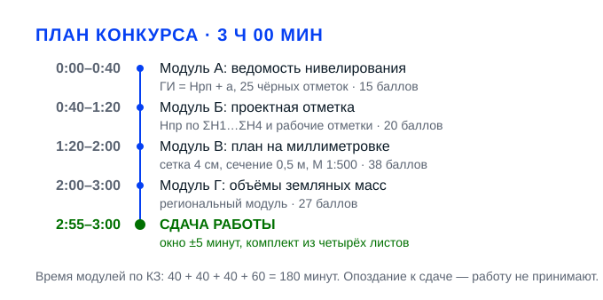
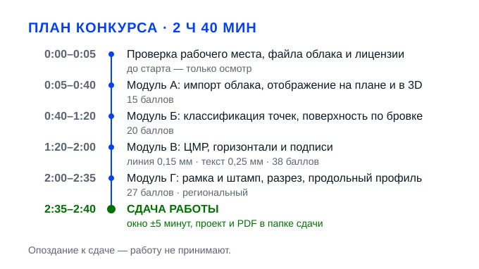
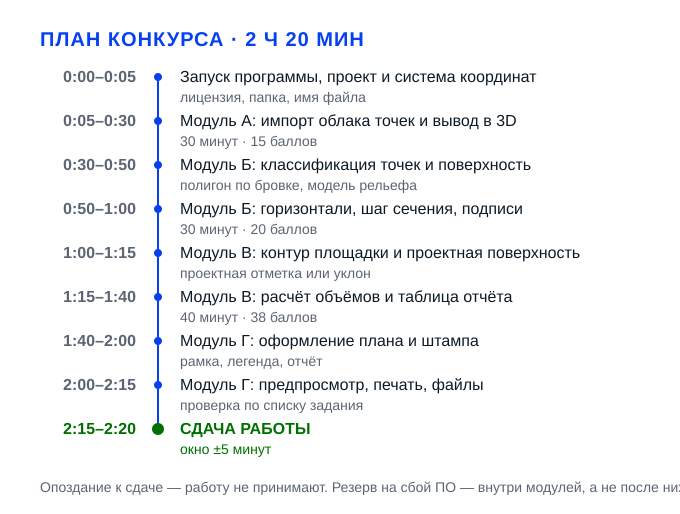

Геодезия (Р)
Задания ниже — официальные файлы «Абилимпикс» (источник: abilympics-russia.ru), разложенные по категориям. Решения написаны по тексту задания, регламенту и критериям оценки; в них указано, что именно проверяет эксперт.
Школьник
14–16 лет, базовый уровень заданияВыдержка из официального конкурсного задания: страницы, относящиеся к категории «Школьник» (стр. 4–6 источника).
Пошаговое решение
Категория «Школьники» — самая бумажная в компетенции «Геодезия»: прибор нужен только на первом модуле, а дальше время уходит на вычисления и черчение. По конкурсному заданию четыре модуля: ведомость нивелирования (40 минут, 15 баллов), проектная отметка площадки (40 минут, 20 баллов), план на миллиметровке в масштабе 1:500 с сечением рельефа 0,5 м (40 минут, 38 баллов) и региональный модуль объёмов земляных масс (60 минут, 27 баллов). Площадка — сетка 4×4 квадрата со стороной 20 м, то есть 100×100 м; на плане это 20×20 см, а сторона квадрата — ровно 4 см. Нужны нивелир с рейкой и штативом, миллиметровка А3, карандаши 2Т и ТМ, линейка, измеритель, лекало и калькулятор. Оценивают точность чисел и качество графики, поэтому разбор идёт по модулям: станция и отсчёты, горизонт инструмента и чёрные отметки, проектная отметка и рабочие отметки, сетка и горизонтали, объёмы и сдача комплекта.

Задача 1. Принять задание, проверить приборы и развернуть станциюМодуль А · 15 баллов
Модуль А — 40 минут и 15 баллов, но начинается он не с вычислений, а с приёмки: пять исходных чисел, исправный нивелир, устойчивый штатив и отгоризонтированная ось. Эти первые минуты кажутся потерей времени, а на деле решают, сойдутся ли ваши двадцать пять отметок с отметками эксперта. Дальше вся работа идёт с одной станции в центре сетки 4×4 квадрата со стороной 20 м: площадка 100×100 м целиком попадает в поле зрения, и переставлять прибор не нужно.
Действие 1.1. Принять задание и проверить оснащение
Шаг 1.1.1
После старта первым делом читаем бланк задания и выписываем в черновик пять чисел, от которых зависит всё остальное: отметку репера, отсчёт по задней рейке, сторону квадрата, число квадратов в сетке и высоту сечения рельефа. В нашем примере это Нрп = 120,847 м, а = 1,153 м, сторона 20 м, сетка 4 на 4 квадрата и сечение 0,5 м при масштабе 1:500. Эти же числа сверяем с планшетом на столе и с надписью на миллиметровке: если в задании 20 м, а на планшете 25 м, вы нарисуете не ту площадку.
Ведомость нивелирования — 15 баллов, и все они держатся на двух числах: Нрп и а. Перепишете отметку репера с ошибкой в разряде — и все двадцать пять чёрных отметок уедут на метр, а вместе с ними проектная отметка, рабочие отметки и объёмы. То есть 100 баллов превращаются в 15. Масштаб и сечение задают графику жёстко: при 1:500 сторона 20 м — это ровно 4 см на бумаге, и никакого «примерно» здесь нет.
В черновике пять чисел, и рядом с каждым записано, откуда он взялся — из задания, с планшета или из бланка ведомости. Проверьте себя простым вопросом: если эксперт назовёт любую вершину, смогу я сразу сказать, какая у неё должна быть отметка? Если ответ «нет», задание вы ещё не прочитали.
Типичная ошибка — взять сторону квадрата «из памяти», потому что на тренировке было 20 м, и не заметить, что региональный модуль меняет размеры квадратов: это прямо прописано в тридцати процентах изменений. Тогда сетка на плане расходится с полевой, точки нулевых работ съезжают, и модуль В на 38 баллов теряет почти всё.
Эксперт подходит в первые минуты и смотрит, выписаны ли исходные данные на черновик, или участник всё ещё листает задание, ища нужную строку. Второе он отмечает как потерю темпа, даже если дальше работа идёт гладко.
Шаг 1.1.2
Нивелир вынимаем из кейса за корпус, а не за окуляр, ставим на стол и осматриваем: пузырёк круглого уровня ходит свободно и не прилип к стеклу, сетка целая, компенсатор не гремит — прибор аккуратно покачиваем и слушаем, должен быть один короткий мягкий щелчок, а не дребезг. Проверяем фокусировку: наводим на рейку в 15 м, крутим кремальеру до резкой картинки, потом переводим взгляд на рейку в 3 м — изображение должно наводиться на резкость и держаться, а не «плыть».
Прибор — единственный источник всех двадцати пяти отсчётов, и его неисправность не исправляется вычислениями. Компенсатор, который звенит, даёт разброс отсчёта в 2–3 мм, а систематическая ошибка в 1 см сдвигает точку пересечения горизонтали на 1,1 м, то есть на 2,2 мм на плане — это больше допуска на положение точки. Замена прибора разрешена, но время модуля при этом не останавливают, поэтому проверку делают до старта.
Три движения: покачали прибор — внутри щелчок без дребезга; навели на дальнюю и на ближнюю рейку — резкость наводится кремальерой и держится; посмотрели в окуляр на светлый фон — сетка целая, без трещин и волосков. Пятка рейки чистая: комочек глины в 5 мм — это 5 мм ошибки в каждой отметке, причём одного знака.
Взять прибор с погнутыми дальномерными нитями: отсчёт ещё читается, а плечи уже не измерить. При остаточном наклоне оси 20″ и разности плеч 5 м это 0,5 мм на каждой вершине — немного, но ошибка систематическая и складывается на всех двадцати пяти точках. Хуже всего обнаружить это на двадцатой вершине, когда переделывать ведомость уже некогда.
Эксперт смотрит, как прибор берут из кейса — за корпус или за трубу, — и проверяют ли компенсатор. Отдельно он отмечает осмотр штатива: треснувшая головка и выработка в становом винте валят прибор в середине съёмки.
Шаг 1.1.3
Раскладываем лист миллиметровки А3 длинной стороной к себе и проверяем, что он не был сложен: залом даёт смещение линий до 0,5 мм, а при 1:500 это 25 см на местности. Рядом кладём карандаши 2Т и ТМ — твёрдый для сетки, мягче для надписей, — линейку 30–40 см с целыми делениями, угольник 30×60, циркуль-измеритель, прозрачное лекало, ластик и коричневую гелевую ручку или тушь для горизонталей. Всё лишнее с рабочего места убираем: на столе должно остаться только то, чем вы работаете, потому что лишние листы и упаковки отнимают и место, и время на поиск нужного инструмента.
План на миллиметровке — 38 баллов, самый дорогой модуль, и оценка идёт именно по графике: толщина линий, подписи, плавность горизонталей. Мятая бумага и мягкий карандаш вместо 2Т дают серую размазанную сетку, за которую снимают баллы за оформление по ЕСКД, даже если все вычисления безупречны.
Лист лежит ровно и на свет не просвечивает заломами; карандаш заточен так, что линия выходит тонкой и не рвётся; измеритель держит раствор и не пружинит; кромка лекала без скола. Проверьте на обрезке: линия, проведённая 2Т по линейке, должна быть одинаковой толщины по всей длине, примерно 0,15 мм.
Чертить мягким карандашом «чтобы виднее»: линия получается 0,4–0,5 мм, она сливается с соседней горизонталью, и вместо двух линий эксперт видит одну жирную. Вторая ошибка — рисовать на согнутом листе, а потом «выпрямлять»: сетка уезжает относительно рамки, и диагонали не сходятся.
Эксперт смотрит на инструмент до начала черчения: есть ли твёрдый карандаш, лекало и измеритель. Без лекала горизонтали почти гарантированно выходят ломаными, и это видно в итоговой оценке модуля В.
Действие 1.2. Поставить нивелир и отгоризонтировать ось
Шаг 1.2.1
Ставим штатив так, чтобы станция оказалась примерно в центре площадки: тогда все двадцать пять вершин видны с одной установки и переставлять прибор не придётся. Ноги раздвигаем на 1,2–1,5 м, головку поднимаем на уровень подбородка — 1,45–1,55 м, чтобы работать стоя и читать отсчёт без напряжения. Каждую ножку вдавливаем в грунт до упора и проверяем покачиванием, затем подтягиваем становой винт.
Одна станция на двадцать пять вершин — это ещё и время: перестановка прибора с горизонтированием отнимает 3–4 минуты, а весь модуль А идёт 40 минут, и в них умещаются приёмка, отсчёты, вычисления и чистовик. Штатив с плохо вдавленными ногами просаживается под весом прибора на 1–2 мм за час, и последние отсчёты уже не сходятся с первыми.
Толкните головку ладонью — она не качается и не скрипит; становой винт затянут от руки до упора, без ключа. Ноги стоят на твёрдом грунте, а не на траве, люке или бордюрном камне: на асфальте проверяем, что ни одна точка не «плывёт» под нагрузкой.
Поставить штатив у края площадки: дальние вершины видны под острым углом, рейка читается хуже, часть точек закрыта кустами или бордюром. Ещё хуже — не затянуть становой винт: прибор медленно поворачивается, и вы читаете отсчёт по другой стороне рейки, не замечая подмены.
Эксперт отмечает, где стоит станция. Положение в центре сетки — признак того, что участник понимает геометрию съёмки, а не просто «приткнул» прибор у первой попавшейся точки.
Шаг 1.2.2
Ставим прибор на головку, ловим становой винт с первого раза и затягиваем. Горизонтируем в два приёма: сначала подъёмными винтами выводим пузырёк круглого уровня в нуль-пункт, работая двумя винтами навстречу друг другу, а третьим только подправляем; потом смотрим в окуляр и элевационным винтом сводим концы цилиндрического уровня в контакт. После этого поворачиваем трубу на 90° и на 180° и проверяем, что пузырёк остаётся в нуле — ушёл на два деления, значит прибор надо юстировать или менять.
Наклон оси в 20″ на плече 50 м даёт 5 мм ошибки в отсчёте, то есть полсантиметра в отметке, а горизонталь на плане сдвигается на 35 см — это 0,7 мм, больше допуска на положение точки. Круглый уровень с ценой деления 8′ сам по себе такой наклон не ловит: при 8′ ошибка в отсчёте на том же плече достигает 11 см, поэтому цилиндрический уровень обязателен.
Пузырёк в нуль-пункте при четырёх положениях трубы — 0°, 90°, 180°, 270°, — расхождение не больше одного деления. Постучите пальцем по ножке штатива и посмотрите на рейку: отсчёт не должен «прыгать» на 2 мм, а если прыгнул, то должен вернуться обратно.
Крутить все три винта сразу: пузырёк гоняется по кругу, а ось остаётся наклонной, и вы этого не видите, потому что пузырёк «почти в нуле». Вторая ошибка — отгоризонтировать только по круглому уровню и не трогать цилиндрический: этого хватает, чтобы увести отсчёты на сантиметры.
Эксперт смотрит именно на поворот трубы на 180°: это единственный быстрый способ убедиться, что прибор действительно отгоризонтирован, а не просто поставлен на глаз.
Шаг 1.2.3
Проверяем плечи по дальномерным нитям: берём отсчёты по верхней и нижней нити на репере и на самой дальней вершине, расстояние считаем как D = 100·(верх − низ). Разность плеч держим в пределах 5 м — на площадке 100×100 м со станцией в центре это получается само. Рейку на репере и на вершинах держим вертикально по круглому уровню на самой рейке, а не «на глаз».
Равные плечи снимают сразу три ошибки: остаточный наклон оси, кривизну Земли и рефракцию — они действуют на задний и передний отсчёт одинаково и вычитаются. При разности плеч 5 м и остаточном наклоне 20″ набегает 0,5 мм на каждой вершине, а это двадцать пять одинаковых ошибок одного знака, которые не усредняются.
Dзад − Dпер ≤ 5 м по каждой вершине, разности записаны в черновик рядом с отсчётами. Рейка стоит вертикально: пузырёк в нуле, пятка на грунте, а не на траве. Если разность выходит за 5 м, дешевле перенести станцию, чем потом объяснять расхождение на защите.
Держать рейку «примерно вертикально»: наклон в 2° на высоте 1,5 м даёт 1 мм ошибки, наклон в 5° — уже 6 мм. Ошибка тихая: её не видно, пока не сравнишь прямые и обратные превышения, а на плане она выглядит как «дрожащая» горизонталь.
Эксперт обходит площадку и смотрит на рейку: вертикально ли её держат и не «клюёт» ли пятка на неровностях. Рейку с уровнем, которую держат по пузырьку, видно сразу.
Действие 1.3. Расписать сорок минут модуля
Шаг 1.3.1
Заранее расчерчиваем ведомость на двадцать шесть строк — репер плюс двадцать пять вершин — с графами «точка», «задний отсчёт а», «передний отсчёт в», «ГИ», «отметка Н». Вершины обходим змейкой: 1.1, 2.1, 3.1, 4.1, 5.1, затем 5.2, 4.2, 3.2, 2.2, 1.2 и так далее: так вы не пропустите ни одну точку и не собьётесь в нумерации. Нумерация в ведомости должна совпадать с рисунком сетки на плане, иначе на графике вы перепутаете углы.
Ведомость — 15 баллов, и её проверяют построчно: пропущенная вершина или сдвиг на один столбец читаются как ошибка расчёта, даже если арифметика верна. Змейка экономит время: рейка идёт по соседним точкам без возвратов, и все двадцать пять отсчётов реально снять за 10–12 минут из сорока.
В ведомости двадцать шесть строк, номера идут без пропусков, каждая строка подписана. Сверьте с эскизом: на нём двадцать пять точек, подписанных так же, как в ведомости. Если сомневаетесь, обводите номера на эскизе по мере взятия отсчётов.
Нумеровать вершины по столбцам, а на плане рисовать по строкам: тогда 4.2 в ведомости и 4.2 на чертеже — разные точки, и весь график оказывается повёрнутым на девяносто градусов. Обиднее всего то, что считать вы умеете, а теряете баллы за несовпадение систем нумерации.
Эксперт сверяет нумерацию ведомости и плана в самом начале. Несовпадение сразу ставит под сомнение всю графику модуля В, даже если она нарисована красиво.
Шаг 1.3.2
Размечаем сорок минут на бумаге: пять минут на приёмку и проверку приборов, двенадцать на отсчёты, тринадцать на вычисления ГИ и отметок, восемь на чистовик и две на контроль. Контрольную точку ставим на 0:35 — к этому моменту все отметки должны быть посчитаны, иначе чистовик пишется в спешке. Часы на площадке смотрим, а не полагаемся на ощущение времени.
Модуль А по КЗ идёт ровно 40 минут, и ведомость оценивается целиком: недописанная последняя строка стоит столько же, сколько вычислительная ошибка. Участники, которые рассуждают «сначала посчитаю на черновике, потом перенесу», к 0:38 остаются с черновиком и без пятнадцати баллов.
К 0:20 у вас двадцать пять отсчётов, к 0:33 — ГИ и все отметки, к 0:38 — чистовик. Если в 0:30 вы ещё считаете отметки, план на миллиметровке вы будете начинать в цейтноте, и это чувствуется на качестве графики.
Считать каждую отметку «с нуля» на калькуляторе, хотя ГИ один и все отметки получаются вычитанием одного числа. Вторая ошибка — оставить перенос в чистовик на последние пять минут: одна описка при переписывании, и строка не сходится, а пересчитывать уже нечем.
Эксперт смотрит на темп: успел ли участник к контрольной точке. Ровная работа без рывка в конце — признак отработанной технологии, и это влияет на общее впечатление от модуля.
Задача 2. Снять отсчёты и заполнить ведомость нивелированияМодуль А · 15 баллов
Ведомость — 15 баллов из 100, но роль у неё больше: это единственный документ, из которого растут все остальные модули. Здесь важно не столько считать, сколько не терять: один задний отсчёт, двадцать пять передних, один горизонт инструмента и двадцать пять вычитаний. Всё пишется в четыре знака после запятой и переносится в чистовик один раз, без помарок: ведомость — измеримый критерий, её проверяют построчно.
Действие 2.1. Взять отсчёты по рейке
Шаг 2.1.1
Рейку ставим на репер — знак вне сетки, у которого записана отметка 120,847 м, — и держим вертикально по круглому уровню на самой рейке. Наводим трубу, кремальерой добиваемся резкости, элевационным винтом сводим концы цилиндрического уровня в контакт и читаем отсчёт по средней нити с точностью до миллиметра: 1,153. Читаем трижды, каждый раз сбивая наводку поворотом трубы, и записываем все три значения подряд.
Задний отсчёт — единственное звено, связывающее площадку с высотной основой: через него появляется горизонт инструмента, а через ГИ — все двадцать пять отметок. Ошибка в 1 мм здесь не размазывается по сетке, а переносится в каждую вершину целиком, поэтому отсчёт читают трижды. Три замера вместо одного — это двадцать секунд, которые страхуют весь модуль на пятнадцать баллов.
Три отсчёта отличаются не больше чем на 1 мм: 1,153 / 1,153 / 1,152 — норма, а 1,153 и 1,158 уже говорят о том, что прибор или штатив не в порядке. Рейка стоит на самом знаке, а не рядом с ним; пузырёк на рейке в нуле, пятка чистая.
Прочитать отсчёт по верхней или нижней нити вместо средней: разница 30–60 мм, и все отметки уезжают на эту величину, причём одинаково, так что «на глаз» это не ловится. Вторая ошибка — взять отметку репера из памяти, а не из бланка задания.
Эксперт стоит рядом с репером и смотрит, читают ли отсчёт трижды и записывают ли все три значения, а не только последнее. Записанные замеры он считает доказательством контроля.
Шаг 2.1.2
Идём по змейке и на каждой вершине читаем отсчёт по средней нити, сразу записывая его в черновик напротив номера: 1.1 — 1,570; 2.1 — 1,640; 5.1 — 0,950; 5.5 — 1,520. Наведение делаем сначала грубым визиром, потом кремальерой, а контакт уровня проверяем после каждого поворота трубы, потому что ось чуть уходит. На одну вершину уходит 20–25 секунд, на все двадцать пять — около десяти минут.
Передние отсчёты — это и есть съёмка: из них вычитанием ГИ получаются чёрные отметки, по которым строятся горизонтали и считаются объёмы. Перепутанная цифра в этой цепочке вылезает не сразу, а на графике: в одном квадрате горизонталь делает петлю, и эксперт видит её мгновенно.
Все двадцать пять клеток черновика заполнены, номера идут по змейке без пропусков. Пробегите ряд глазами: при спокойном рельефе соседние вершины не могут отличаться на полметра — если отличаются, вы прочли не ту нить.
Записывать отсчёт «потом, по памяти»: через десять минут вы помните порядок обхода, но не цифры. Вторая ошибка — читать, не проверив контакт уровня: концы разошлись на два деления, и отсчёт уже врёт на 2 мм, хотя выглядит совершенно нормально.
Эксперт фиксирует, пишется ли отсчёт на точке, а не после возвращения к столу. Запись с задержкой — самая частая причина перепутанных вершин. Ещё он смотрит, возвращается ли рейка на ту же точку, если отсчёт пришлось повторить.
Шаг 2.1.3
Замкнув обход, снова ставим рейку на репер и читаем контрольный отсчёт: он должен отличаться от первого не больше чем на 5 мм, в идеале совпасть до миллиметра. Если расхождение больше, проходим обход повторно, начиная с вершин, где отсчёт выбивался из соседних. Тут же проверяем пятку: ставим рейку на бетонную плиту, читаем, переставляем на 2–3 см и читаем снова — разница больше 2 мм означает стёртую или загрязнённую пятку.
Незамкнутый ход нечем проверить: ошибка в 5 мм на двадцати пяти вершинах не выглядит ошибкой, а горизонтали по ней всё равно построятся — просто не там, где надо. Контроль замыкания стоит две минуты и заменяет пересчёт всей ведомости. Пятка — второе слабое место рейки: её износ в 2 мм сдвигает все отметки на те же 2 мм, причём одного знака.
Разность контрольного и первого отсчёта не больше 5 мм, разность по пятке не больше 2 мм. Оба числа записаны в черновик рядом с ведомостью — эксперту это показывает, что контроль действительно проводился, а не декларировался.
Пропустить замыкание со словами «и так сойдёт»: систематическая ошибка остаётся незамеченной и уходит в план. Обратная ошибка — начать переделывать все отсчёты из-за расхождения в 6 мм, когда причина в комке грязи на пятке рейки.
Эксперт спрашивает, какое расхождение получилось при замыкании. Ответ «не проверял» стоит дороже, чем само расхождение, каким бы оно ни было. Он же проверяет, записано ли расхождение на бумаге, а не удержано в памяти до конца модуля.
Шаг 2.1.4
Переносим отсчёты из черновика в ведомость в том же порядке, в каком брали: три знака после запятой, метр в целой части, никаких «1,57» вместо «1,570». Графу «задний отсчёт» заполняем только в строке репера, у вершин — «передний». Каждую строку проговариваем про себя: номер, отсчёт, номер, отсчёт — медленно, зато без сдвига на строку. Черновик в конце подписываем и прикладываем к сдаче: по нему видно, что отсчёты брались в поле, а не переписывались с чужого листа.
Сдвиг на строку — самая частая механическая ошибка: все вычисления верны, но отметки приписаны соседним вершинам, и на плане рельеф получается «рябью». Проверить это потом почти невозможно, потому что каждая отдельная отметка выглядит правдоподобно. Сдвиг на строку обычно находят уже на плане, когда горизонталь делает петлю в одном квадрате и уходит в соседний.
Номера в ведомости идут 1.1, 2.1, 3.1, 4.1, 5.1, 5.2, 4.2 — точно как в черновике, количество строк — двадцать пять плюс репер. Выборочно сверьте три строки: цифры в ведомости и в черновике совпадают до последнего знака.
Переписывать ведомость «набело» сразу, без черновика: исправления в ней не допускаются, а стирать ластиком на бланке — значит сдавать лист с потёртостями, что эксперт отмечает отдельным пунктом. Бланк с помарками могут не принять вовсе, и тогда модуль оценивают по черновику, а он не оформлен как документ.
Эксперт проверяет ведомость построчно и сверяет её с полевыми записями. Расхождение между черновиком и чистовиком он замечает сразу, потому что смотрит оба листа.
Действие 2.2. Вычислить горизонт инструмента и чёрные отметки
Шаг 2.2.1
Считаем горизонт инструмента по формуле КЗ: ГИ = Нрп + а = 120,847 + 1,153 = 122,000 м. Складываем в столбик, а не в уме, и записываем в верхнюю строку ведомости с тремя знаками после запятой. Дальше это число повторяется в каждой строке, поэтому его стоит обвести рамкой: так вы не пересчитываете его двадцать пять раз и не путаете с отметками. Рядом с числом пишем формулу и слагаемые, чтобы ход был виден без объяснений.
ГИ — это высота визирной оси над уровнем моря, и по КЗ именно через него считаются абсолютные, то есть чёрные, отметки: Н = ГИ − в. Один раз посчитанный ГИ заменяет двадцать пять отдельных превышений: вся ведомость сводится к вычитанию одного числа. Ошибка в ГИ на 1 см — это ошибка во всех отметках и в проектной отметке, то есть 15 и 20 баллов сразу.
ГИ = 122,000 ровно. Проверьте обратным действием: 122,000 − 1,153 = 120,847, то есть отметка репера. Если обратный ход не сходится, значит перепутаны знаки или разряды при сложении. Обратная проверка занимает десять секунд и заменяет повторное сложение в столбик.
Сложить 120,847 и 1,153 как 121,000, потеряв единицу переноса: тогда все отметки окажутся на метр ниже, а проектная отметка 120,50 будет выглядеть как метровая насыпь там, где её нет, и объёмы вырастут в разы.
Эксперт смотрит на первую строку ведомости: правильный ГИ — 122,000, и это видно за секунду. Дальше он выборочно проверяет вычитания. Отдельно он смотрит, не стёрта ли строка с горизонтом инструмента и читается ли она.
Шаг 2.2.2
По каждой вершине вычитаем: Н = ГИ − в. Для 1.1: 122,000 − 1,570 = 120,430; для 5.1: 122,000 − 0,950 = 121,050; для 1.5: 122,000 − 1,950 = 120,050; для 5.5: 122,000 − 1,520 = 120,480. Считаем по строкам сверху вниз, отмечая посчитанные строки точкой на полях, чтобы видеть, где остановились. Вычитаем в столбик, а не в уме: на третьей-четвёртой строке разряды в уме теряются, и ошибка уходит дальше.
Чёрные отметки — фундамент всех оставшихся модулей: из них считается проектная отметка на 20 баллов, по ним строятся горизонтали на 38 баллов и считаются объёмы на 27. Ошибка в одной отметке не размазывается: на плане она даёт либо петлю горизонтали, либо выброс, который эксперт находит при первом взгляде.
Диапазон отметок 120,050…121,050 — перепад около метра на сто метров, это спокойный рельеф, так и должно быть. Если получилось 118 или 124, вы перепутали знак или взяли не ту строку. Пересчитайте три вершины обратным ходом: ГИ − Н должно дать исходный отсчёт.
Считать Н = в − ГИ: знак переворачивается, рельеф опрокидывается, и самый низкий угол площадки становится самым высоким. Горизонтали при этом выглядят правдоподобно, потому что их форма просто зеркальна, и ошибку видно только по подписям отметок и по линии нулевых работ.
Эксперт выборочно пересчитывает три-четыре отметки и смотрит не только на арифметику, но и на то, в какую сторону убывает рельеф на площадке. Он же смотрит, не появились ли в ведомости исправления и не перепутаны ли столбцы.
Шаг 2.2.3
Округляем отметки до сантиметра: 120,43; 121,05; 120,05; 120,48 — по заданию в ведомости даются два знака после запятой. Округление делаем один раз, на последнем шаге, а не на каждом: если округлять промежуточные величины, накопится до 3 см. Рядом с ведомостью выписываем максимальную и минимальную отметки — они понадобятся, чтобы выбрать, какие горизонтали вообще попадут на план.
Два знака — не прихоть: при сечении 0,5 м сантиметр составляет два процента интервала, и такая точность соответствует техническому нивелированию с допустимой невязкой 50 мм на километр хода. Три знака создают иллюзию точности в миллиметр, которой у вас нет, а эксперт сверяет разрядность с методикой.
Все двадцать пять отметок имеют ровно два знака после запятой. Перепад 121,05 − 120,05 = 1,00 м. Проверьте, что ни одна отметка не выбивается из ряда соседей больше чем на 0,15 м: при шаге сетки 20 м это уже повод пересчитать.
Писать «120,4» вместо «120,40»: при переносе на план вы теряете разряд и строите горизонталь по другой отметке. Вторая ошибка — округлять каждую промежуточную величину, включая сам горизонт инструмента.
Эксперт смотрит на разрядность и на отсутствие исправлений: ведомость без помарок читается как работа, сделанная начисто и осознанно. Отдельно он отмечает, есть ли под ведомостью подпись и дата, без них документ не принимают.
Шаг 2.2.4
Заполняем чистовик: шапка с номером модуля и фамилией, графы «точка», «а», «в», «ГИ», «Н», единицы измерения указаны в шапке каждой графы. Пишем гелевой ручкой, без исправлений; ошиблись — берём новый бланк, потому что зачёркивания в ведомости не допускаются. Внизу ставим подпись и дату. Заполнив лист, откладываем его и смотрим целиком, а не построчно: так сразу видны съехавшие столбцы.
Ведомость — измеримый критерий на 15 баллов, и эксперт проверяет её как документ, а не как черновик. Оформление с единицами и подписями входит в оценку, потому что по такому документу потом работают другие люди: по нему считают объёмы земляных масс. Без единиц ведомость нельзя проверить на правдоподобие: 120,43 в метрах и в сантиметрах читается одинаково.
Шапка заполнена, у каждой графы есть единица измерения, все двадцать пять строк на месте, исправлений нет. Пробегите лист по диагонали: цифры должны стоять ровно в своих графах, без съезда на соседний столбец.
Сдать ведомость с зачёркнутой строкой: эксперт не может принять исправленный документ, и 15 баллов превращаются в 10–12. Вторая ошибка — не указать единицы: ведомость в метрах и ведомость в миллиметрах выглядят одинаково, а разница в тысячу раз.
Эксперт оценивает ведомость целиком: полноту, разрядность, отсутствие помарок и наличие подписи. Спорные строки он пересчитывает при вас. Если строка вызывает сомнение, он просит пересчитать её при нём, не отходя от стола.
Задача 3. Вычислить проектную отметку и рабочие отметкиМодуль Б · 20 баллов
Модуль Б — 40 минут и 20 баллов: одна проектная отметка и двадцать пять рабочих. Здесь всё решает не арифметика, а понимание весов в формуле и знаков в разностях. После модуля у вас на руках должна быть полная картина площадки: где её подсыпают, где срезают, где проходит граница между насыпью и выемкой и на каком расстоянии от каждой вершины она пересекает стороны квадратов.
Действие 3.1. Посчитать проектную отметку горизонтальной площадки
Шаг 3.1.1
Раскладываем двадцать пять отметок по кратности вхождения в квадраты. Угловые вершины 1.1, 5.1, 1.5 и 5.5 входят в один квадрат — их сумма ΣН1 = 482,01. Вершины на сторонах сетки, кроме угловых, входят в два квадрата, их двенадцать, ΣН2 = 1445,96. Внутренние вершины входят в четыре квадрата, их девять, ΣН4 = 1084,54. Вершин, входящих в три квадрата, в прямоугольной сетке нет, поэтому ΣН3 = 0.
Формула Нпр = (ΣН1 + 2ΣН2 + 3ΣН3 + 4ΣН4)/(4n) — это среднее из средних по квадратам: сумма четырёх отметок каждого квадрата делится на четыре, потом всё делится на число квадратов, и после приведения подобных получаются веса 1, 2 и 4. Задание даёт именно эту формулу, и эксперт проверяет прежде всего веса, потому что ошибаются тут не в счёте, а в понимании.
Сумма коэффициентов должна равняться 4n = 64: четыре угла по единице, двенадцать боковых по двойке и девять внутренних по четвёрке дают 4 + 24 + 36 = 64. Пересчитайте количество вершин в каждой группе: 4, 12, 9 — всего двадцать пять, ни одна не потеряна и не посчитана дважды.
Отнести боковую вершину к группе внутренних: тогда числитель вырастет на две отметки, то есть примерно на 241, и Нпр уедет почти на 4 см. На плане это сдвиг горизонталей почти на десятую часть интервала сечения, а объёмы изменятся на десятки кубометров.
Эксперт смотрит на разбивку по группам, а не на итог: правильные 4, 12 и 9 видны сразу, а неверный вес при верной сумме — самая коварная ошибка модуля.
Шаг 3.1.2
Подставляем числа: Нпр = (482,01 + 2·1445,96 + 4·1084,54)/(4·16) = (482,01 + 2891,92 + 4338,16)/64 = 7712,09/64 = 120,5014 м. Округляем до сантиметра — Нпр = 120,50 м. Считаем в два действия, сначала числитель, потом деление, и записываем оба числа, чтобы был виден ход решения. Запись ведём так, чтобы её можно было проверить с первого взгляда: скобки, множители, числитель, знаменатель, результат.
Проектная отметка — 20 баллов модуля Б и точка отсчёта для объёмов: земляные массы считаются относительно неё, поэтому сантиметр ошибки в Нпр даёт 16 кубометров по всей площадке в 1600 м². Округление до сантиметра обязательно: рабочие отметки и точки нулевых работ считаются от 120,50, а не от 120,5014.
Числитель 7712,09, знаменатель 64, частное 120,5014. Проверьте умножения по отдельности: 2·1445,96 = 2891,92; 4·1084,54 = 4338,16; сумма трёх слагаемых 7712,09. Если сумма расходится на 0,01–0,02, ищите потерянную вершину, а не ошибку в делении.
Забыть множители и разделить простую сумму: (482,01 + 1445,96 + 1084,54)/64 = 47,07 — абсурд, который заметят сразу. Опаснее ошибка «на один множитель»: результат отличается на два-три сантиметра, выглядит правдоподобно и тихо уводит всю графику и все объёмы.
Эксперт смотрит на запись хода: числитель, знаменатель, промежуточные суммы. Готовый ответ без выкладки оценивается ниже, даже если он верен. Он же смотрит, не подставлены ли отметки в формулу в другом порядке и не потерян ли один из множителей.
Шаг 3.1.3
Проверяем результат вторым способом: считаем простое среднее двадцати пяти отметок — 3012,51/25 = 120,5004. Оно отличается от Нпр на 1 мм, и это нормально: расхождение возникает только за счёт нелинейности рельефа, а на нашей почти плоской площадке её почти нет. Если расхождение больше двух сантиметров — веса расставлены неверно. Оба числа выписываем рядом — 120,5004 и 120,5014, — чтобы разница в миллиметр была видна глазом, а не угадывалась.
Два независимых способа сойтись в пределах миллиметра — это и есть контроль вычисления, который в методике заменяет повторный счёт. Так вы за минуту узнаёте, что Нпр верна, и спокойно переходите к рабочим отметкам, вместо того чтобы пересчитывать формулу трижды.
Простое среднее 120,5004, проектная отметка 120,5014, разность 1 мм. Сумма коэффициентов 64. Если все три числа сходятся, модуль Б закрыт по первой части и можно переходить к разностям. Если расхождение вышло больше двух сантиметров, ошибка в весах, а не в отметках: пересчитайте группы вершин.
Проверять себя тем же способом, что и считали: пересчёт по той же формуле с теми же весами не ловит ошибку в весах. Второй способ должен быть другим — через простое среднее или через средние по квадратам.
Эксперт ценит, когда участник сам называет расхождение контрольного счёта: это признак того, что контроль настоящий, а не декоративный. Отдельно он спрашивает, чем именно проверялся результат, и ждёт второй способ, а не повторный счёт.
Действие 3.2. Вычислить рабочие отметки и найти нулевую линию
Шаг 3.2.1
Считаем рабочие отметки по формуле КЗ: hраб = Нпр − Н. Для вершины 1.1: 120,50 − 120,43 = +0,07; для 5.1: 120,50 − 121,05 = −0,55; для 1.5: 120,50 − 120,05 = +0,45; для 5.5: 120,50 − 120,48 = +0,02. Знак ставим обязательно, даже плюс: рабочие отметки без знака непригодны для расчёта объёмов и для поиска нулевых точек. Проверяем формулу на двух вершинах с разными знаками, чтобы сразу увидеть обе картины — насыпь и выемку.
Рабочая отметка — это высота насыпи или глубина выемки в данной точке: положительная означает, что проект выше земли, отрицательная — что ниже. Задание требует рабочие отметки для каждой вершины, и именно из них считаются 27 баллов модуля Г: без знака объёмы насыпи и выемки складываются в бессмысленную сумму.
Сумма всех двадцати пяти рабочих отметок близка к нулю: у нас −0,01 м, что при округлении до сантиметра нормально. Это главный контроль модуля: если сумма выходит −1,25 м, значит Нпр посчитана неверно или потеряна вершина.
Считать hраб = Н − Нпр вместо Нпр − Н: все знаки переворачиваются, насыпь становится выемкой, и объёмы в модуле Г выходят с обратным знаком. Формально арифметика верна, но линия нулевых работ и подписи на плане начинают противоречить друг другу.
Эксперт смотрит на знаки: плюсы должны стоять в пониженной части площадки, минусы — в повышенной. Если наоборот, ошибка в самой формуле, а не в счёте.
Шаг 3.2.2
Раскладываем рабочие отметки по эскизу сетки: в северо-западном углу плюсы до +0,45, в юго-восточном минусы до −0,55. Значит, площадку срезают на юго-востоке и подсыпают на северо-западе. Подписываем рабочие отметки на эскизе мелким шрифтом над отметкой земли, со знаком, и обводим положительные и отрицательные разными цветами — это ускорит поиск нулевых точек.
Картина знаков — это будущая линия нулевых работ: она проходит там, где насыпь переходит в выемку, и её форма определяет, какие квадраты придётся делить на части при расчёте объёмов. Если сразу видно, что разрезана почти половина квадратов, вы иначе планируете время модуля Г.
Положительных отметок тринадцать, отрицательных двенадцать: примерно поровну, значит проектная отметка выбрана удачно и баланс земляных масс близок к нулю. Если плюсов двадцать и минусов пять, Нпр «съехала» вверх и площадку почти всю подсыпают.
Подписать рабочие отметки без знака или разместить их так, что земля и проект путаются: при поиске нулевых точек вы будете брать не ту разность. Вторая ошибка — не отметить на эскизе, какие квадраты разрезаны нулевой линией: их семь из шестнадцати, и именно они дают всю невязку объёмов.
Эксперт смотрит, подписаны ли рабочие отметки у всех вершин и различаются ли они по знаку визуально, а не только в цифрах. Он же проверяет, совпадают ли подписи на эскизе с числами в ведомости, вершина за вершиной.
Шаг 3.2.3
Ищем точки нулевых работ на сторонах, где знаки рабочих отметок разные. Расстояние от вершины с отметкой h1 считаем по пропорции X = d·|h1|/(|h1| + |h2|) при d = 20 м. Для стороны 1.1–2.1 отметки +0,07 и −0,11 дают X = 20·0,07/0,18 = 7,8 м от вершины 1.1. Для стороны 2.2–3.2: X = 20·0,01/0,15 = 1,3 м от вершины 2.2. Всего таких точек восемь — по числу пересечений нулевой линии со сторонами сетки.
Точки нулевых работ — это места, где проект совпадает с землёй, то есть где не надо ни резать, ни сыпать. Через них проходит линия нулевых работ, которую задание требует провести на плане, и они же делят квадраты на части при расчёте объёмов на 27 баллов. Без них объём разрезанного квадрата не посчитать вообще.
Сумма расстояний от двух соседних вершин равна 20 м: 7,8 + 12,2; 1,3 + 18,7; 17,5 + 2,5. Если сумма не двадцать, арифметика неверна. Количество точек равно количеству смен знака по сторонам сетки — восемь, и это число стоит записать рядом с эскизом.
Считать X от вершины с большей отметкой, не проверив, от какой вершины откладывать: точки съезжают на противоположную сторону, и нулевая линия получается вывернутой. Вторая ошибка — делить на (h1 + h2) без модулей: получаются отрицательные расстояния, которые вы машинально отложите в другую сторону.
Эксперт проверяет две-три точки пересчётом: пропорция должна воспроизводиться на калькуляторе за десять секунд, и расхождение сразу видно. Отдельно он смотрит, сколько точек получилось: восемь, а не шесть и не десять.
Шаг 3.2.4
Выписываем рабочие отметки и точки нулевых работ в отдельный эскиз, по которому будем чертить: у каждой вершины отметка земли, рабочая отметка и номер, на каждой разрезанной стороне — расстояние до нулевой точки. Этот эскиз — рабочий документ модуля В: по нему точки наносят на миллиметровку, не возвращаясь к ведомости. Восемь размеров и двадцать пять пар чисел — это вся информация, которая нужна для чертежа.
План чертится 40 минут, и в это время нельзя искать числа по трём листам. Эскиз с готовыми расстояниями экономит пять-семь минут и снимает главный риск модуля В — перепутать, от какой вершины откладывать X. Эксперт по эскизу видит, что участник считал осознанно, а не рисовал по наитию.
На эскизе двадцать пять вершин с двумя числами у каждой и восемь размеров на сторонах. Проверьте, что размеры стоят именно там, где меняется знак, и что они не перепутаны местами: 7,8 и 12,2 — это одна и та же сторона, отсчитанная с двух концов.
Чертить план прямо с ведомости, держа расстояния в голове: на третьей горизонтали вы ошибётесь стороной, и линия пойдёт по диагонали квадрата. Исправлять графику дороже, чем один раз аккуратно посчитать.
Эксперт смотрит на наличие промежуточного эскиза: он показывает, что участник разделяет расчёт и графику так же, как это делают в производстве. По эскизу ему видно, сколько времени ушло на расчёт, а сколько осталось на черчение.
Задача 4. Построить план площадки на миллиметровке в масштабе 1:500Модуль В · 38 баллов
Самый дорогой модуль: 40 минут и 38 баллов, измеримых не цифрой, а глазами. Здесь нужно провести сетку квадратов, выписать отметки, отложить по сторонам точки горизонталей, соединить их плавными линиями коричневым цветом, подписать и провести линию нулевых работ. Площадка 100×100 м при 1:500 занимает 20×20 см, сторона квадрата — ровно 4 см, поэтому вся графика умещается на листе А3 вместе с рамкой и основной надписью по ЕСКД.
Действие 4.1. Разметить лист и построить сетку квадратов
Шаг 4.1.1
Компонуем лист А3: рамка с левым полем 20 мм и остальными по 5 мм, основная надпись 185×55 мм в правом нижнем углу по форме 1 ГОСТ 2.104. Сетка 4×4 квадрата при 1:500 — это 20×20 см, то есть 200×200 мм, и вместе с полями она занимает почти весь лист. Поэтому центр сетки смещаем влево и вверх, оставляя под штамп место, а не наоборот. Сначала карандашом 2Т проводим тонкую рамку, потом размечаем габарит сетки.
План оформляется по ЕСКД — это прямо записано в результате модуля В, и рамка со штампом входят в 38 баллов. Сетка, сдвинутая к краю, обрезается рамкой, и часть горизонталей уходит за поле: эксперт видит нарушение компоновки и снимает баллы за оформление, даже если рельеф построен идеально.
Рамка: 20 мм слева, по 5 мм сверху, справа и снизу, проверяется линейкой. Габарит сетки 200×200 мм вписан в поле с запасом не меньше 15 мм со всех сторон, кроме левого. Штамп не перекрывает сетку и не наезжает на подписи горизонталей.
Начинать сразу с сетки, не разметив рамку: к концу черчения выясняется, что сетка вылезает за поле, а перечерчивать план уже нет времени. Вторая ошибка — взять лист А4: 200×200 мм туда не помещаются вместе со штампом.
Эксперт первым делом смотрит на компоновку листа: рамка и штамп видны за метр и сразу формируют впечатление о работе. Он же проверяет, оставлено ли слева поле 20 мм под подшивку листа в комплект.
Шаг 4.1.2
Строим сетку от одной базовой линии: откладываем по 4 см пять раз по горизонтали, затем от крайних точек вверх по 4 см пять раз и соединяем. Каждый отрезок откладываем измерителем от предыдущего, а не накапливаем линейкой от нуля — так ошибка не суммируется. Постоянно контролируем диагонали: у квадрата со стороной 4 см они равны 4·√2 = 5,66 см, у всей сетки — 28,28 см.
4 см на плане — это 20 м на местности, и ошибка в 0,2 мм при построении даёт 10 см на местности. При откладывании от нуля линейкой накапливается до 0,5 мм к четвёртому квадрату: сетка превращается в трапецию, и точки нулевых работ перестают совпадать с расчётными, а это уже прямые потери по графике.
Диагонали всех шестнадцати квадратов равны 5,66 см с отклонением не больше 0,3 мм, диагональ большого квадрата — 28,28 см с отклонением не больше 0,5 мм, противоположные стороны равны между собой. Проверяйте измерителем, а не на глаз: разница в полмиллиметра видна только инструментом.
Чертить сетку по линейке от одного нуля: к пятому штриху накапливается 0,4–0,6 мм, квадраты становятся разными, и все интерполяции съезжают. Вторая ошибка — принять 4 см за 20 м «примерно»: масштаб 1:500 округлений не допускает, здесь каждый миллиметр на плане — это полметра на местности.
Эксперт проверяет диагонали измерителем на двух-трёх квадратах: это самый быстрый способ оценить качество сетки, и он делается за минуту. Второй его приём — сравнить два противоположных квадрата сетки по диагонали листа.
Шаг 4.1.3
Накалываем вершины иглой измерителя строго в пересечениях линий, обводим точки кружками диаметром 1,5–2 мм и подписываем номера по той же схеме, что в ведомости: от 1.1 до 5.5. Номер у крайних вершин ставим снаружи сетки, у внутренних — рядом с точкой так, чтобы он не перекрывал будущие горизонтали. Сразу пересчитываем: двадцать пять точек, двадцать пять номеров, ни одного пропуска.
Накол — это физическая точка плана: сместите её на 0,3 мм, и все линии, которые из неё выходят, пойдут не туда. Нумерация, совпадающая с ведомостью, — условие проверяемости: эксперт сверяет отметки у вершин с ведомостью и должен видеть одну и ту же систему координат.
Двадцать пять наколов, все в пересечениях, кружки одинакового размера, номера читаются и не сливаются с линиями сетки. Сверьте три вершины по диагонали: 1.1 — левый нижний угол, 5.5 — правый верхний, 3.3 — центр сетки.
Подписывать номера внутри квадрата: при проведении горизонталей цифры сливаются с линиями, и вы теряете ориентацию на листе. Вторая ошибка — накалывать точку, держа измеритель наклонно: накол уходит на 0,2–0,3 мм от пересечения, и это уже 10–15 см на местности.
Эксперт смотрит на размер накола: аккуратная точка 0,2 мм и ровные кружки читаются как работа на планшете, а не на коленке. Он также смотрит, не продавлены ли лист и подложка в местах наколов от слишком сильного нажима.
Действие 4.2. Нанести отметки и провести горизонтали
Шаг 4.2.1
Выписываем у каждой вершины отметку земли с двумя знаками после запятой — 120,43; 120,61 — шрифтом 2,5 мм, а под ней рабочую отметку со знаком, тем же шрифтом. Положительные рабочие отметки обводим тонкой линией, чтобы видеть границу насыпи. Никаких трёхзначных чисел на плане: 120,43, а не 120,430, иначе подписи занимают вдвое больше места и наезжают на горизонтали.
Подписи — часть графики, за которую дают 38 баллов: без них план не читается, и эксперт не может проверить, правильно ли проведена горизонталь. Рабочие отметки нужны ещё и затем, чтобы линия нулевых работ не повисла без объяснения: по ним видно, с какой стороны насыпь, а с какой выемка.
У каждой из двадцати пяти вершин две подписи, знаки рабочих отметок проставлены, высота цифр одинаковая — 2,5 мм. Цифры не наезжают на линии сетки и не закрывают места, где пройдут горизонтали: проверьте это, отойдя от листа на шаг.
Подписать только отметки земли и забыть рабочие: тогда линия нулевых работ выглядит немотивированной, а модуль Г нечем проверять. Вторая ошибка — писать отметки так, что они перекрывают места будущих горизонталей, и потом вести линию «в обход» цифры.
Эксперт проверяет подписи у четырёх-пяти вершин и сверяет с ведомостью: расхождение хотя бы в одном знаке — сигнал пересчитать весь план. Отдельно он смотрит, не написаны ли отметки карандашом вместо ручки: такие подписи стираются.
Шаг 4.2.2
Считаем точки пересечения горизонталей со сторонами сетки по формуле из задания: X1 = d·(Н1 − Нг)/(Н1 − Н2), X2 = d − X1. Для горизонтали 120,50 на стороне 1.1–2.1: Н1 = 120,43, Н2 = 120,61, значит X1 = 20·(120,43 − 120,50)/(120,43 − 120,61) = 20·(−0,07)/(−0,18) = 7,8 м, а X2 = 12,2 м. В масштабе 1:500 это 1,56 см и 2,44 см от соответствующих вершин.
Интерполяция по стороне — единственный корректный способ провести горизонталь между двумя отметками: рельеф внутри квадрата принимается линейным, и точка с заданной отметкой лежит на пропорциональном расстоянии от вершин. Через сечение 0,5 м на нашей площадке проходят две горизонтали — 120,50 и 121,00: на первую приходится восемь точек, на вторую две, и это число стоит сверить с эскизом.
X1 + X2 = 20 м для каждой стороны, знаки разностей (Н1 − Нг) и (Н1 − Н2) дают положительное расстояние. Проверьте на калькуляторе три точки: 7,8; 1,3 и 17,5 м. Если получается 19,4 или 21, вы взяли не те отметки вершин.
Делить на (Нг − Н2) вместо (Н1 − Н2): знаменатель меняет знак, и точка уезжает за пределы стороны — на плане это выглядит как горизонталь, выходящая из квадрата в соседний. Вторая ошибка — интерполировать «на глаз», посередине стороны: при перепаде 0,18 м на 20 м ошибка достигает двух метров.
Эксперт пересчитывает одну-две точки: совпадение с планом до 0,5 мм подтверждает, что интерполяция считалась, а не рисовалась от руки. Он же считает, сколько точек легло на каждую горизонталь, и сверяет с эскизом.
Шаг 4.2.3
Откладываем измерителем вычисленные расстояния от вершин, накалываем точки на сторонах и обводим их маленькими кружками того же диаметра, что вершины, но не заливая. Соединяем точки с одинаковыми отметками плавной линией по лекалу, ведя карандаш от точки к точке без остановок: на каждой стороне линия должна пройти точно через накол. Горизонталь 120,50 идёт по диагонали — входит на площадку по южной стороне в 7,8 м от вершины 1.1 и выходит на восточной в 16,9 м от вершины 5.4.
Плавность и точность прохождения через наколы — это и есть та часть 38 баллов, которую нельзя добрать вычислениями. Лекало нужно потому, что горизонталь — кривая: от руки вы получите ломаную с изломами на каждой стороне, а эксперт ищет именно изломы в местах пересечения линий сетки.
Линия проходит через все восемь наколов, без изломов на сторонах квадратов, кривизна меняется плавно. Прокатите по линии карандаш, не отрывая: рука должна идти одним движением. Проверьте, что линия не заходит в квадрат, где все отметки ниже 120,50.
Соединять точки отрезками по линейке: получается многоугольник, и вместо рельефа на плане появляется ломаная, за которую снимают баллы за графику. Вторая ошибка — вести линию «по красивой дуге», не глядя на наколы: расхождение в 1–2 мм эксперт видит сразу.
Эксперт ведёт взглядом по каждой горизонтали: излом на стороне квадрата и промах мимо накола — два самых заметных дефекта графика. Второй признак — нет ли на линии ступенек на границах квадратов, где меняется направление.
Шаг 4.2.4
Подписываем горизонтали коричневым цветом: разрываем линию в удобном месте, вписываем отметку 120,50 шрифтом 2,5 мм так, чтобы основание цифр стояло по направлению склона вниз, и продолжаем линию. Горизонтали обводим коричневой гелевой ручкой или тушью толщиной 0,15 мм, утолщённые — 0,3 мм; в характерных перегибах ставим бергштрихи длиной 1,5–2 мм в сторону понижения.
Подпись и цвет — требование задания: горизонтали выделяются коричневым, и это отличает рельеф от ситуации. Основание цифр по склону — не украшение, а способ читать план без стрелок: по подписи сразу видно, в какую сторону падает местность. Утолщённой делают каждую пятую горизонталь, то есть при сечении 0,5 м — через 2,5 м.
Подпись читается, линия под ней разорвана ровно на ширину цифры, цвет коричневый и одинаковый по всей длине, толщина 0,15 мм без утолщений и потёков. Бергштрихи направлены в сторону меньших отметок: проверьте на горизонтали 121,00 — она в юго-восточном углу, склон идёт вниз к северо-западу.
Обвести горизонтали той же ручкой, что и сетку, чёрным: рельеф сливается с сеткой, и план перестаёт читаться. Вторая ошибка — подписывать так, что цифра садится на соседнюю линию: подпись должна стоять в разрыве, а не поверх.
Эксперт смотрит на подписи в первую очередь: они должны читаться с расстояния вытянутой руки и стоять по склону, а не вверх ногами. Он также смотрит, подписаны ли обе горизонтали, а не только та, что длиннее.
Действие 4.3. Провести линию нулевых работ и оформить план
Шаг 4.3.1
Откладываем на сторонах восемь точек нулевых работ, найденных в модуле Б: 7,8 м от вершины 1.1, 1,3 м от 2.2, 17,5 м от 2.3, 18,8 м от 3.4 по горизонтальным сторонам и 18,3 м от 2.1, 2,4 м от 3.3, 1,3 м от 4.4, 16,9 м от 5.4 по вертикальным. Соединяем их штрихпунктирной линией синего цвета, подписываем «Л. Н. Р.» и ставим стрелки в стороны насыпи и выемки.
Задание считает работу завершённой только тогда, когда проведены и горизонтали, и линия нулевых работ: без неё непонятно, где кончается срезка и начинается подсыпка. Линия нулевых работ — это и есть граница, по которой в модуле Г делят квадраты на части, поэтому её положение напрямую влияет на 27 баллов объёмов.
Восемь точек стоят на сторонах, линия проходит через все, штрихпунктир не путается с горизонталями, подпись и стрелки на месте. Сверьте две точки пересчётом: 7,8 м — это 1,56 см на плане, и линейка должна показать именно это.
Соединять нулевые точки сплошной линией того же цвета и толщины, что горизонтали: получается «лишняя горизонталь», и рельеф читается неверно. Вторая ошибка — провести линию по диагоналям квадратов, «срезав» углы: на плане это выглядит правдоподобно, но с расчётом расходится на метры.
Эксперт проверяет, совпадает ли линия нулевых работ с границей между плюсами и минусами в подписях рабочих отметок: несовпадение видно без всяких измерений.
Шаг 4.3.2
Заполняем основную надпись: «План площадки», масштаб 1:500, высота сечения рельефа 0,5 м, номер модуля, фамилия и дата. Над сеткой или под ней ставим линейный масштаб, а в свободном поле — условные обозначения: горизонтали, линия нулевых работ, насыпь и выемка. Подписи выполняем шрифтом 3,5–5 мм, чтобы они читались без лупы. Дату ставим ту, что записана в задании, а не придуманную: расхождение с бланком бросается в глаза.
Оформление по ЕСКД — отдельная часть оценки модуля В: план без штампа, масштаба и высоты сечения формально не является планом, и эксперт не может его принять как готовый документ, даже если рельеф безупречен. Линейный масштаб нужен потому, что план могут копировать с изменением размера.
Штамп заполнен полностью, масштаб 1:500 указан и в штампе, и на линейном масштабе, сечение 0,5 м подписано, условные обозначения есть, надписи не наезжают друг на друга. Проверьте, что название работы совпадает с тем, что записано в задании.
Оставить штамп пустым «потом заполню»: в конце времени его заполняют второпях, и половина граф остаётся пустой. Вторая ошибка — написать масштаб 1:500, начертив сетку с шагом 5 см, то есть в 1:400: числа и графика расходятся, и это ловится линейкой за десять секунд.
Эксперт смотрит на штамп и на линейный масштаб: это первое, что проверяют, когда берут лист в руки. Дальше он прикладывает линейку к сетке: при 1:500 шаг должен быть ровно 40 мм, и расхождение видно без пересчёта.
Шаг 4.3.3
Делаем финальную сверку: горизонталь 120,50 должна проходить точно через те же восемь точек, что и линия нулевых работ, ведь проектная отметка равна 120,50 — на сторонах квадратов эти точки совпадают по определению. Внутри квадратов линия нулевых работ идёт прямыми отрезками, а горизонталь — плавной кривой, поэтому между сторонами они расходятся на 1–2 мм, и это нормально. Затем проверяем диагонали сетки, чистоту листа и наличие всех подписей.
Совпадение нулевой линии с горизонталью проектной отметки — самый сильный контроль всего плана: если они разошлись на сантиметр и больше, значит либо Нпр посчитана с ошибкой, либо интерполяция сделана по чужим отметкам. Одна эта проверка заменяет пересчёт восьми точек.
На сторонах квадратов точки совпадают, расхождение внутри квадратов не больше 2 мм, диагонали сетки в допуске, лист без пятен и подтёков, все двадцать пять отметок и обе горизонтали подписаны. Отойдите на два шага: план должен читаться целиком, без разглядывания.
Стирать ластиком по обведённой тушью линии: остаётся серый след, лист лохматится, и работа выглядит переделанной. Вторая ошибка — обнаружить расхождение нулевой линии с горизонталью 120,50 и «подправить» одну из них на глаз вместо пересчёта.
Эксперт делает именно эту сверку: совпадение линии нулевых работ с горизонталью проектной отметки он проверяет первым делом на любом плане. Он также смотрит, не осталось ли на плане карандашной сетки, не обведённой ручкой.
Задача 5. Вычислить объёмы земляных масс и сдать работуМодуль Г · 27 баллов
Региональный модуль на 60 минут и 27 баллов: посчитать, сколько грунта срезать и сколько подсыпать. Считается по квадратам сетки: полные квадраты — одной формулой, разрезанные нулевой линией — по частям, иначе знаки складываются неправильно и баланс рассыпается. Здесь же сдаётся весь комплект, поэтому последние пять минут нужно оставить не на арифметику, а на проверку и перенос итогов.
Действие 5.1. Посчитать объёмы по квадратам
Шаг 5.1.1
Полные квадраты, не разрезанные нулевой линией, считаем по формуле V = S·(h1 + h2 + h3 + h4)/4, где S = 400 м² — площадь квадрата 20×20 м. Например, квадрат с отметками +0,36; +0,22; +0,36; +0,45 даёт V = 400·1,39/4 = 139,0 м³ насыпи. Всего таких квадратов девять, и все они считаются за десять минут одной строкой на калькуляторе. Итог по девяти полным квадратам записываем отдельно, чтобы потом сверить его с суммой всех шестнадцати.
Формула — это объём призмы с квадратным основанием и средней высотой по четырём вершинам; для полного квадрата она точна, потому что рельеф внутри принимается плоским. Девять полных квадратов дают больше половины всего объёма, и именно они обеспечивают баланс: ошибка в знаке здесь сразу видна по итогу.
Средняя отметка квадрата равна четверти суммы его вершин, объём — площади на среднюю. Проверьте один квадрат вручную: 0,36 + 0,22 + 0,36 + 0,45 = 1,39; 1,39/4 = 0,3475; 400·0,3475 = 139,0 м³. Если у вас вышло 556, вы умножили на 4 вместо деления.
Умножать сумму отметок на площадь, забыв про деление на четыре: объём вырастает вчетверо, и баланс рассыпается так, что его невозможно объяснить. Вторая ошибка — брать площадь 20 м² вместо 400: перепутать сторону квадрата с его площадью легко, когда считаешь в спешке.
Эксперт выборочно пересчитывает два квадрата и смотрит, совпадает ли порядок величин: сто кубометров на квадрат при перепаде в полметра — это норма. Он же смотрит, подписана ли площадь квадрата: 400 м², а не 20.
Шаг 5.1.2
Квадраты, которые нулевая линия разрезает, делим на части по её точкам. В квадрате 1.1 линия отсекает треугольник выемки: его катеты 12,2 м по южной стороне и 18,3 м по восточной, площадь 0,5·12,2·18,3 = 112 м², средняя отметка по трём вершинам −0,037, объём −4,1 м³. Оставшийся пятиугольник насыпи площадью 288 м² со средней отметкой +0,054 даёт +15,6 м³.
Разрезанный квадрат нельзя считать одной формулой: средняя отметка по четырём вершинам в нём близка к нулю, и объём получается около нуля, хотя на самом деле половину квадрата режут, а половину сыплют. Именно из-за этого в модуле Г на 27 баллов и появляется невязка, которую потом объясняют на защите.
Площади частей в сумме дают 400 м², средняя отметка каждой части — среднее по её вершинам, включая точки на нулевой линии с отметкой ноль. Проверьте: 112 + 288 = 400. Если сумма площадей не сходится, значит часть квадрата потеряна при делении.
Считать разрезанный квадрат «в лоб» по четырём вершинам: получается 0 или близкое к нулю число, и весь объём площадки уезжает на десятки кубометров. Вторая ошибка — брать среднюю отметку части по вершинам квадрата, а не по вершинам самой части.
Эксперт смотрит именно на разрезанные квадраты: их семь из шестнадцати, и в них видно, понимает ли участник, что такое средняя отметка части. Отдельно он проверяет, сходятся ли площади частей разрезанного квадрата в 400 м².
Шаг 5.1.3
Складываем объёмы отдельно по знаку: насыпь — все положительные, выемка — все отрицательные, и сумму выемки записываем по модулю. У нас получается Vн = 516,4 м³ и Vв = 538,3 м³. Суммируем по столбцам сетки, а не одной длинной строкой: так легче найти ошибку, если итог не сойдётся с контрольным числом. Промежуточные суммы пишем под столбцом, а не держим в уме: на шестнадцати строках память подводит первой.
Раздельный счёт по знаку — требование здравого смысла: насыпь и выемка — разные работы, разная техника и разные деньги. Задание требует вычисленные объёмы земляных масс, и в отчёте должны стоять два числа, а не одно суммарное, в котором срезка и подсыпка взаимно уничтожились.
Сумма всех шестнадцати объёмов с учётом знаков должна быть близка к нулю: 516,4 − 538,3 = −21,9 м³. Это и есть невязка баланса, и её величина говорит о качестве расчёта. Числа 516,4 и 538,3 запишите в ведомость объёмов дважды — в строках и в итоге.
Сложить объёмы выемки с плюсом: итог получается около тысячи кубометров «насыпи», и работа выглядит как грубая ошибка, хотя каждая строка посчитана верно. Вторая ошибка — округлять каждое слагаемое до целых: на шестнадцати квадратах это даёт до 8 м³ расхождения.
Эксперт сверяет два итоговых числа: 516 и 538 м³ при площадке 1600 м² и перепаде в метр — правдоподобная величина, и это видно без калькулятора. Он же смотрит, в каких единицах записан итог: кубометры, а не метры и не квадратные метры.
Шаг 5.1.4
Проверяем баланс: невязка 21,9 м³ при объёме выемки 538,3 м³ составляет 4,1%, а допуск для метода квадратов — 5%. Значит, расчёт в пределах нормы, и его можно сдавать. Если невязка вышла больше пяти процентов, ищем ошибку не в арифметике, а в геометрии: чаще всего это квадрат, где нулевая линия проведена не через те точки. Даже уложившуюся в допуск невязку записываем в ведомость: скрытая невязка читается как подгонка результата.
Баланс земляных масс — главный контроль модуля Г: при горизонтальной площадке объём насыпи должен примерно равняться объёму выемки, потому что проектная отметка и есть средневзвешенная отметка площадки. Невязка в 4% — это нормальная плата за линейную интерполяцию внутри разрезанных квадратов, а не ошибка.
Разность 21,9 м³, отношение к выемке 4,1%, допуск 5%. Оба числа запишите рядом с итогом и покажите эксперту: контроль, выполненный участником, оценивается отдельно. Проверьте также, что сумма рабочих отметок близка к нулю, — это второй, независимый признак правильного баланса.
Подгонять объёмы, чтобы баланс сошёлся ровно в ноль: подправленные цифры расходятся с планом, и эксперт находит это при первой же проверке квадрата. Вторая ошибка — считать невязку от насыпи, а не от выемки, и получать 4,2% вместо 4,1%: мелочь, но она показывает, что формула не понята.
Эксперт спрашивает, какая получилась невязка и в каких пределах она допустима. Готовый ответ «4,1% при допуске 5%» закрывает вопрос по балансу сразу. Отдельно он смотрит, от какого объёма считалась невязка — от выемки, а не от насыпи.
Действие 5.2. Свести ведомость объёмов и сдать работу
Шаг 5.2.1
Чертим таблицу на шестнадцать строк — по одной на квадрат: номер квадрата, четыре рабочие отметки, средняя отметка, площадь, объёмы насыпи и выемки. Внизу — итоги по столбцам и невязка. Таблицу располагаем на свободном поле плана или на отдельном листе, но так, чтобы она читалась вместе с чертежом. Номера квадратов идут в том же порядке, что на плане: слева направо по нижнему ряду, затем следующий ряд.
Ведомость объёмов — это документ, по которому принимают работу: эксперт должен видеть не только итог, но и откуда он взялся. Шестнадцать строк проверяются за три минуты, а один итог без строк проверить невозможно, и тогда баллы ставят «на глаз». По строкам видно и то, какие квадраты разрезаны нулевой линией и как именно их делили на части.
В таблице шестнадцать строк, суммы по столбцам совпадают с итоговой строкой, единицы измерения указаны — метры кубические. Проверьте, что номера квадратов совпадают с номерами на картограмме: 1.1, 2.1, 3.1 и так далее.
Писать только итог «Vн = 516,4, Vв = 538,3» без построчной таблицы: проверить такой отчёт нельзя, и эксперт вправе снизить оценку за отсутствие расчётной части, даже если числа верны. Вторая ошибка — считать объёмы «в столбик на черновике» и переносить в таблицу только итог.
Эксперт смотрит на структуру таблицы: строки, столбцы, единицы, итог. Аккуратная таблица читается как работа специалиста. Он же проверяет, что итог в таблице совпадает с числом, подписанным на картограмме.
Шаг 5.2.2
Наносим на план картограмму: в каждом квадрате пишем объём со знаком, насыпь и выемку обводим разными цветами, в центре квадрата ставим число, а у разрезанных — два числа, для каждой части. Картограмма показывает, где именно снимают грунт, и связывает расчёт с чертежом в одно целое. Подписи делаем мелким шрифтом, чтобы не закрывать горизонтали: высоты 2,5 мм для этого достаточно.
Картограмма — это то, что делает расчёт наглядным: по ней видно, что выемка сосредоточена в юго-восточной части, а насыпь — в северо-западной, и что объёмы примерно равны. Без неё ведомость объёмов висит в воздухе, а с ней работа читается как проект производства работ.
В каждом квадрате стоят объёмы, знаки совпадают с рабочими отметками у вершин, у разрезанных квадратов — два числа, сумма частей равна полному объёму квадрата. Цвета не путаются: насыпь и выемка читаются с расстояния.
Писать объёмы в квадратах без знака: тогда картограмма не связана с линией нулевых работ, и невозможно понять, где срезают, а где подсыпают. Вторая ошибка — нанести картограмму поверх горизонталей, испортив уже готовую графику.
Эксперт сопоставляет картограмму с линией нулевых работ: числа должны стоять по ту сторону линии, которая соответствует знаку. Отдельно он смотрит, не перекрывает ли картограмма подписи горизонталей и отметки вершин.
Шаг 5.2.3
Сверяем три уровня: план, ведомость объёмов и картограмму. Сумма чисел на картограмме равна итогу ведомости, итог ведомости — сумме рабочих отметок, умноженной на площадь и делённой на четыре. Если хоть одно звено не сходится, ищем ошибку в нём, а не пересчитываем всё подряд. Третье звено — сумма рабочих отметок: она должна быть близка к нулю, и это видно по самой ведомости.
Три независимых носителя одного числа — это промышленный способ контроля: ошибка почти всегда сидит в одном звене, и перекрёстная сверка показывает, в каком. На конкурсе это экономит те самые минуты, которых всегда не хватает в конце. Поэтому пересчитывают только то звено, которое не сошлось, а не всю цепочку от начала.
516,4 и 538,3 стоят в итоге ведомости, те же числа получаются при сложении картограммы, а 100·(−0,01) = −1 м³ подтверждает, что сумма рабочих отметок близка к нулю. Три совпадения — расчёт закрыт. Три совпадения подряд означают, что расчёт закрыт и его можно сдавать без доработки.
Сверять только с самим собой, то есть пересчитывать ту же таблицу тем же способом: ошибка в формуле останется, а время уйдёт. Вторая ошибка — начать пересчёт всех шестнадцати квадратов из-за расхождения в 0,5 м³, которое объясняется округлением.
Эксперт просит показать, как сходятся числа. Участник, который за минуту называет три источника, получает баллы и за расчёт, и за организацию работы. Он же смотрит, не подправлены ли числа «под ноль» ради красивого баланса.
Шаг 5.2.4
Собираем комплект к сдаче: ведомость нивелирования, план на миллиметровке с горизонталями и линией нулевых работ, ведомость объёмов с картограммой, черновики с расчётами. Раскладываем в том порядке, в котором их будет смотреть эксперт, и подписываем каждый лист. Сдача — в окне ±5 минут от назначенного времени, позже работу не принимают. Время проверяем у эксперта, а не на телефоне: телефон на площадке может быть отключён по регламенту.
Сдача — отдельная процедура, и она входит в оценку: комплект без одного документа или с неподписанным листом создаёт вопросы, на которые уже нет времени. Черновики прикладывают не «для порядка», а как доказательство хода решения: по ним видно, считал участник или списал.
Четыре позиции на столе, все подписаны, план не помят, ведомости не перепутаны. Проверьте, что на плане стоит фамилия, а на ведомости — дата: обезличенный лист может быть не принят. Комплект проверяем по перечню из задания, а не по памяти: память в конце конкурса подводит.
Сдавать разрозненные листы, надеясь, что «разберутся»: эксперт оценивает комплект, и потерянный лист обнуляет целый модуль. Вторая ошибка — тянуть с подписью до последней минуты и сдавать в спешке, задев мокрый план.
Эксперт принимает работу по комплектности и по времени: опоздание за пределы окна означает, что работу не принимают вовсе. Отдельно он фиксирует время сдачи в протоколе, и это время потом не оспаривается.
Шаг 5.2.5
После сдачи приводим рабочее место в порядок: линейки и измеритель в пенал, карандаши заточены, обрезки бумаги убраны, калькулятор выключен. Если эксперт задаёт вопросы по расчёту, отвечаем коротко и по делу: где взяли ГИ, почему Нпр равна 120,50, как нашли точки нулевых работ, какая невязка баланса получилась. Если что-то пролилось или рассыпалось, вытираем сразу, а не оставляем на последнюю минуту.
Уборка и готовность объяснить свою работу входят в оценочный блок вместе с организацией: по нормам охраны труда участник обязан привести место в порядок и убрать инструмент после окончания работ. Ответы на вопросы эксперта показывают, что расчёт понимается, а не собирался по образцу.
Стол чистый, инструмент на местах, листы не разбросаны. На вопрос «почему Нпр 120,50» вы отвечаете за десять секунд: 7712,09/64 = 120,5014, округлённо 120,50. Если ответа нет, значит модуль Б вы делали механически.
Уйти сразу после сдачи, оставив на столе обрезки и разбросанные линейки: баллы за организацию снимаются, а впечатление от работы портится в самый неудачный момент. Вторая ошибка — начать спорить с экспертом по оценке вместо того, чтобы объяснить ход решения.
Эксперт задаёт два-три вопроса по расчёту: ответы показывают, понимает ли участник, что он сделал, или просто выполнил последовательность действий. Его интересует и то, убран ли инструмент в отведённое место, а не просто сдвинут на край стола.
Студент
учащиеся колледжей и техникумовВыдержка из официального конкурсного задания: страницы, относящиеся к категории «Студент» (стр. 4–7 источника).
Пошаговое решение
Студенческое задание — это работа с облаком точек в ТИМ КРЕДО ТОПОГРАФИЯ, а не с нивелирным журналом, как у школьников: загрузить облако в формате LAS, LAZ или E57, показать точки на плане и в 3D, классифицировать их, построить поверхность по контуру бровки, провести горизонтали с подписями и оформить план с продольным профилем. Четыре модуля по сорок минут — 2 часа 40 минут и 100 баллов, из которых 38 дают за горизонтали и 27 за оформление чертежа, а 15 и 20 — за импорт и поверхность. Ниже разбор по шагам, включая места, где теряют баллы чаще всего: границы полигона, толщина линии 0,15 мм, высота подписи 0,25 мм и сдача работы вовремя.

Задача 1. Импортировать облако точек и показать его в 3DМодуль А · 15 баллов · 40 минут
Модуль А — это 40 минут и 15 баллов за то, что облако точек правильно загружено и видно на плане и в 3D. Работы здесь меньше, чем в остальных модулях, но именно она задаёт качество всего остального: если точки встали с перепутанными осями или потеряли часть облака, поверхность построится по мусору, горизонтали пойдут кольцами, и 58 баллов модулей Б и В окажутся под угрозой. Поэтому первые пятнадцать минут модуля уходят не на программные операции, а на проверку файла, системы координат и того, что на плане оказалось ровно то облако, которое выдал эксперт, и целиком.
Действие 1.1. Подготовить рабочее место и проект
Шаг 1.1.1
Садимся за рабочее место и до старта проверяем три вещи: программа ТИМ КРЕДО ТОПОГРАФИЯ запускается без сообщений о лицензии, в папке задания на рабочем столе лежит файл облака (обычно .las, .laz или .e57), и разрешение монитора выставлено не ниже 1920 на 1080, иначе панель 3D-модели схлопывается в узкую полосу. Открываем свойства файла и выписываем размер и дату: по ним видно, что загрузился именно выданный набор, а не вчерашняя копия с флешки. Заодно смотрим свободное место на диске — облако на несколько миллионов точек во внутреннем формате занимает втрое больше исходного.
Модуль А стоит 15 баллов и оценивается как оценочный критерий, то есть эксперт смотрит не только на итоговую картинку, но и на то, как вы работаете. Потерянные пятнадцать минут на выяснение, почему программа не видит файл, вычитаются из сорока минут модуля, а подготовительного времени, за счёт которого их можно было бы вернуть, на площадке нет. Проверка до старта — единственный момент, когда неисправность устраняет техэксперт бесплатно.
Программа открыта, лицензия видна в заголовке окна, файл облака найден в проводнике и его размер совпадает с ожидаемым, свободно не меньше двух объёмов этого файла, разрешение экрана не ниже 1920 на 1080. Если чего-то не хватает, фиксируем это и сразу говорим эксперту, а не начинаем работать «как есть».
Частая ошибка — начинать с импорта, не убедившись, что открыт нужный файл: в папке часто лежит несколько выгрузок с разных станций, и загружается та, где двести тысяч точек вместо четырёх миллионов. Вторая — работать при масштабе интерфейса 150 процентов, когда кнопки панели «Рельеф» уезжают за край экрана, и участник ищет их десять минут.
Эксперт проходит по площадке в первые минуты модуля и отмечает, проверял ли участник оборудование или сразу начал щёлкать по меню. Аккуратный старт виден по черновику с параметрами файла.
Шаг 1.1.2
Создаём новый проект через «Файл — Создать» и первым делом задаём систему координат: в свойствах проекта выбираем МСК, указанную в задании, и единицы измерения — метры, а не футы. Масштаб плана ставим 1:500, точность отображения отметок 0,01 м, точность координат 0,001 м. Эти три параметра задаются до импорта, потому что облако приходит с координатами в метрах, и программа должна прочитать их в тех же единицах, в которых они записаны.
Система координат — фундамент всей работы. Если она не задана, поверхность построится, горизонтали проведутся, а при экспорте в DWG и при печати координаты сетки уедут на десятки километров от планшета. Оформление плана — 27 баллов, и часть из них снимается именно за несоответствие подписей координат рамки реальным значениям.
В свойствах проекта стоит МСК, единицы «метр», масштаб 1:500. Координаты курсора на плане имеют вид шестизначного X и семизначного Y; если вы видите 0,5 и 1,2, значит, проект не привязан, и облако ляжет в начало координат.
Оставить систему координат по умолчанию: облако встанет правильно по форме, а вот подписи километровой сетки и штамп будут врать, и 27 баллов за оформление уменьшатся. Вторая ошибка — выбрать метры, но оставить точность координат 1 м: тогда вершины полигона поедут по сетке.
Эксперт открывает свойства проекта при приёмке модуля А и смотрит строку с системой координат — это одно нажатие. Отдельно он смотрит, не пересоздавал ли участник проект заново после ошибки: в списке последних файлов это видно сразу.
Шаг 1.1.3
Раскладываем работу по слоям сразу, а не в конце: «Облако», «Рельеф», «Горизонтали», «Подписи», «Оформление». В каждом слое задаём свой цвет и толщину линий по умолчанию: облако серым, горизонтали коричневым, подписи чёрным, оформление синим. Проект сохраняем в свою папку с фамилией и номером рабочего места, а в настройках включаем автосохранение с интервалом десять минут — на перестроении TIN по четырём миллионам точек программа иногда задумывается надолго.
Слои — это не украшение, а способ быстро отключить лишнее: при сдаче эксперт открывает панель слоёв и видит, что горизонтали лежат отдельно от облака, а не смешаны с точками в один слой. Оформление чертежа — 27 баллов, и раздельные слои прямо влияют на читаемость плана, а значит, и на эту оценку.
В панели слоёв пять строк, у каждой свой цвет; отключение слоя «Горизонтали» убирает с плана только горизонтали, облако остаётся на месте. Проект лежит в папке с вашей фамилией и сохраняется без ошибок.
Работать в одном слое: потом не отключить облако, чтобы посмотреть рисунок горизонталей, и не выделить подписи для правки высоты шрифта. Вторая ошибка — не включить автосохранение и потерять сорок минут работы при зависании.
Эксперт смотрит панель слоёв при приёмке — это самый быстрый способ понять, велась работа системно или в один слой. Ещё он смотрит имена слоёв: осмысленные названия говорят о том, что структура продумана заранее, а не наведена в конце.
Действие 1.2. Загрузить облако точек в программу
Шаг 1.2.1
Выбираем «Файл — Импорт — Облако точек» и сначала смотрим на расширение. Если это LAS или LAZ, программа читает облако напрямую, и в диалоге надо уточнить только одно: брать всё облако или видимую часть, и как отображать цвет точек — по истинным цветам RGB или по высоте. Для E57 диалог длиннее: формат хранит ещё и панорамы, и если снять галочку «Загружать изображения», импорт ускорится вдвое. Текстовый файл требует отдельной настройки формата в том же окне, кнопкой «Настроить формат».
Форматы перечислены в задании прямо: LAS, LAZ, E57 и текстовые файлы с настройкой формата. Значит, на площадке могут выдать любой из них, и выбирать удобный нельзя. Ошибка в способе импорта стоит дорого: неверно прочитанный текстовый файл даёт облако, у которого по Z стоят номера строк, а не отметки, и дальше не сходится ни одна цифра, а модуль А — это 15 баллов.
После выбора файла в диалоге видно его имя, количество точек и габариты. Если программа показывает ноль точек или ошибку формата, файл не тот или требует настройки колонок — дальше не идём, пока это не выяснено.
Открыть LAS как текстовый файл и получить мусор из бинарных символов. Или наоборот, пытаться импортировать TXT напрямую, без мастера формата: точки встанут по осям, но с перепутанными колонками. Третья ошибка — перепутать импорт облака с импортом текстового файла координат: это разные пункты меню, и второй даёт вместо облака несколько точек.
Эксперт подходит в момент импорта: ему важно, чтобы участник понимал, какой формат перед ним, а не перебирал пункты меню наугад. Ему также видно, читал ли участник сообщения программы: ошибки импорта она показывает в нижней строке окна, и опытный участник их замечает.
Шаг 1.2.2
В мастере настройки текстового формата идём по шагам: разделитель (пробел, табуляция, точка с запятой или запятая), десятичный разделитель (при русской локали часто запятая), число пропускаемых строк заголовка, порядок колонок. Для облака это обычно X, Y, Z, дальше интенсивность или код класса. Внизу окна есть предпросмотр первых двадцати строк — по нему и проверяем, что колонки встали на места: X и Y шести- и семизначные, Z в пределах 100–300 метров.
У текстового формата нет заголовка, который программа прочитала бы сама, поэтому все решения принимает участник. Перепутанные X и Y дают облако, повёрнутое на девяносто градусов и вытянутое вдоль меридиана; лишняя колонка интенсивности, принятая за Z, превращает рельеф в полосы. Исправлять это после импорта почти невозможно: проще удалить облако и загрузить заново, а время модуля идёт.
Предпросмотр показывает ровные колонки без сдвига, счётчик распознанных точек в нижней строке совпадает с числом строк файла. После импорта облако на плане имеет форму площадки, а не узкой полосы вдоль одной оси.
Оставить разделителем запятую, когда в файле десятичная запятая и разделитель — пробел: программа режет числа на части, и вместо четырёх миллионов точек получается двенадцать миллионов обрывков, каждый со своей высотой.
Наблюдает за предпросмотром: опытный участник всегда смотрит первые строки, а не нажимает «Далее» четыре раза подряд. Второй признак — смотрел ли он предпросмотр перед нажатием «Готово»: у неопытных участников этот шаг обычно пропущен, и колонки встают как попало.
Шаг 1.2.3
После импорта открываем свойства облака и сверяем три числа: количество точек, габариты по X и Y и диапазон высот. Количество должно совпадать с объявленным в задании или быть чуть меньше, если программа отбросила дубликаты. Габариты сверяем с размером площадки: если участок 120 на 80 метров, а облако показывает 1,2 километра, значит, при импорте уехала запятая или единицы. Диапазон высот проверяем по здравому смыслу: точка с отметкой 3000 метров — точно выброс.
Модуль А оценивается по результату «правильно обработаны точки и выполнено отображение в 3D», и первое слово здесь — правильно. Любая ошибка масштаба, не поймана сейчас, вылезет на поверхности: она построится по выбросам, и горизонтали пойдут кольцами вокруг мусорной точки. Проверка занимает минуту и экономит четверть модуля.
Количество точек в свойствах совпадает с заданием, габариты соответствуют размеру площадки из КЗ, высоты лежат в разумном диапазоне. На виде сверху облако выглядит как участок с дорогой и зданием, а не как пятно вокруг одной точки.
Пропустить проверку габаритов и потом полчаса строить поверхность, которая выглядит как воронка: одна точка с отметкой 3000 метров тянет к себе все треугольники TIN, и поверхность вокруг неё становится конусом.
Эксперт при приёмке модуля А смотрит счётчик точек и общие габариты — два числа, по которым сразу видно, корректно ли прошёл импорт. Если счётчик не совпадает с заданием, он сразу спросит, почему, и ответ «не заметил» баллов не добавит.
Шаг 1.2.4
Если рядом с облаком лежат изображения или панорамы, подключаем их тем же импортом: программа привязывает снимки к области облака по геоданным, и в 3D-модели появляется текстура. Галочку «Показывать изображения» включаем только после того, как точки отобразились, иначе импорт идёт в разы медленнее и на машине с 8 ГБ памяти может закончиться зависанием.
Задание прямо говорит, что дополнительно можно загружать фотоизображения и панорамы с геопространственной привязкой, — это необязательная, но заметная часть модуля. Текстура помогает понять, где на площадке бровка, а где просто перепад точек на асфальте, и это пригодится в модуле Б, когда полигон надо провести точно по бровке.
В 3D-модели при приближении видна текстура, снимки не разъезжаются относительно точек. Если текстура села криво, привязка не совпала, и снимки лучше отключить, чем показывать эксперту рассинхрон. Если текстуры нет вовсе, проверьте, включена ли её видимость в свойствах облака и не снята ли галочка при импорте.
Включить панорамы на слабой машине и получить зависание на десять минут. Или подключить снимки от другой станции: они лягут поверх чужого участка, и облако будет выглядеть раздвоенным. Третья ошибка — подключать снимки до классификации: в 3D они закрывают точки, и понять, где проходит земля, становится труднее.
Эксперт обращает внимание, использована ли текстура: она видна на 3D-виде и говорит о том, что участник отработал полный цикл импорта, а не только точки.
Действие 1.3. Показать точки на плане и в 3D-модели
Шаг 1.3.1
Включаем в панели слоёв видимость всех загруженных облаков: если их несколько, ставим галочки у каждого и проверяем, что на плане видны точки всех, а не только последнего. Дальше настраиваем отображение: «по абсолютной отметке» с цветовой шкалой от синего к красному или «по истинным цветам». Для контроля рельефа удобнее шкала по высоте: на ней сразу видно, где понижение, а где бугор.
В задании отдельным пунктом стоит требование отобразить точки всех загруженных видимых облаков в рабочем окне плана и в панели 3D-модель. Это буквальная формулировка критерия: если на плане видно одно облако из трёх, пункт не выполнен, и часть из 15 баллов уходит, причём без возможности что-то доказать задним числом.
На плане видны точки всех облаков из списка, цветовая шкала соответствует диапазону высот, при отключении одного облака исчезает именно его часть. В масштабе 1:500 облако занимает примерно треть экрана — иначе масштаб выставлен не тот.
Оставить включённым только последнее облако и не заметить, что часть участка пустая. На 3D-виде это видно как обрыв, но если 3D не открывать, ошибка доживёт до сдачи работы. Вторая ошибка — отключить часть облаков «чтобы не тормозило» и забыть включить их обратно перед приёмкой модуля.
Эксперт сверяет список облаков в панели с тем, что видно на плане, — это первое, что он проверяет в модуле А. Он также смотрит цветовую шкалу: если она не соответствует диапазону высот, значит, отображение настроено формально, для галочки.
Шаг 1.3.2
Открываем панель «3D-модель» и настраиваем её под себя: включаем перспективу, ставим точки мелкими маркерами, ограничиваем отображение по высоте, чтобы под облаком не тянулись хвосты от выбросов. Вращение — средней кнопкой мыши, панорамирование — средней с Shift, приближение — колесом. Сначала ставим вид сверху и убеждаемся, что облако лежит горизонтально, потом уходим в наклонный вид, где виден перепад рельефа.
Отображение в 3D — вторая половина результата модуля А, и без него не проверить ни классификацию, ни поверхность. Наклонный вид показывает то, чего не видно на плане: вертикальные стенки, обрывы, шумовые иглы над крышами. Именно на 3D эксперт за минуту понимает, работает ли участник осознанно.
В 3D облако читается как рельеф: видна дорога, бровка, здание. Нет вертикальных струн из выбросов. Вращение плавное, без рывков, — значит, отображение настроено разумно и машина не упирается в предел.
Оставить отображение всех точек крупными шарами: на четырёх миллионах точек машина начинает тормозить так, что поворот занимает секунды, и участник теряет время, а иногда и всю сцену приходится перезапускать.
Смотрит 3D-вид при приёмке: он должен быть открыт, а не «где-то в меню», и на нём должен читаться рельеф участка. Ему важно, чтобы 3D-вид был открыт постоянно, а не закрывался после первой проверки: по нему он оценивает работу в течение всего модуля.
Шаг 1.3.3
Проверяем, что облако стоит на своём месте: включаем растровую подложку или топографическую основу, если она есть в проекте, и смотрим, совпадает ли контур дороги и здания. Затем проверяем ориентацию по сторонам света: ось Y смотрит на север, стрелка севера на плане направлена вверх. Если облако повёрнуто, значит, при импорте перепутаны оси, и исправлять это надо сейчас, до построения поверхности.
План с повёрнутым облаком выглядит нормально, пока не сравнишь его с ситуацией на местности, и именно на этом теряются баллы за оформление: подписи координат сетки не совпадут с реальными, а разрез, проведённый вдоль дороги, пойдёт поперёк неё. Модуль Г — 27 баллов, и такие вещи в нём видны сразу.
Контур дороги на облаке совпадает с подложкой в пределах метра, стрелка севера смотрит вверх, координаты угла площадки совпадают с заданием. Если всё сходится, можно переходить к модулю Б. Проверьте это по двум углам участка, а не по одному: поворот облака на малом угле заметен хуже.
Принять поворот облака за «так и должно быть»: дальше полигон по бровке рисуется не там, поверхность выходит за границы участка, и в модуле Б снимают баллы за форму поверхности. Третья ошибка — вовсе не сверять координаты угла площадки с заданием, хотя это два числа, которые даны прямо в ведомости.
Эксперт открывает координаты двух-трёх характерных точек и сверяет с ведомостью задания. Совпадение до дециметра — норма. Он называет координаты угла вслух и смотрит, совпадают ли они с тем, что участник видит на плане.
Задача 2. Классифицировать точки и построить поверхностьМодуль Б · 20 баллов · 40 минут
Модуль Б — это 20 баллов и 40 минут на то, чтобы из четырёх миллионов точек получилась поверхность участка, а не облако в целом. Здесь два разных умения: сначала отделить землю от всего, что землёй не является, а потом описать границу участка полигоном, вершины которого стоят ровно на точках облака. Оба действия в задании прописаны по шагам, но прописаны коротко, и вся разница между работой на 20 баллов и работой на 12 — в аккуратности: в том, сколько времени вы отдали чистке классов и смотрели ли на TIN, прежде чем объявить поверхность готовой.
Действие 2.1. Классифицировать точки облака
Шаг 2.1.1
Классифицируем точки автоматически: в инструментах облака выбираем «Классифицировать» и запускаем определение земли с параметрами под городской рельеф — угол наклона до 20 градусов, максимальный перепад между соседними точками 0,3 м, радиус поиска 1 м. Алгоритм проходит облако и помечает точки классом «Земля», остальные остаются неклассифицированными. На четырёх миллионах точек это занимает от двух до пяти минут, и это время лучше потратить на просмотр результата, а не на параллельные действия в другом окне.
Классификация — первое действие модуля Б и единственное, что отделяет поверхность рельефа от поверхности крыш, крон и проводов. Если землю не отделить, TIN построится по всем точкам, и горизонтали пойдут по крышам зданий, а на плане появятся замкнутые кольца вокруг каждого дерева. Модуль Б стоит 20 баллов, модуль В — 38, и ошибка здесь обнуляет оба.
Включите отображение только класса «Земля» и посмотрите на 3D: дорога, газон и бровка остались, крыши и кроны исчезли. По границам участка земля должна доходить до края облака без дыр, а по центру не должно быть пустых пятен размером с автомобиль.
Запустить классификацию с радиусом три метра на плотном облаке: алгоритм сглаживает всё и съедает бровку вместе с кюветом, а потом на плане нет ни того, ни другого. Вторая ошибка — не запускать классификацию вовсе и строить поверхность по всем точкам, включая фасады.
Эксперт включает фильтр по классам и смотрит, что осталось в «Земле». Это же действие он повторяет при приёмке поверхности, поэтому результат классификации виден дважды.
Шаг 2.1.2
Проходим по облаку вручную и убираем то, что алгоритм не тронул: одиночные иглы над крышами, точки на проводах, шум по краям, низколетящие пятна от кабеля. Удобнее работать рамкой на виде сверху: выделяем участок, смотрим высоты в свойствах выделения и переводим явные выбросы в класс «Шум». Отдельно проверяем здания: точки фасадов, попавшие в «Землю», надо снять с класса, иначе поверхность поднимется по стене вертикальной складкой.
Ни один автоматический алгоритм не различит бордюр и нижнюю кромку витрины, если они на одной высоте. Ручная чистка — это те двадцать минут, которые превращают «что-то похожее на рельеф» в рельеф, по которому можно проводить горизонтали. В критерии модуля Б так и написано: поверхность должна быть построена по данным облака точек, а не по мусору в нём.
На виде сверху с включённым классом «Земля» нет ярких одиночных точек, силуэт здания читается как контур без точек на фасаде, по краям облака нет бахромы. На 3D нет вертикальных стенок из точек, торчащих над землёй.
Чистить на глаз, не включая фильтр по классам: тогда под шум уходят нормальные точки земли, и в поверхности появляются дыры, которые потом затягиваются плоскими простынями. Вторая ошибка — увлечься чисткой и не оставить времени на построение.
Смотрит, как участник работает с классами: аккуратные переходы между ними видны по статистике облака, которую эксперт открывает в свойствах, и по количеству точек в каждом классе.
Шаг 2.1.3
Проверяем классификацию разрезом: строим временный профиль поперёк участка инструментом «Разрез» по двум точкам и смотрим на линию земли. На профиле сразу видно ступеньки — это точки, попавшие в «Землю» с крыши или с бордюра. Возвращаемся на план, находим это место по координатам и снимаем класс, а профиль удаляем, чтобы он не попал в чистовой чертёж.
Разрез — самый быстрый способ увидеть ошибку классификации: на нём нет цвета и заливки, только точки и линия. Именно так эксперт проверяет работу: он строит разрез в произвольном месте и смотрит, лежит ли поверхность на земле. Если на вашем разрезе этого не видно, на его разрезе это будет видно тоже.
На профиле линия земли ровная, без ступенек высотой в метр, бровка видна как перегиб, а не как обрыв. Здание обозначено точками фасада выше поверхности, отдельным вертикальным столбиком, а не размазано по земле.
Проверять только на виде сверху: с высоты птичьего полёта ступенька в метр не видна, а на профиле она бросается в глаза сразу. Вторая ошибка — тянуть разрез вдоль дороги, где перепад мал и ошибка не проявляется.
Строит свой разрез в месте, которое участник не проверял, обычно по диагонали участка. Ошибки классификации там всплывают мгновенно. Если разрез проходит через кювет, он смотрит, читается ли кювет как понижение, а не как ровная линия.
Действие 2.2. Создать поверхность по контуру бровки
Шаг 2.2.1
Рисуем полигон по контуру бровки: включаем слой «Рельеф», берём инструмент «Полилиния» и обводим внешнюю границу участка, привязываясь к точкам облака. Привязка «К точке» должна быть включена, иначе вершины повиснут в воздухе между точками. Углы ставим по характерным переломам бровки, а не по сетке: полигон повторяет форму участка, а не прямоугольник вокруг него. Последнюю вершину замыкаем на первую двойным щелчком.
Поверхность строится только внутри полигона, и его форма определяет, что попадёт на план. Прямоугольник по габаритам захватывает соседние крыши и дорогу за границей участка, а слишком тесный контур обрезает бровку, и горизонтали обрываются, не дойдя до края. Критерий модуля Б — построена поверхность по данным облака, и полигон по бровке как раз и делает её поверхностью участка.
Полигон замкнут, самопересечений нет, все вершины лежат на точках облака: при увеличении видно, что вершина совпадает с точкой, а не висит в пустоте. Форма повторяет контур участка из задания, включая скошенный угол или выступ.
Обвести полигон по растровой подложке, а не по облаку: после поворота или сдвига границы он окажется в стороне, и часть поверхности уйдёт за участок. Или оставить контур незамкнутым — программа не создаст поверхность и выдаст ошибку.
Эксперт увеличивает масштаб на двух-трёх вершинах полигона: если они стоят на точках, работа принята, если висят между ними — балл снижается. Ему достаточно двух вершин, чтобы понять, включал ли участник привязку к точке.
Шаг 2.2.2
Проверяем отметки вершин полигона: открываем свойства полигона и смотрим список вершин с координатами и высотами. Высоты должны соответствовать рельефу в этих местах, а разница между соседними вершинами на ровной бровке — укладываться в десятки сантиметров. Выброс с отметкой на три метра выше соседей означает, что вершина привязалась к точке на дереве или на крыше, и её надо переставить.
Задание отдельно требует проверить, что отметки точек полигона идут по облаку точек. Это не формальность: если одна вершина села на точку кроны, поверхность в этом углу поднимется горбом, и горизонталь там замкнётся кольцом, которое придётся объяснять эксперту. На пересечённом участке такой горб тянет за собой ещё две-три горизонтали.
В таблице вершин нет скачков высот больше метра на ровном участке, число вершин соответствует числу переломов бровки, у всех стоит признак привязки к облаку. Отметки соседних вершин отличаются плавно, без рывков.
Строить полигон с отключённой привязкой: отметки вершин тогда берутся с текущей модели рельефа, а не с облака, и разница может достигать метра — особенно если модель ещё не назначена и программа считает по плоскости нулевой отметки.
Открывает свойства полигона при приёмке: таблица вершин с отметками — прямой и быстрый контроль, к которому нечего добавить. Если отметки в таблице идут ровно, без скачков, он делает вывод, что полигон рисовали по облаку, а не по подложке.
Шаг 2.2.3
Выделяем полигон, переходим на вкладку «Рельеф» и выбираем «Создать поверхность». В открывшемся окне выбираем слой с точками — тот, где лежит классифицированная земля, — задаём метод построения TIN, включаем фильтр по классу «Земля» и сглаживание 0,2–0,3 м, чтобы убрать пилообразность. Нажимаем «Ок» и ждём построения, не трогая мышь и не открывая другие окна.
Это ровно та последовательность, которая описана в задании: выделить полигон, перейти на вкладку «Рельеф», выбрать «Создать поверхность», указать слой с точками и нажать «Ок». Порядок важен: если открыть «Создать поверхность» без выделенного полигона, программа предложит строить по всему облаку и выдаст поверхность за границами участка.
Поверхность появилась внутри полигона, её границы совпадают с контуром, в свойствах указано количество треугольников и слой-источник. Треугольников должно быть в пределах сотен тысяч, а не единицы: единицы означают, что в слой попали три точки.
Выбрать слой со всеми точками, а не с землёй: поверхность проходит по крышам, и на плане появляются горизонтали над зданием, которые потом никто не отличит от настоящих. Вторая ошибка — поставить сглаживание в метр, и тогда бровка исчезает совсем.
Смотрит настройки созданной поверхности в свойствах: слой-источник, метод построения и величина сглаживания видны в одном окне, и по ним сразу понятно, откуда взялась геометрия.
Шаг 2.2.4
Сохраняем полигон в слой «Рельеф» отдельным объектом и подписываем его, чтобы через час работы не искать границу заново: практика показывает, что к модулю Г контур участка нужен снова, для рамки и разреза. Проверяем, что полигон не попал в слой «Облако» или в слой с точками, — иначе при отключении облака исчезнет и граница, а вместе с ней понимание, где проходит участок.
Полигон — это единственный объект, который задаёт границы всей дальнейшей работы: по нему строится поверхность, по нему же обрезаются горизонтали и ставится рамка листа. Потерять его или положить в слой с облаком значит потерять ориентир, а восстановление контура по памяти занимает те минуты, которых в конце модуля Г всегда не хватает.
Полигон виден на плане при отключённом слое облака, у него есть имя и он лежит в слое «Рельеф». При наведении курсора он выделяется как отдельный объект, а не как часть облака. Проверьте это, отключив слой «Облако»: контур должен остаться на плане на своём месте.
Оставить контур безымянным в общем слое: через сорок минут на плане будет десяток линий, и какая из них граница участка, придётся выяснять перебором. Вторая ошибка — нарисовать полигон дважды: поверх первого контура появляется второй, и поверхность строится по тому, который оказался последним.
Проверяет, есть ли в проекте отдельный объект-граница: по нему эксперт понимает, что участник держит структуру работы, а не рисует линии наугад. Он смотрит, назван ли объект: безымянный контур он воспринимает как черновой, даже если геометрия верна.
Действие 2.3. Назначить поверхность моделью рельефа и проверить её
Шаг 2.3.1
Задаём полученную поверхность в качестве модели рельефа: в свойствах проекта (или в панели «Рельеф») в поле «Модель рельефа» выбираем построенную поверхность. После этого программа использует её для всех производных задач — горизонталей, профилей, расчёта объёмов. Проверяем, что в списке она отмечена активной и что рядом не стоит галочка у старой поверхности, созданной при импорте.
Без назначения модели рельефа горизонтали не построятся или построятся по пустой поверхности, и участник будет полчаса искать, почему на плане ничего не появляется. Это техническая, но обязательная связка между модулями Б и В: 38 баллов модуля В зависят от того, какая поверхность объявлена моделью, и от того, вовремя ли это сделано.
В свойствах проекта в строке «Модель рельефа» стоит имя вашей поверхности, а не «Нет». При наведении курсора на план в статусной строке показывается отметка с этой поверхности, и она меняется при движении по склону, а не стоит на одном числе.
Оставить моделью рельефа поверхность по умолчанию: горизонтали пойдут по плоскости, и рисунок на плане будет выглядеть как ровные параллельные линии — ошибку заметят и эксперт, и вы, но время уже уйдёт.
Проверяет именно эту настройку: она в одном окне и видна сразу, поэтому спорить тут не о чем. Он также смотрит, не осталось ли в проекте поверхности, построенной по всем точкам: такие обычно создаются автоматически при импорте и перехватывают роль модели рельефа.
Шаг 2.3.2
Проверяем TIN: включаем отображение треугольников и смотрим на их размер и форму. Нормальные треугольники вытянуты вдоль склона и повторяют его направление; если появились длинные простыни через весь участок, значит, в этом месте дыра в облаке и TIN перекинулся через неё. Такие места либо закрываем дополнительным полигоном, либо исключаем из поверхности, чтобы там не появилась ложная горизонталь.
TIN — это скелет поверхности, и всё, что видно на плане, выводится из него. Простыня через пустое место даёт ровную плоскость вместо реального рельефа, а на плане горизонтали, которых на местности нет. Правильность поверхности оценивают отдельным критерием, 20 баллов модуля Б.
На виде TIN нет треугольников длиной больше 10–15 метров, все они лежат в пределах полигона, по краям нет бахромы из точек за контуром. Плотность треугольников примерно одинакова по всему участку. Проверьте три места: угол участка, край облака и зону у здания.
Не смотреть TIN вовсе и увидеть проблему только на горизонталях, когда переделывать дорого: придётся заново строить поверхность, а за ней и горизонтали, и подписи к ним. Вторая ошибка — заклеить дыру полигоном поверх и не проверить, как выглядит поверхность под ним: под заплатой остаётся плоскость.
Включает отображение треугольников и смотрит на характерные места: угол участка, край облака, зону у здания. По рисунку TIN он сразу видит, где геометрия построена по дыре.
Шаг 2.3.3
Берём пять-семь контрольных точек, разнесённых по участку, и сверяем отметку с поверхности с отметкой точки облака в этом же месте. Разница должна быть в пределах 5–10 сантиметров. Если в одном месте расхождение в полметра, там либо выброс в классификации, либо дыра в TIN. Записываем расхождения на черновик вместе с координатами: это же сравнение пригодится, когда эксперт спросит, насколько поверхность соответствует облаку.
Сквозной контроль по точкам — единственный способ доказать, что поверхность построена по облаку, а не примерно по нему. В критериях модуля Б результат сформулирован как «построена поверхность по данным облака точек», и расхождение в десятки сантиметров означает, что построена другая поверхность, за которую баллы не дают.
Пять точек с расхождением до 10 см, ни одной с расхождением больше 30 см. Отметки на черновике записаны вместе с координатами, чтобы к ним можно было вернуться после перестроения и сравнить. Сравнивать лучше по координатам, а не по памяти о месте: на четырёх миллионах точек похожих мест много, и «тот самый угол» потом не найти.
Сверять только в одной точке у края: там поверхность всегда прижата к полигону и расхождение минимально, а внутри участка может быть ошибка в полметра, которая как раз и определяет качество. Третья ошибка — не записывать результат проверки: через двадцать минут цифры забываются, и сравнить не с чем.
Просит показать одну-две контрольные точки и сравнивает значения на экране, а потом смотрит, записаны ли они: без записи проверка считается невыполненной.
Шаг 2.3.4
Если расхождения нашлись, перестраиваем: возвращаемся к облаку, правим классы в проблемной зоне, заново классифицируем участок или добавляем точки в слой, и повторяем «Создать поверхность» с теми же настройками. Старую поверхность удаляем, чтобы она не осталась моделью рельефа по ошибке. После перестроения снова сверяем контрольные точки по черновику.
Перестроение занимает две-три минуты, а подкрашивание проблемного места вручную отнимает больше и оставляет следы: подрезанная поверхность с рваным краем видна на плане, и эксперт воспринимает её как небрежность. Чистая перестройка по исправленным классам даёт ровный результат, который не стыдно показать.
Новая поверхность построена, старая удалена, модель рельефа указывает на новую, контрольные точки сошлись в пределах 10 см. В списке поверхностей проекта осталась одна запись. Проверьте это по списку поверхностей, а не по виду плана: старую версию видно только там.
Оставить обе поверхности: при экспорте и печати программа может взять не ту, и на плане окажутся горизонтали от старой версии, которые потом ищут по всему листу. Вторая ошибка — не сохранить проект после перестроения и потерять исправленную версию при зависании.
Смотрит список поверхностей в проекте: лишние версии — признак суеты, и эксперт это отмечает отдельно, даже если итоговая геометрия верна. Лишние поверхности он находит в списке за секунду, поэтому такая мелочь стоит дороже, чем кажется.
Задача 3. Провести горизонтали по цифровой модели рельефаМодуль В · 38 баллов · 40 минут
Модуль В — самый дорогой в задании: 38 баллов из 100 и 40 минут. Здесь поверхность превращается в план: строится цифровая модель рельефа, задаётся шаг основных горизонталей, проводятся сами горизонтали с толщиной линии 0,15 мм и наносятся подписи высотой 0,25 мм. Всё это технические операции в одном разделе программы, и именно поэтому здесь легко потерять баллы на мелочах: забыть утолщённые горизонтали, оставить подписи без разрыва линии, поставить толщину 0,2 вместо 0,15. Цифры в этом модуле проверяемые, и спорить с ними не получится.
Действие 3.1. Создать цифровую модель рельефа
Шаг 3.1.1
Создаём цифровую модель рельефа: на вкладке «Рельеф» выбираем построение ЦМР по поверхности и указываем источником нашу TIN-модель. В параметрах задаём шаг сетки: для масштаба 1:500 он не должен быть крупнее 0,5 м, иначе горизонтали получатся ломаными, с изломом на каждом узле. Тип интерполяции — линейный по треугольникам, потому что он сохраняет бровку и не сглаживает её в покатость, как это делает сплайн.
ЦМР — это то, из чего программа рисует горизонтали, и качество сетки напрямую определяет рисунок на плане. Крупная сетка даёт угловатые горизонтали, которые на защите выглядят как небрежность, а сплайн-интерполяция размывает бровку, и вместо сгущения горизонталей у перегиба получается плавная дуга. Модуль В — 38 баллов, и основная их часть именно за рисунок рельефа.
В свойствах ЦМР видны шаг сетки, метод интерполяции и количество узлов. Поставьте курсор на три разных точки и сравните отметку с поверхностью: расхождение должно быть в пределах сантиметров, иначе сетка слишком крупная и срезает локальные перепады.
Оставить шаг сетки по умолчанию, который часто равен метру: на участке с бровкой и кюветом шириной два метра горизонтали перестанут повторять форму перегиба, а на плане появится прямая линия поперёк кювета.
Смотрит настройки ЦМР в свойствах: шаг сетки и метод интерполяции — два числа, по которым сразу видно, понимает ли участник, что именно он построил. Он же проверяет, не строил ли участник ЦМР дважды: вторая сетка обычно крупнее и перекрывает первую, а на плане это видно по изломам горизонталей.
Шаг 3.1.2
Проверяем, что в ЦМР учтены структурные линии: бровка, край дороги, подпорная стенка. Если бровка на модели зализана, добавляем её как линию перелома в свойствах поверхности — программа построит TIN с разрывом уклона по этой линии, и горизонтали у бровки сгустятся, как на реальном рельефе. Линию перелома удобно взять из полигона, который вы уже нарисовали в модуле Б, скопировав его в отдельный слой.
Структурные линии — это то, что отличает топографический план от раскрашенной поверхности. Без них бровка превращается в плавный скат, и сгущения горизонталей, по которому на плане читают перегиб, просто нет. Опытный эксперт смотрит на бровку первым делом, потому что именно там видно, работал участник с рельефом или нажал одну кнопку.
На 3D-виде у бровки виден излом поверхности, а не плавная дуга. На плане горизонтали у бровки идут плотнее, чем на ровном газоне: расстояние между ними сокращается в два-три раза. Проверить это можно и в цифрах: постройте профиль поперёк бровки и посмотрите, есть ли на нём резкий перелом уклона, а не плавное сопряжение.
Считать, что бровка появится сама: она появится только если в облаке есть плотные точки по линии перегиба, а на асфальте у края бордюра их часто мало, и TIN перекидывает треугольник через кромку. Третья ошибка — провести линию перелома по кромке асфальта, а не по бровке земли: излом окажется на дороге, а рельеф газона останется зализанным.
Проверяет бровку на 3D и на плане: это первое место, куда он смотрит в модуле В, потому что по нему сразу видно качество модели. Он смотрит на бровку и на кювет: если на 3D у них виден излом, значит, структурные линии заданы, а не потеряны по дороге.
Шаг 3.1.3
Проверяем ЦМР по профилю: строим разрез по диагонали участка и смотрим, повторяет ли линия поверхности перепады облака. На профиле сразу видно ступеньки и провалы, которых не должно быть, и места, где модель срезала бугор. Профиль сохраняем в отдельный слой как черновой — он же пригодится в модуле Г, когда надо будет строить продольный профиль по линии разреза.
Профиль — единственный вид, на котором ошибки интерполяции видны как геометрия, а не как цвет. Если на нём линия идёт ровно там, где по облаку должен быть подъём, значит, сетка слишком крупная или в этом месте дыра, и горизонтали на плане соврут. По нему же видно, где модель ошиблась.
Линия профиля повторяет форму облака, на перегибах есть изломы, нет вертикальных ступенек высотой больше 0,3 м. В местах, где на облаке был бугор, на профиле он тоже есть. Отдельно посмотрите на концы профиля: там отметки должны совпадать с краями полигона, а не обрываться в воздухе.
Строить профиль вдоль дороги, где перепад мал: там любая модель выглядит правильно, а ошибки видны только поперёк склона. Третья ошибка — строить профиль по линии, проходящей через здание: на графике появится вертикальная стенка, и вы потратите время на поиск ошибки в поверхности, которой там нет.
Просит показать профиль в ходе работы: по нему он за минуту понимает, соответствует ли ЦМР облаку, не дожидаясь сдачи. Он смотрит, сохранён ли черновой профиль: по нему удобно проверить, что участник контролировал модель, а не строил вслепую.
Действие 3.2. Задать шаг основных горизонталей
Шаг 3.2.1
Открываем раздел «Горизонтали рельефные» в свойствах модели рельефа. Там три поля: шаг основных горизонталей, шаг утолщённых, которых каждая пятая, и включение дополнительных полугоризонталей на половинном шаге. Для масштаба 1:500 при спокойном рельефе берут 0,5 м, при пересечённом — 1 м. Точное значение объявляет эксперт в задании, потому что региональный модуль допускает изменение высоты сечения рельефа.
Шаг сечения — это то, что делает план читаемым или нечитаемым. При сечении 0,5 м на пересечённом участке горизонтали сливаются в сплошное коричневое поле, и рельеф на плане не прочитать; при сечении 2 м на пологом склоне между горизонталями остаются пустые пространства, и форма рельефа теряется. Оценка за горизонтали — 38 баллов, и её ставят в том числе за соответствие сечения заданию.
Перед построением посмотрите на предпросмотр: расстояние между горизонталями на самом крутом склоне должно быть не меньше 0,5 мм на плане. Если они почти слипаются, сечение слишком мелкое для этого рельефа и его надо увеличить.
Взять сечение «на глаз», не сверившись с заданием: 1 м вместо 0,5 м означает, что горизонталей вдвое меньше, и часть баллов уйдёт за недостающую детализацию рельефа. Вторая ошибка — поставить сечение 0,25 м «для точности»: горизонталей становится вдвое больше, и на плане 1:500 они сливаются в сплошное коричневое поле.
Открывает этот раздел в свойствах при приёмке: шаг основных горизонталей — первое число, которое он смотрит в модуле В, и оно должно совпадать с заданием.
Шаг 3.2.2
Настраиваем утолщённые горизонтали: каждая пятая линия рисуется толще основных и подписывается обязательно. В свойствах задаём для них отдельную толщину — обычно 0,3 мм против 0,15 мм у основных — и включаем автоматическую подпись. Дополнительные полугоризонтали включаем только там, где без них не читается форма: на плоских участках и в местах выполаживания склона они помогают, на крутых только мешают.
Утолщённые горизонтали — это система отсчёта на плане: по ним читают высоту, не подходя к каждой подписи. Если их не выделить, план выглядит как сетка одинаковых линий, и эксперт отмечает отсутствие оформления рельефа, а это часть из 38 баллов модуля В и 27 баллов модуля Г.
На плане каждая пятая линия заметно толще остальных, подписи стоят на утолщённых, а не на случайных. Проверить легко: увеличьте до 1:200 и посмотрите, читается ли разница в толщине без прищуривания. Проверьте это на двух участках: на ровном газоне и на склоне у бровки.
Сделать все горизонтали одинаковыми по толщине: рисунок становится плоским, и на печати в масштабе 1:500 разница вообще исчезает, потому что 0,15 мм на бумаге — это меньше точки растра. Вторая ошибка — подписать утолщённые горизонтали, но оставить им толщину основных: система отсчёта на плане не читается.
Смотрит на утолщённые линии и их подписи: это признак того, что участник работал со стилями, а не оставил настройки по умолчанию. Он смотрит, есть ли у горизонталей три уровня толщины: основные, утолщённые и, где нужно, дополнительные.
Шаг 3.2.3
Сверяем сечение с масштабом плана и с рельефом участка: пересчитываем, сколько горизонталей должно пересечь участок по самому крутому направлению. При перепаде 6 метров и сечении 0,5 м их будет двенадцать, при сечении 1 м — шесть. Если программа показывает другое количество, значит, в настройках стоит не то значение или сечение считается от другой отметки.
Это арифметическая проверка, которая ловит ошибку до того, как она станет рисунком. Участник, который умеет считать горизонтали по перепаду, за минуту понимает, правильно ли настроен шаг, и не тратит время на перестроение всей модели после того, как увидел результат.
Количество горизонталей на плане совпадает с расчётом по перепаду высот, самая низкая горизонталь кратна шагу сечения, самая высокая тоже. Разница между соседними подписями равна шагу. Кратность проверяется по любой подписи: 121,50 и 122,00 при шаге 0,5 м — верно, 121,37 — ошибка настройки.
Не проверять количество и потом обнаружить, что сечение в настройках осталось 0,25 м от предыдущей работы: горизонталей вдвое больше, они сливаются, и переделывать надо всё, включая подписи. Третья ошибка — не сверить нижнюю отметку участка с самой низкой горизонталью: система высот может быть сдвинута целиком.
Считает горизонтали на плане и сверяет с перепадом: быстрый способ понять, разобрался ли участник в сечении или просто нажал «Построить». Ему достаточно двух подписей, чтобы понять, сходится ли система высот на плане.
Действие 3.3. Провести горизонтали и настроить линии
Шаг 3.3.1
Запускаем построение горизонталей: на вкладке «Рельеф» выбираем «Провести горизонтали» и указываем область — полигон участка, чтобы линии не ушли за границу. Программа строит горизонтали по ЦМР и складывает их в отдельный слой, который надо сразу переименовать в «Горизонтали», а не оставлять техническим именем вида RelHoriz_1. После построения сразу проверяем, что все линии лежат в этом слое, а не разбрелись по нескольким техническим.
Если горизонтали построить по всему проекту, они выйдут за границы участка и на плане появятся линии там, где по заданию ничего быть не должно. Слой с осмысленным именем нужен для дальнейшей работы: толщину, цвет и подписи вы будете менять именно в нём, и найти его среди десяти технических слоёв через полчаса будет трудно.
Горизонтали появились внутри полигона, за границу не выходят, лежат в отдельном слое. На виде сверху рисунок читается как рельеф: линии плавные, повторяют форму склона, у бровки сгущаются. Проверьте это на краю участка, где обрезка видна лучше всего.
Строить горизонтали без указания области: линии уходят за участок, а потом обрезаются вручную, и на краях остаются обрывки, которые выглядят как ошибка построения. Вторая ошибка — строить горизонтали до назначения модели рельефа: программа возьмёт пустую поверхность и выдаст либо ошибку, либо пустой слой.
Смотрит слой горизонталей и их границы: выход линий за контур участка — типичная ошибка, которую он ищет сразу. Он смотрит, сколько горизонталей получилось: их количество должно соответствовать перепаду и сечению, а не быть случайным.
Шаг 3.3.2
Задаём толщину линий 0,15 мм — это требование задания, и оно проверяется на печати. Открываем свойства слоя горизонталей или стиль линии и ставим толщину в миллиметрах, а не в пикселях: программа умеет и так и так, но на бумаге считается только миллиметр. Утолщённым ставим 0,3 мм, дополнительным — 0,1 мм, и обязательно проверяем, что толщина задана в свойствах объекта, а не только в отображении на экране.
Толщина 0,15 мм названа в задании прямо, и это измеримый критерий: эксперт смотрит план на бумаге или в PDF и видит, соответствует ли линия норме. Слишком толстая линия сливается с соседней на крутом склоне, слишком тонкая пропадает при печати на лазерном принтере. Горизонтали — 38 баллов, и толщина входит в эту оценку отдельным пунктом.
В свойствах линии стоит 0,15 мм, на предпросмотре печати при 100 процентах масштаба линии видны и не сливаются. Распечатайте фрагмент на обычном листе: если линии серые и рваные, толщина слишком мала.
Поставить толщину в пикселях, которая на экране выглядит как 0,15 мм, а при печати даёт 0,5 мм. Или задать толщину только для одного слоя, а часть горизонталей остаётся в техническом слое с прежней толщиной.
Проверяет толщину в свойствах и на печати: это одно из немногих требований задания, которое можно измерить линейкой на листе. Он открывает свойства линии и читает значение: 0,15 мм либо есть, либо нет, третьего не дано.
Шаг 3.3.3
Убираем горизонтали с крыш зданий и из-под навесов: если поверхность построена по земле, этого не будет, но если в классификацию попали точки фасада, горизонтали пойдут по стене. Выделяем лишние участки и удаляем их или обрезаем по контуру здания. Там, где горизонталь подходит к зданию, она должна упираться в контур, а не проходить сквозь него. Проверьте это на всех зданиях участка, а не только на главном.
Горизонталь, проходящая через крышу, — самый заметный признак того, что поверхность построена не по земле. На плане это выглядит как замкнутое кольцо внутри контура здания, и эксперт видит ошибку без всякого увеличения. За неё снимают баллы и в модуле В, и в модуле Г.
Внутри контуров зданий горизонталей нет, у стен линии обрываются на контуре. На 3D в этих местах поверхность плоская и лежит на уровне земли, а не поднимается по стене. Отдельно проверьте навесы и приямки: там точки земли отсутствуют, и горизонтали могут перекинуться через пустоту.
Оставить кольца внутри зданий, рассчитывая, что их не заметят: контур здания на плане выделен, и кольцо внутри него видно сразу, особенно на светлом фоне застройки. Вторая ошибка — обрезать горизонтали по контуру вручную и оставить острые обрывки, которые на плане выглядят как разрыв линии.
Смотрит на здания: кольца горизонталей внутри контуров — одна из первых вещей, которые он отмечает в модуле В. Если кольца всё-таки есть, он смотрит, не остались ли они и на 3D: чаще всего это точки фасада, попавшие в класс земли.
Шаг 3.3.4
Проверяем рисунок горизонталей: линии не пересекаются, не ветвятся, не обрываются без причины. Замкнутые кольца допустимы только на вершине или в замкнутой впадине, и их должно быть мало. Сгущение линий означает крутой склон, разрежение — пологий, и это должно соответствовать тому, что вы видели на 3D-виде облака. Если вилка нашлась, вернитесь к TIN: почти всегда она возникает там, где треугольник перекинулся через дыру в облаке.
Горизонтали — это модель рельефа, переведённая в линии, и любое нарушение логики на них читается как ошибка построения. Пересечение двух горизонталей физически невозможно, и его появление означает, что где-то поверхность сложилась вдвое. Проверка рисунка — это последний шанс поймать такую ошибку до сдачи.
Пролистайте весь план при увеличении 1:200: нет пересечений, нет вилок, обрывы только у контуров зданий и на границе участка. Кольца есть только там, где на 3D видна вершина или впадина. Особенно внимательно смотрите на углы участка и на границу с дорогой.
Не смотреть на рисунок целиком, проверяя только центр участка: ошибки обычно прячутся по краям, где меньше точек и TIN перекидывается через дыры, и именно там появляются вилки и обрывы. Вторая ошибка — принять вилку за особенность рельефа и не проверить её на 3D-виде.
Просматривает план по краям и у зданий: там чаще всего остаются артефакты, и по ним он судит, проверял ли участник свою работу. Он ищет вилки и обрывы целенаправленно, потому что это признак небрежной обрезки, а не свойство рельефа.
Действие 3.4. Нанести и оформить подписи горизонталей
Шаг 3.4.1
Наносим подписи горизонталей: в свойствах слоя включаем автоматическую подпись с высотой текста 0,25 мм — это требование задания. Шрифт прямой, без наклона, цвет тот же, что у горизонталей, коричневый. Подписываем не все линии, а утолщённые, и добавляем отдельные подписи на характерных перегибах, где нужно показать направление склона. Подписи ставим после того, как толщина линий выставлена окончательно, иначе придётся переставлять их заново.
Высота 0,25 мм названа в задании отдельно от толщины линий, и это тоже измеримый критерий. Слишком крупная подпись перекрывает рисунок рельефа, слишком мелкая не читается на печати. Четверть миллиметра — это примерно семь пунктов, то есть цифра различима, но не спорит с линиями за внимание.
В свойствах подписи стоит 0,25 мм, текст не перекрывает соседние горизонтали, на печати цифры читаются без лупы. Подписи стоят на утолщённых линиях, а не на случайных. Проверьте на печати фрагмент с самой плотной частью рельефа: там подпись видна хуже всего.
Оставить высоту по умолчанию, обычно 2 мм: подпись становится крупнее самого рельефа, закрывает две-три соседние горизонтали, и план выглядит как текст с линиями на фоне. Вторая ошибка — подписать все горизонтали подряд: план покрывается цифрами и перестаёт читаться как рельеф.
Проверяет высоту подписи в свойствах и на печати: 0,25 мм — цифра из задания, и она либо есть, либо нет. Он сравнивает высоту подписи с толщиной линии: при 0,25 мм подпись примерно в полтора раза выше штриха, и это видно без линейки.
Шаг 3.4.2
Разворачиваем подписи по направлению горизонтали: основание цифр должно идти вдоль линии, а верх цифр смотреть в сторону повышения склона. В месте подписи линия разрывается, чтобы цифра не накладывалась на штрих. Это делается автоматически при включении опции «Разрыв линии под подписью», но проверить каждую подпись всё равно надо: на крутых склонах автоматика иногда разворачивает текст вверх ногами.
Ориентация подписи — это способ читать рельеф, не сверяясь с легендой: по направлению цифр сразу видно, где верх склона. Перевёрнутая подпись не просто некрасива, она даёт неверное прочтение рельефа, и на защите это заметят. В оформлении чертежа такие вещи стоят баллов, потому что проверяются глазами за секунду.
Все подписи читаются слева направо или снизу вверх, ни одна не стоит вверх ногами. Линия под каждой подписью разорвана, цифры не накладываются на штрих. Ориентацию проверяют правилом: если встать спиной к понижению, цифры читаются слева направо, а верх цифр смотрит на подъём.
Включить подписи без разрыва линии: цифры сливаются со штрихом, и на печати получается нечитаемое пятно, особенно при толщине 0,15 мм, которая близка к толщине штриха цифры. Вторая ошибка — развернуть подпись по направлению склона, а не по линии: текст уходит поперёк и читается только с наклоном головы.
Смотрит на две-три подписи на склоне: правильно ли они ориентированы и разорвана ли под ними линия. Ещё он смотрит на подписи в местах сгущения горизонталей: там автоматика чаще ошибается с ориентацией, и опытный участник такие места проверяет в первую очередь.
Шаг 3.4.3
Расставляем подписи по плану так, чтобы любую точку можно было прочитать: примерно одна подпись на 10–15 сантиметров листа, обязательно на утолщённых горизонталях и в местах, где рисунок рельефа меняется. Не ставим подписи в узких местах, где они перекроют сгущение линий, и не дублируем одну и ту же высоту дважды рядом. Проверяем распределение взглядом от края до края листа, а не по центру.
План с редкими подписями заставляет читателя считать горизонтали от единственной известной отметки, и на большом участке это ошибка в два-три сечения. Частые подписи, наоборот, закрывают рельеф. Норма — та, при которой план читается без поиска: эксперт открывает лист и сразу видит высоты в разных углах участка.
На листе не меньше шести-восьми подписей, разнесённых по площади, все высоты кратны шагу сечения, ни одна подпись не перекрывает соседнюю линию. Считается это просто: разделите площадь листа на число подписей; если на одну подпись приходится больше четверти листа, план читается плохо.
Подписать только одну горизонталь в центре: этого достаточно, чтобы программа показала подписи, но недостаточно, чтобы план читался, и балл за оформление рельефа снижается. Вторая ошибка — поставить все подписи в одну линию по горизонтали, как таблицу: в остальных местах плана высот не найти.
Смотрит распределение подписей по листу: редкие подписи в одном углу — типичная картина работы, сделанной в спешке. Он смотрит на углы листа: если там нет ни одной подписи, читать план в этих местах невозможно.
Шаг 3.4.4
Делаем финальную сверку: берём три-четыре подписи и проверяем, что отметка между ними соответствует числу горизонталей. Если между подписями 120,0 и 122,0 при сечении 0,5 м должно быть три промежуточные линии, а их две, значит, часть горизонталей потерялась при обрезке или построении. Затем сверяем одну горизонталь с профилем, который строили в модуле Б.
Эта проверка ловит ошибки, которые не видны глазом: потерянную горизонталь, лишнюю линию от артефакта поверхности, сдвиг всей системы высот. 38 баллов модуля В ставят за рисунок и оформление, но проверяют его именно так — считая линии между подписями и сверяя с поверхностью.
Между любыми двумя подписями число линий совпадает с разницей высот, делённой на шаг сечения. На профиле горизонталь пересекает линию разреза в том же месте, где на плане. Проверьте ещё и нижнюю горизонталь: её отметка должна быть кратна шагу сечения.
Не сверять и оставить одну потерянную горизонталь: на глаз это незаметно, а на защите эксперт считает линии именно так, и одна недостающая линия — минус балл за правильность рельефа. Вторая ошибка — сверять только центр участка, где горизонтали редкие и потеря одной незаметна.
Делает такую сверку сам или просит показать: сравнение числа линий с разницей подписей — стандартный приём приёмки горизонталей. Если расхождение есть, он не ищет виноватого, а просто снижает балл за правильность рельефа, и оспорить это будет нечем.
Задача 4. Оформить план, построить профиль и сдать работуМодуль Г · 27 баллов · 40 минут
Модуль Г — региональный, 27 баллов и 40 минут на то, чтобы работа стала чертежом. Здесь план получает рамку, штамп, масштаб и зарамочное оформление, по нему проводится линия разреза, а по линии разреза строится продольный профиль — это прямо названо в кратком описании задания для студентов. Модуль оценочный, то есть эксперт смотрит не только на наличие элементов, но и на то, как они выглядят вместе. Двадцать семь баллов здесь набираются дисциплиной: проверкой перед печатью, контролем наложений и сдачей за пять минут до конца, а не в последнюю минуту.
Действие 4.1. Скомпоновать и оформить план
Шаг 4.1.1
Выставляем масштаб плана 1:500 и компонуем лист: участок должен занимать примерно две трети площади, а остальное уходить под штамп, условные обозначения и профиль. Для этого создаём лист нужного формата (обычно А3 или А2, смотрите в задании), ставим на него вид плана в масштабе 1:500 и подгоняем положение так, чтобы контур участка стоял ровно, без поворота и без обрезки краем листа.
Компоновка — первое, что видит эксперт, открывая план: если участок сдвинут в угол или часть его уходит за рамку, работа выглядит незаконченной, даже когда рельеф безупречен. Оформление чертежа стоит 27 баллов, и в них входит именно целостность листа, а не только наличие рамки и штампа.
Участок целиком внутри рамки, с равными или близкими полями по краям, контур не касается рамки. Масштаб в свойствах вида стоит 1:500, а не «по размеру листа», иначе размеры на печати не совпадут с реальными.
Оставить масштаб «вписать в лист»: программа подгонит вид так, что 1:500 превратится в 1:480 или 1:520, и любой замер линейкой на бумаге даст ошибку, которую эксперт заметит первым делом. Вторая ошибка — поставить участок так, что штамп перекрывает его угол.
Смотрит общий вид листа и проверяет масштаб по километровой сетке: расстояние между линиями сетки на плане 1:500 должно быть ровно 10 см при шаге 50 метров.
Шаг 4.1.2
Ставим рамку и штамп: внешняя рамка с отступом 5 мм от края листа, внутренняя — с полями, как принято в ЕСКД для планов, и основная надпись в правом нижнем углу. В штампе заполняем всё, что относится к работе: название объекта и участка, масштаб, систему координат и высот, дату, фамилию участника и номер рабочего места. Пустых строк в штампе остаться не должно.
Штамп — это паспорт чертежа, и по нему эксперт понимает, кто, что и в какой системе координат сделал. Незаполненный штамп читается как незаконченная работа, а рамка не по правилам — как незнание норм, хотя в задании для школьников прямо сказано, что план оформляется в соответствии с ЕСКД, и на студенческой площадке требование то же.
Рамка ровная, штамп на месте, все поля заполнены, дата и фамилия читаются. Толщина линии рамки заметно больше толщины горизонталей, а не равна ей. Проверьте ещё и то, что штамп не заходит на план: на формате А3 при неверной компоновке он перекрывает контур участка.
Забыть заполнить систему координат и высот: тогда план невозможно привязать к местности, и часть баллов за оформление уходит, даже если сама графика правильная. Вторая ошибка — оставить в штампе чужую фамилию с тренировочного проекта, что на сдаче выглядит особенно неловко.
Проверяет штамп построчно: это делается быстро, и любая пустая строка сразу видна. Он сверяет фамилию и номер рабочего места с протоколом: ошибка в этих двух строках может стоить работы, потому что чертёж становится неопознанным.
Шаг 4.1.3
Добавляем зарамочное оформление: стрелку севера, линейный и численный масштаб, подписи координат километровой сетки, условные обозначения для горизонталей и зданий. Стрелку севера ставим в верхнем левом или правом углу, ориентируя по оси Y. Условные обозначения выносим в отдельный блок справа от плана, чтобы они не перекрывали рельеф. Стрелку севера ставим до профиля, чтобы компоновка сразу учитывала её место.
Без стрелки севера и масштаба план нельзя прочитать вне контекста, а без условных обозначений непонятно, что именно коричневые линии означают горизонтали, а не контуры ограждений. Всё это входит в 27 баллов модуля Г и проверяется глазами за десять секунд, поэтому пропуск любого элемента — гарантированная потеря балла.
На листе есть стрелка севера, масштаб в двух видах, подписи координат по рамке и блок условных обозначений. Ни один элемент не перекрывает план и не обрезан рамкой. Проверьте, что подписи координат по рамке совпадают с реальными значениями сетки, а не с нулём в начале координат.
Поставить стрелку севера «примерно вверх», не сверившись с ориентацией плана: если облако повёрнуто, стрелка соврёт, и вся привязка плана к местности окажется неверной. Вторая ошибка — вынести условные обозначения на план, поверх рельефа: они закрывают горизонтали в самом интересном месте.
Проверяет наличие всех элементов зарамочного оформления по короткому списку, который у него в оценочном листе. Он проверяет совпадение подписей координат с сеткой: это единственный элемент, который связывает чертёж с местностью.
Шаг 4.1.4
Проверяем читаемость: горизонтали коричневые, здания и сооружения чёрные, подписи не накладываются друг на друга, толщины линий выстроены по старшинству. Убираем дублирующие подписи, сдвигаем те, что сели на линии, и следим, чтобы размер шрифта подписей горизонталей остался 0,25 мм, а не вырос при оформлении. Отдельно проверяем, что подписи горизонталей не наезжают на контуры зданий и на линию разреза.
Читаемость — это то, что отличает чертёж от набора линий. На плане 1:500 в правом нижнем углу участка легко получается каша из подписей высот, контуров и штампов, и эксперт воспринимает её как небрежность. Оценочный критерий модуля Г прямо про это: оформление оценивают целиком, а не по отдельным элементам.
Отойдите от экрана на два шага и посмотрите на лист целиком: рельеф читается, здания различимы, подписи не сливаются. Затем увеличьте до 100 процентов и проверьте три самых плотных места. Если что-то сливается, сдвигайте подпись, а не уменьшайте шрифт: 0,25 мм — требование задания.
Увеличить шрифт подписей «чтобы было видно» до 1 мм: подписи начинают закрывать рельеф, и план превращается в текст с линиями на фоне, а требование 0,25 мм уже не выполнено. Вторая ошибка — покрасить горизонтали в чёрный «для контраста»: рельеф перестаёт отличаться от ситуации и от контуров зданий.
Смотрит лист в целом, а потом приближает плотные места: наложение подписей он находит именно так. Он смотрит на план как читатель, а не как автор: если с двух шагов не понять, где склон, значит, читаемость не обеспечена.
Действие 4.2. Провести линию разреза и построить продольный профиль
Шаг 4.2.1
Проводим линию разреза: на плане выбираем инструмент «Разрез» и прокладываем линию через весь участок в направлении, где перепад рельефа наибольший, — обычно поперёк склона или вдоль дороги, как указано в задании. Начало и конец подписываем пикетами, линию показываем штрихпунктиром с утолщёнными концами и стрелками, обозначающими направление взгляда.
Разрез нужен, чтобы показать рельеф в вертикальном сечении — то, чего не видно на плане. Если провести его вдоль горизонтали, профиль получится почти плоским, и работа не покажет ничего; если поперёк склона, на профиле будет виден весь перепад. В кратком описании задания для студентов линия разреза и продольный профиль названы прямо, поэтому без них модуль Г не закрыт.
Линия разреза пересекает весь участок, её концы выходят за контур на 2–3 см, пикеты подписаны, направление взгляда показано стрелками. Она видна на плане и не теряется среди горизонталей. Проверьте, что линия не проходит через штамп и через блок условных обозначений.
Провести разрез вдоль длинной стороны «чтобы влезло в лист»: перепад на таком профиле минимален, и график выглядит как прямая линия, что читается как отсутствие рельефа. Вторая ошибка — не подписать пикеты: тогда профиль невозможно привязать к плану по расстояниям.
Смотрит, где проходит линия разреза и подписана ли она: это первое, что он проверяет в модуле Г после рамки. Он смотрит, совпадает ли направление разреза с указанным в задании: произвольное направление стоит балла.
Шаг 4.2.2
Строим продольный профиль: в инструментах рельефа выбираем «Профиль по линии» и указываем проведённую линию разреза. Программа строит график отметок вдоль линии по ЦМР. Задаём горизонтальный масштаб 1:500, как у плана, и вертикальный 1:100 — такой разрыв в масштабах принят для профилей, чтобы перепад был виден, а не сплющивался в линию. Если перепад мал, вертикальный масштаб можно увеличить до 1:50, но подписать его тогда обязательно.
Профиль с вертикальным масштабом, равным горизонтальному, на участке с перепадом шесть метров и длиной двести метров выглядит как прямая: шесть метров на двухстах — это три процента, и на графике они не видны. Пятикратное увеличение по вертикали делает рельеф читаемым, и это стандарт оформления профилей, а не украшение.
На профиле видны перегибы, соответствующие бровке и кювету, отметки на концах совпадают с отметками плана в этих точках. Под графиком есть графа расстояний и графа отметок. Проверьте, что график не выходит за поле листа и не наезжает на штамп.
Построить профиль по линии, которая ещё не проведена, или по случайным двум точкам: график получится, но он не будет связан с планом, и на защите это сразу заметят. Вторая ошибка — построить профиль по поверхности, которая не назначена моделью рельефа: график выйдет плоским, и искать причину будет поздно.
Сравнивает отметки на концах профиля с подписями горизонталей на плане: расхождение больше дециметра для него означает ошибку построения. Он смотрит на подпись масштабов под графиком и на перепад высот на самом графике.
Шаг 4.2.3
Оформляем профиль: под графиком ставим сетку с графами расстояний (пикеты), отметок земли и, если требуется, проектных отметок; над графиком — подпись «Профиль по линии 1–2, масштабы 1:500 / 1:100». Ось отметок подписываем через интервал, соответствующий шагу горизонталей, чтобы график можно было читать без вычислений. Пикеты подписываем через равные интервалы, обычно через 20 или 50 метров.
Профиль без сетки и подписей — это картинка, а не чертёж: по нему нельзя снять отметку и нельзя понять, в каком масштабе он построен. Оформление профиля входит в 27 баллов модуля Г вместе с планом, и оценивается оно так же строго, как рамка и штамп. Без него чертёж не полон.
Под графиком есть сетка с подписями, над графиком — заголовок с масштабами, ось отметок подписана, линии сетки не жирнее самого графика. Проверьте, что графа отметок заполнена по всей длине профиля, а не только на концах: пустая середина графы сразу видна.
Оставить профиль без подписи масштабов: тогда невозможно понять, увеличен он по вертикали или нет, и эксперт не может проверить корректность построения. Вторая ошибка — поставить сетку крупнее графика: она начинает доминировать, и профиль теряется на её фоне.
Проверяет наличие сетки и подписи масштабов: без них профиль не принимается как элемент оформления. Он смотрит на соотношение графика и сетки: правильный профиль читается как рельеф, а не как таблица с линией сверху.
Действие 4.3. Проверить работу и сдать её вовремя
Шаг 4.3.1
Делаем контрольную проверку перед печатью: включаем все слои, смотрим лист целиком, затем по очереди отключаем слои и убеждаемся, что каждый элемент на месте. Проверяем три типичные ошибки: горизонтали выходят за контур участка, подписи наложены, профиль не совпадает с линией разреза. Найденное исправляем сразу, а не записываем в список. Начинаем с того слоя, который добавляли последним: свежие ошибки почти всегда там.
Проверка по слоям — самый быстрый способ найти забытое: выключили слой горизонталей и увидели, что под ними пусто, значит, поверхность не отрисовалась; выключили подписи и поняли, что их вдвое больше, чем нужно. Оценочный модуль Г прощает мелкие огрехи рельефа, но не прощает забытых элементов, потому что они видны сразу.
Все слои включаются и выключаются без потери элементов, на листе нет объектов за рамкой, нет наложений текста, профиль построен по проведённой линии. Проверьте ещё размер файла проекта: если он вырос до гигабайта, значит, в него попали лишние копии облака, и сохранение на сдаче займёт минуты.
Проверять только на экране в масштабе «вписать»: на уменьшенном виде не видно ни наложений подписей, ни обрывков линий за контуром, и они уходят в печать. Вторая ошибка — проверять работу по памяти, а не по слоям: забытым обычно оказывается тот элемент, о котором не помнишь.
Смотрит лист в масштабе 100 процентов по углам и в центре: ошибки комплектации он ищет именно там. Он смотрит, включены ли все слои в момент сдачи: выключенный слой с подписями означает, что на печати подписей нет.
Шаг 4.3.2
Печатаем или экспортируем в PDF: сначала в предпросмотре проверяем, что лист не обрезан, масштаб сохранён, толщины линий соответствуют заданным. Если печатаем на бумаге, выбираем формат листа и масштаб «1:1», а не «по размеру страницы». Экспорт в PDF делаем с векторными линиями, чтобы при увеличении горизонтали оставались чёткими. Проверьте размер PDF: векторный файл с горизонталями весит немного, растр с той же картинкой — десятки мегабайт.
Печать — последний момент, когда ошибка масштаба может стать необратимой: лист, распечатанный «по размеру страницы», теряет привязку к 1:500, и все размеры на нём оказываются неверными. Векторный PDF нужен потому, что растр при 300 точках на дюйм превращает линию 0,15 мм в серую полосу, и требование задания формально не выполняется.
В предпросмотре лист целиком, ничего не обрезано, штамп на месте, масштаб 1:1. На печати линия горизонтали тонкая и ровная, а не серая и рваная. Сравните распечатанный лист с экраном по трём точкам: угол рамки, штамп и контур участка должны стоять там же.
Печатать в «уместить в страницу»: программа уменьшает лист на 5–10 процентов, и масштаб перестаёт быть 1:500, хотя на чертеже написано именно это. Вторая ошибка — печатать в оттенках серого: коричневые горизонтали превращаются в серые и сливаются с контурами зданий.
Смотрит распечатанный лист и сравнивает с экраном: несовпадение сразу говорит о том, что печать шла не в масштабе 1:1. Он смотрит на печать, а не на экран: половина замечаний в модуле Г относится именно к бумаге.
Шаг 4.3.3
Сдаём работу по регламенту: сохраняем проект в папку сдачи под именем, которое указано в задании, и дублируем PDF. Сдаём за пять минут до конца модуля, а не в последнюю минуту, потому что сохранение проекта на большой модели занимает время, а окно сдачи ограничено. Перед сдачей приводим рабочее место в порядок, как требует раздел охраны труда. Имя файла сверяем посимвольно с заданием, а не по памяти.
Регламент сдачи — часть оценки: работа, сданная после сигнала, не принимается, и никакие баллы за рельеф этого не компенсируют. Пять минут запаса нужны ещё и потому, что эксперт может попросить открыть проект и показать поверхность, а на открытие большого проекта тоже уходит время.
Файл проекта и PDF лежат в папке сдачи под правильным именем, проект открывается без ошибок, модель рельефа на месте. Время сдачи зафиксировано экспертом до сигнала. Проверьте, что открывается именно сданный файл: откройте его из папки сдачи, а не из рабочей папки.
Сохранять в последние тридцать секунд: сохранение большого проекта может занять минуту, и работа останется несданной при полностью готовом чертеже. Вторая ошибка — сдавать проект без PDF: если проект не откроется на другом компьютере, у эксперта не останется изображения работы.
Фиксирует время сдачи и проверяет, что открывается именно сданный файл, а не копия с рабочего стола. Он фиксирует время и проверяет содержимое папки: отсутствие PDF при наличии проекта он отмечает отдельно, и это стоит баллов.
Специалист
работающие профессионалыВыдержка из официального конкурсного задания: страницы, относящиеся к категории «Специалист» (стр. 4–9 источника).
Пошаговое решение
Категория «Специалисты» — это работа с облаком точек в ТИМ КРЕДО ТОПОГРАФИЯ: загрузить съёмку, показать её в 3D, построить по точкам поверхность, провести горизонтали, посчитать объёмы земляных работ и оформить план. Четыре модуля идут подряд: А — обработка облака, 30 минут и 15 баллов; Б — поверхность и горизонтали, 30 минут и 20 баллов; В — вычисление объёмов, 40 минут и 38 баллов; Г — оформление чертежа, 40 минут и 27 баллов. Всего 2 часа 20 минут и 100 баллов, и самый дорогой модуль — объёмы, поэтому время надо делить с запасом на расчёт. Главная ловушка категории в том, что модули жёстко связаны: ошибка в системе координат или в классификации точек не видна в модуле А, но обнуляет объёмы в модуле В. Поэтому сначала проверка привязки, потом поверхность, и только после этого расчёт. Региональная часть может меняться: эксперт вправе изменить высоту сечения и размеры площадки.

Задача 1. Обработать облако точек и показать его в 3DМодуль А · 15 баллов · 30 минут
Первый модуль задаёт всё остальное: если облако загружено с чужой системой координат, с перепутанными осями или с потерянными точками, дальше ни поверхность, ни объёмы не сойдутся. По КЗ на модуль А отведено 30 минут и 15 баллов — это самый короткий модуль конкурса, поэтому здесь важна не неспешность, а порядок действий: сначала проверка программы и проекта, потом импорт, потом контроль геометрии и вывод облака в рабочее окно плана и панель 3D-модель.
Действие 1.1. Подготовить программу и проект
Шаг 1.1.1
Запускаем ТИМ КРЕДО ТОПОГРАФИЯ и ждём, пока откроется стартовое окно. Смотрим строку состояния: в ней должны быть видны имя лицензии и срок её действия, а на рабочем столе — ярлык проекта прошлого участка, который надо не открыть, а просто игнорировать. Рядом раскладываем то, что понадобится в первые минуты: папку с облаком точек, лист задания с номером рабочего места и ручку, чтобы записывать параметры импорта и счётчик точек.
Проверка лицензии — не формальность: если ключ не подхватился, программа откроется в деморежиме, часть инструментов будет недоступна, а обнаружится это на построении поверхности, когда переделывать уже нечего. Модуль А — это 30 минут и 15 баллов за критерий «Обработка облака точек», и пять минут, потраченные на спокойный запуск, дешевле, чем потерянный модуль.
Окно программы открылось без предупреждений, лицензия активна, в дереве проекта пусто, а не открыт чужой файл. Задание и папка с файлами лежат на столе и подписаны номером рабочего места. Всплывшее окно обновления закрываем, ничего не устанавливая.
Начать сразу с импорта, не глядя на строку состояния: через десять минут выясняется, что половина инструментов «Рельефа» серая, и время уходит на перезапуск и вызов техника. Вторая ошибка — открыть чужой проект и работать в нём, затерев чужие слои соседнего участка.
Эксперт проходит по рабочим местам в первые минуты модуля и отмечает, запущена ли программа штатно, лежит ли перед участником задание и не открыт ли посторонний проект. Открытый чужой файл он фиксирует как нарушение организации рабочего места, даже если работа потом сделана верно.
Шаг 1.1.2
Создаём новый проект: «Файл» — «Новый», имя даём по шаблону задания, например GEO_SPEC_07_IVANOV, где 07 — номер рабочего места. В свойствах проекта сразу задаём систему координат: местную или зону МСК, указанную в задании, и единицы — метры. Проверяем, что стоит тот же масштаб, в котором будет сдаваться план, и что точность отображения координат — не меньше трёх знаков после запятой.
Система координат — фундамент: облако в одной СК, а проектная поверхность в другой дают сдвиг в сотни метров, и на плане это выглядит как пустой лист. Три знака после запятой нужны потому, что отметки в задании даются до сантиметра: округление до дециметра сразу съедает точность горизонталей и объёмов, за которые дают 20 и 38 баллов.
В заголовке проекта видно имя по шаблону, в свойствах — метры и нужная СК, в нижней строке координаты читаются с миллиметрами. Сверьте с заданием одну контрольную точку: её координаты должны попасть в ожидаемый район площадки, а не в океан у нулевых координат.
Оставить систему координат «по умолчанию» и ни разу не посмотреть на неё: дальше придётся переносить всё вручную или начинать заново, а модуль А уже идёт. Вторая ошибка — задать единицы в сантиметрах, приняв их за метры: площадка уменьшится в сто раз.
Эксперт после сдачи открывает свойства проекта и смотрит СК и единицы — это проверяется и в правильности привязки облака, и в оформлении. Сбитая система координат — одна из двух причин, по которым работа вообще не доходит до расчёта объёмов.
Шаг 1.1.3
Разворачиваем дерево проекта и создаём слои под каждый будущий результат: «Облако», «Рельеф», «Горизонтали», «Проект», «Отчёт». Слои называем латиницей, коротко и по смыслу, чтобы их не пришлось переименовывать в спешке на сдаче. Цвета задаём сразу разные: облако — серое, горизонтали — коричневые, проектные линии — синие, отчёт — чёрный. Список слоёв записываем на лист задания, чтобы не вспоминать названия через час.
Разложенные слои — это не педантизм, а скорость: на оформлении плана (модуль Г, 40 минут, 27 баллов) вы включаете и выключаете слои вместо того, чтобы искать, какая линия перекрывает подпись. Разные цвета подсказывают эксперту, что участник понимает структуру модели, а не сваливает всё в один слой.
В дереве пять слоёв с осмысленными именами, ни одного «Layer 1», цвета различимы на экране и при печати. Активный слой — «Облако», остальные пустые. Через минуту вы находите любой объект по слою, не щёлкая по всей модели.
Работать в одном слое «на всё»: на печати подписи горизонталей сливаются с проектными линиями, и снимают баллы за читаемость. Вторая ошибка — переименовывать слои в конце, когда времени на это уже не осталось.
Структуру слоёв эксперт видит на защите и при проверке файла проекта, она входит в критерий оформления чертежа на 27 баллов. Заодно он смотрит, не лежат ли горизонтали в одном слое с облаком — это самая частая небрежность.
Шаг 1.1.4
Сохраняем проект в папку, указанную в задании, и сразу делаем контрольную копию через «Сохранить как» с припиской _bak. Дальше сохраняемся после каждого законченного действия — не реже раза в пять минут, привычным сочетанием клавиш, а не через меню. Автосохранение включаем в настройках, если оно есть, с интервалом в три минуты. Копию делаем до импорта облака, а не после: именно импорт — самый рискованный шаг по объёму данных.
Облако точек — тяжёлый объект, и программа на нём может закрыться сама: без копии вы теряете не только точки, но и настройки импорта, а восстановить их по памяти в стрессе почти невозможно. Копия _bak стоит несколько секунд и спасает модуль, в котором всего 30 минут и 15 баллов.
Файл проекта лежит в нужной папке, рядом копия _bak того же размера, в заголовке окна нет звёздочки, означающей несохранённые изменения. Проверьте путь: он должен быть на диске конкурса, а не в «Загрузках» и не в сетевой папке, куда нет записи.
Сохранить проект один раз в начале и больше не трогать: падение программы на классификации точек стирает полчаса работы и делает бессмысленным весь модуль. Вторая ошибка — сохранять временный файл на рабочий стол, где его не найдут при сдаче.
Сохранность файлов проверяют на сдаче: если проект не открывается, модули Б–Г оценивать нечем, и баллы за них не начисляются. Один участник теряет так все четыре модуля сразу, а не пятнадцать баллов одного.
Действие 1.2. Импортировать облако точек
Шаг 1.2.1
Открываем «Файл» — «Импорт» и смотрим, что лежит в папке задания: LAS, LAZ, E57 или текстовый файл. По расширению выбираем фильтр, но перед нажатием «Ок» проверяем размер файла: LAZ и E57 обычно несут готовую привязку, классы и цвет, а текстовый файл — только координаты. Если в папке лежит и то и другое, начинаем с E57 или LAS, а текст оставляем резервом на случай сбоя.
КЗ прямо перечисляет поддерживаемые форматы — LAS, LAZ, E57 и текстовые файлы с настройкой формата, — и это подсказка: выбор формата влияет на то, придут ли в проект цвета, классы и панорамы. Ошибка на этом шаге стоит всего модуля, потому что дальше вы работаете уже с тем, что загрузилось, и догрузить недостающее в середине расчёта почти невозможно.
В диалоге импорта видно имя файла и его размер, фильтр совпадает с расширением. После загрузки в дереве появится объект «Облако» с количеством точек — если число равно нулю, формат выбран неверно или файл пустой, и это видно сразу, а не через десять минут.
Открыть текстовый файл «как есть», не настроив формат: программа прочитает первые столбцы как координаты и выдаст плоскую полосу вместо площадки. Вторая ошибка — загрузить оба файла сразу и получить два наложенных облака с разной плотностью.
Эксперт смотрит, каким форматом загружено облако и не осталось ли в проекте лишних копий, — это часть критерия обработки на 15 баллов. Две копии он считает небрежностью, даже если обе видны.
Шаг 1.2.2
Если формат текстовый, открываем настройку формата и разбираем строку по столбцам: первый — X (восток), второй — Y (север), третий — Z (высота), дальше могут идти интенсивность и цвет. Проверяем разделитель — пробел, табуляция или точка с запятой, и десятичный знак: точка или запятая. Пропускаем строки заголовка, если они есть, и смотрим предпросмотр первых двадцати строк.
Перепутанные X и Y дают облако, повёрнутое на 90 градусов: площадка встанет поперёк участка, и заметить это можно только по конфигурации бровки. Запятая вместо точки превращает координаты в текст, и часть точек просто не читается. Настройка формата — единственное место, где обе ошибки ловятся до импорта, а не после него.
В предпросмотре числа растут по X и по Y в ожидаемых пределах, Z меняется на единицы метров. После импорта габариты облака совпадают с размерами площадки из задания — сверьте длину и ширину хотя бы грубо, по сетке.
Оставить разделитель «пробел», хотя в файле табуляция: часть строк читается, часть нет, и облако получается рваным, с полосами пропусков. Вторая ошибка — не пропустить строку заголовка, из-за чего первая точка уходит в мусор, а иногда и весь столбец сдвигается.
Эксперт может открыть исходный файл и сравнить его первую строку с настройками, которые вы задали в диалоге импорта. Настройки сохраняются в проекте, поэтому их видно и после перезапуска программы.
Шаг 1.2.3
На вкладке привязки выбираем систему координат, ту же, что задали в проекте, и проверяем единицы импорта — метры. Если вместе с облаком в папке лежат фотоизображения или панорамы с геопространственной привязкой, подключаем их отдельным шагом: по ним видно, где на площадке стоят строения и навесы, и не спутать кустарник с бровкой становится проще. Панорамы грузятся дольше точек, поэтому их подключают последними, когда облако уже на месте.
КЗ разрешает дополнительно загружать фото и панорамы с привязкой к области облака — это необязательный, но полезный слой при классификации. Привязка «на глаз», без СК, приводит к тому, что горизонтали строятся по наклонённой модели, а объёмы считаются относительно наклонной плоскости.
После импорта облако появляется в ожидаемом месте плана, панорамы ложатся внутрь его контура. В свойствах облака указана та же СК, что в проекте, и единицы — метры, а не футы. Если облако легло за пределами листа, не двигайте его мышью, а вернитесь к настройке привязки.
Загрузить облако без привязки и потом «подвинуть» его мышью: отметки останутся верными, а плановое положение — нет, и объёмы посчитаются по чужому контуру. Вторая ошибка — подключить панорамы, не проверив, что они легли внутрь площадки.
Правильность привязки эксперт проверяет по контрольным точкам задания, и это прямой балл в модуле А, а не «общее впечатление». Сдвиг в десятки метров он видит сразу по контуру площадки на плане.
Шаг 1.2.4
Ждём завершения загрузки и смотрим итог: количество точек, габариты по X, Y, Z, наличие цветов и классов. Записываем эти числа на лист задания — они понадобятся при классификации и в отчёте по объёмам. Сразу проверяем, что в проекте нет двух одинаковых облаков и что минимальная отметка не ушла в минус на десятки метров. Эти же числа пригодятся, если эксперт спросит о полноте данных или попросит назвать плотность съёмки.
Счётчик точек — единственный объективный признак того, что загрузилось всё: если в файле было больше, значит, часть отброшена фильтром или не прочитана. Отрицательные или нулевые отметки в равнинной местности — признак сбитой высотной привязки, и тогда все горизонтали уедут на эту же величину, а объёмы изменятся в разы.
Количество точек после импорта совпадает с заявленным в файле или отличается на величину отброшенных дублей, и вы можете назвать эту разницу. Габариты по Z — в пределах разумного перепада для площадки, а не сотни метров.
Не посмотреть на счётчик и потом гадать, почему поверхность построилась только по краю площадки. Вторая ошибка — оставить в проекте облако от тренировки вместе с рабочим: они лягут друг на друга, и классификация пойдёт по двойному слою.
Эксперт сверяет количество точек и габариты с эталоном — это измеримая часть модуля А, её нельзя «нарисовать» словами на защите. Расхождение больше процента он считает потерей данных.
Действие 1.3. Показать облако в плане и в 3D
Шаг 1.3.1
Включаем видимость всех загруженных облаков: в дереве проекта ставим галочки напротив каждого, а не только на активном. В рабочем окне плана подбираем масштаб так, чтобы площадка занимала примерно две трети экрана, и включаем подложку-сетку, если она помогает ориентироваться. Отдельно проверяем, что ни одно облако не скрыто фильтром по классу или по высоте.
КЗ требует отобразить точки всех загруженных видимых облаков в рабочем окне плана и в панели 3D-модель — то есть проверяется именно видимость, а не факт загрузки. Скрытое облако в дереве выглядит как отсутствующее, и эксперт фиксирует невыполненный пункт модуля, даже если файл загружен правильно.
В окне плана видны все точки, площадка читается целиком, границы не обрезаны краем экрана. В дереве все галочки видимости включены, ни один слой не погашен, фильтры по классам сброшены. Прокрутите колесом масштаб на один шаг в обе стороны и убедитесь, что площадка не пропадает.
Оставить включённым только активное облако: на плане половина площадки, а в отчёте потом «данные неполные». Вторая ошибка — уменьшить масштаб так, что точки сливаются в сплошное пятно и бровка не читается. Отдельно убедитесь, что не включён фильтр по высоте: он прячет низ площадки и оставляет только верхушку.
Эксперт подходит и смотрит на экран: видны ли все облака и читается ли площадка при текущем масштабе — это визуальная часть критерия. Самая частая ошибка на показе — погашенный слой облака, о котором участник забыл.
Шаг 1.3.2
Открываем панель 3D-модель и настраиваем отображение: цвет по высоте с плавным градиентом, размер маркера — минимальный, чтобы точки не превращались в шары, и включённая перспектива. Фон делаем контрастным к цвету точек, включаем отображение осей координат, чтобы сразу видеть ориентацию модели и не путать север с югом. Сетку и подписи на первом просмотре отключаем — они закрывают рельеф.
Цвет по высоте — самый быстрый способ увидеть перепад: на площадке сразу проступают бровка, понижение и бугры, и становится понятно, где облако шумит. Крупный маркер съедает детали рельефа, а без осей легко развернуть проектную поверхность на 90 или 180 градусов и не заметить этого. Ракурс ставим так, чтобы бровка шла по диагонали кадра: так лучше виден перепад.
В 3D видна объёмная форма площадки, цвет меняется от низа к верху, оси подписаны X, Y, Z. При вращении картинка не «плоская»: перепад читается хотя бы в несколько метров, а бровка видна как линия перегиба.
Оставить размер маркера по умолчанию: точки превращаются в шары, рельеф выглядит как мыльная пена, и мелкие детали теряются. Вторая ошибка — выключить перспективу и потерять ощущение глубины на защите. Третья ошибка — не включить оси и потом спорить, где север.
Эксперт оценивает именно вывод в 3D — это отдельный пункт критерия обработки облака, и он смотрится глазами, а не по файлу. Ему важно увидеть рельеф площадки, а не облако точек как таковое: объём, цвет по высоте и читаемую бровку.
Шаг 1.3.3
Вращаем модель и осматриваем её с четырёх сторон, наклоняя камеру почти до уровня земли. Ищем три вещи: вертикальные «стены» из точек — шум от прохожих и техники, отдельные высокие выбросы — провода и ветки, и ровные плоскости — стены строений, которые нельзя включать в рельеф. Найденное записываем: где именно, в какой части площадки, сколько таких зон.
Осмотр с нескольких сторон — это подготовка к классификации: то, что видно сверху как пятно, сбоку оказывается стеной или кустом. Если этого не сделать, автоматическая классификация оставит часть шума в рельефе, поверхность пойдёт «пилой», а за построение горизонталей дают 20 баллов и смотрят на них в первую очередь.
Модель при вращении не рассыпается, бровка читается как чёткая линия, выбросы видны как отдельные точки над поверхностью. Вы можете назвать две-три проблемные зоны словами и показать их мышью, не подглядывая в записи.
Крутить модель наугад и не фиксировать увиденное: на классификации придётся искать те же места заново, а время модуля уже кончилось. Вторая ошибка — смотреть только сверху и принять крышу навеса за ровную площадку.
Эксперт может задать вопрос «где шум и почему вы его убрали именно так» — уверенный ответ показывает, что участник действительно смотрел модель. Ответ «не смотрел» стоит балла за обработку, даже если точки загружены.
Задача 2. Построить поверхность и провести горизонталиМодуль Б · 20 баллов · 30 минут
Здесь облако превращается в рельеф. Сначала точки делятся на классы, чтобы в поверхность не попали крыши, кусты и прохожие, потом по контуру бровки строится TIN-модель, и только после этого отрисовываются горизонтали с заданным шагом сечения. По КЗ на модуль Б даётся 30 минут и 20 баллов за критерий «Построение горизонталей», причём критерий оценочный: эксперт смотрит на рисунок рельефа целиком. Поэтому всё решает не скорость нажатия кнопок, а качество исходной поверхности — по плохой модели красивых горизонталей не бывает.
Действие 2.1. Классифицировать точки
Шаг 2.1.1
Открываем инструменты классификации облака и создаём набор классов под задание: «Рельеф» (земля), «Растительность», «Строения», «Шум». Каждому классу даём свой цвет, чтобы результат был виден глазами: рельеф — зелёный, растительность — синий, строения — красный, шум — серый. Перед запуском сохраняем проект, потому что классификацию придётся повторять, а откатиться без копии нечем.
КЗ требует классифицировать точки до построения поверхности, и это не формальность: если в рельеф попадут кроны деревьев, поверхность вспучится буграми, а горизонтали пойдут замкнутыми кольцами там, где ровный газон. Цвета классов нужны для быстрой проверки — на сером облаке ошибку не видно, на цветном она бросается в глаза.
В дереве появились четыре класса с разными цветами, и при выключении класса «Рельеф» площадка исчезает, а деревья и крыши остаются. Это значит, что классы действительно разделились, а не просто созданы списком.
Создать классы, но не назначить им цвета: на плане всё остаётся серым, и проверить результат нечем. Вторая ошибка — не сохранить проект перед классификацией и потерять исходное распределение точек, к которому придётся возвращаться после каждой неудачной попытки.
Эксперт смотрит на цветную схему классов и на то, совпадает ли она с реальной ситуацией на площадке. Ему важно видеть, что облако разделено по смыслу, а не раскрашено для красоты.
Шаг 2.1.2
Запускаем автоматическую классификацию по рельефу и задаём параметры: максимальный угол поверхности, допустимое превышение точки над соседями и размер окна поиска. Для площадочной съёмки окно берём небольшое, чтобы отделить траву от земли, а угол — умеренный, чтобы не срезать честную бровку. Параметры записываем на лист: их придётся повторять после ручной правки.
Классификация по рельефу работает на предположении, что земля — самая нижняя непрерывная поверхность: всё, что выше неё на большее расстояние, считается растительностью. Если окно слишком большое, в шум уйдёт бровка, если слишком маленькое — в рельеф попадёт трава. От этих двух чисел зависит вся поверхность, а значит и 20 баллов модуля.
После запуска класс «Рельеф» покрывает площадку сплошным слоем без дыр, а деревья и кусты ушли в растительность. Бровка осталась в рельефе одной линией, а не срезалась ступенькой. Проверьте и низ площадки: там автоматика путается чаще всего.
Оставить параметры по умолчанию, рассчитанные на другой тип местности: на площадке с газоном в рельеф попадёт трава, и поверхность поднимется на полметра. Вторая ошибка — увеличить окно «чтобы убрать всё лишнее» и срезать бровку, лишив рельеф главного перегиба.
Эксперт проверяет параметры классификации в свойствах и смотрит, не ушла ли бровка в шум. Если бровка ушла в растительность, поверхность теряет перегиб, и это видно на первом же разрезе.
Шаг 2.1.3
Проходим по площадке в 3D и правим классы руками. Снимаем точки с навесов и крыш, если они попали в рельеф; возвращаем в рельеф точки под навесом, где автоматика ошиблась; убираем вертикальные «стены» от прохожих. Работаем рамкой или кистью, а не по одной точке: по одной на площадке уйдёт всё оставшееся время. Правку ведём с включённым классом «Рельеф», чтобы результат был виден сразу.
Автоматика ошибается именно в тех местах, которые важнее всего: под навесом она видит крышу как землю, а на бровке путает перегиб с растительностью. Ручная правка занимает пять-семь минут и возвращает рельефу правильную форму, без неё горизонтали на краях площадки идут веером.
Проверяем три зоны: под навесом рельеф непрерывен, на бровке линия перегиба одна и не раздвоена, на границе площадки нет «стен» из точек. Включите класс «Шум» и убедитесь, что там только выбросы, а не куски земли.
Править по одной точке: время уходит, а результат тот же. Вторая ошибка — увлечься и убрать в шум всю растительность вместе с землёй под ней, оставив в поверхности дыру. Третья — править шум раньше, чем закончена автоматическая классификация: правку снесёт при повторном запуске.
Эксперт смотрит, остались ли в рельефе посторонние объекты, и проверяет одну-две зоны, где автоматика обычно ошибается. Отдельно он смотрит края площадки и зону под навесом.
Шаг 2.1.4
Проверяем результат классификации по разрезу: строим сечение через площадку и смотрим профиль. Рельеф должен идти плавной линией, без ступенек и без вертикальных скачков, а растительность — лежать выше него отдельными пятнами. Заодно смотрим долю точек в классе «Рельеф»: она должна быть основной частью облака. Разрез строим по двум направлениям — вдоль и поперёк площадки.
Разрез — самый честный контроль: на виде сверху ошибка классификации не видна, а на профиле сразу читается ступенька от крыши или провал от вырезанного куста. Если этого не сделать, ошибка проявится уже на горизонталях, когда переделывать придётся всю цепочку.
На разрезе линия рельефа непрерывная и плавная, перепад соответствует площадке, ступенек нет. Доля класса «Рельеф» — больше половины точек, а не десятая часть. Если доля меньше половины, вернитесь к параметрам классификации, а не пытайтесь исправить всё вручную.
Пропустить проверку и строить поверхность сразу: через десять минут выясняется, что половина площадки в дырах, и времени на переделку уже нет. Вторая ошибка — смотреть только вид сверху и не заметить ступеньку на профиле.
Эксперт при защите может попросить показать разрез — это быстрый способ убедиться, что классификация сделана осознанно. По разрезу он же проверяет, нет ли в рельефе ступеньки от крыши навеса.
Действие 2.2. Построить поверхность по облаку
Шаг 2.2.1
Создаём полигон по контуру бровки: включаем инструмент построения полилинии и обводим площадку по внешней границе работ, ставя узлы на перегибах и не срезая углы. Полигон замыкаем, проверяем, что он не пересекает сам себя, и присваиваем ему имя, например BROWKA_01. Сторону обхода держим одинаковой по всему контуру, а узлы ставим через пять-десять метров, на поворотах — чаще.
Полигон задаёт, по каким точкам строится поверхность: всё, что вне его, в модель не попадёт, а всё, что внутри, попадёт целиком. Самопересечение или срезанный угол дают «дыру» на краю площадки, и горизонтали там обрываются. Имя полигона нужно, чтобы потом отличать его от проектного контура в модуле В.
Полигон замкнут, узлы стоят на перегибах, площадь в свойствах совпадает с ожидаемой по заданию. При увеличении видно, что линия идёт по точкам облака, а не висит в воздухе. Если площадь расходится с заданием больше чем на процент, ищите самопересечение.
Обвести контур по памяти, не глядя на облако: полигон уходит в сторону, и половина площадки остаётся за его пределами. Вторая ошибка — оставить полигон незамкнутым, тогда поверхность либо не строится, либо строится по выпуклой оболочке и срезает все входящие углы.
Эксперт проверяет, что поверхность построена именно по контуру бровки, а не по всему облаку целиком — это прямо указано в задании. Незамкнутый полигон он видит по разрыву поверхности на краю.
Шаг 2.2.2
Проверяем отметки точек полигона: открываем свойства и смотрим Z каждой вершины, а потом щёлкаем по облаку рядом и сравниваем. Отметки должны идти по точкам облака, то есть отличаться на сантиметры, а не на метры. Если вершина «висит» выше или ниже — перетаскиваем её на точку облака, включая привязку к точкам. Отметки записываем в столбик, чтобы потом сравнивать.
Полигон с «висящими» вершинами даёт поверхность, наклонённую к горизонту: TIN натягивается на эти точки, и весь край площадки уезжает по высоте. Ошибка в полметра на краю превращается в неправильный объём в модуле В, где разыгрывается 38 баллов — самый дорогой модуль конкурса.
Разница между отметкой вершины и ближайшей точкой облака — единицы сантиметров. Проверьте не менее четырёх вершин, по одной на каждой стороне площадки, а не только первую. Если расхождение больше полуметра, вершина стоит рядом с облаком, а не на нём.
Оставить вершины там, куда попала мышь: полигон ложится на плоскость нулевой отметки, и поверхность получается горизонтальной независимо от реального рельефа. Вторая ошибка — проверить одну вершину и успокоиться, хотя остальные висят.
Эксперт выборочно щёлкает по вершинам полигона и смотрит расхождение с облаком — это измеримая проверка. Она занимает минуту и снимает главную причину ошибок в объёмах.
Шаг 2.2.3
Выделяем полигон, переходим на вкладку «Рельеф» и выбираем «Создать поверхность». В открывшемся окне указываем слой с классифицированными точками (только класс «Рельеф») и нажимаем «Ок». После построения задаём полученную поверхность как модель рельефа проекта — иначе горизонтали и объёмы будут считаться не по ней. Перед нажатием «Ок» ещё раз проверяем, что выбран именно класс «Рельеф».
Это ровно та последовательность, которая описана в КЗ: полигон, вкладка «Рельеф», «Создать поверхность», выбор слоя с точками. Если модель рельефа не назначена, программа считает рельефом плоскую подложку, и все последующие расчёты уходят в ноль — это самая частая причина нулевого результата в модуле В.
Поверхность отрисовалась треугольниками, в свойствах указано количество точек и треугольников, модель отмечена как активная модель рельефа. На краю площадки нет свисающих «простыней» — треугольников, уходящих в пустоту за границу работ.
Выбрать слой со всеми точками, включая растительность: поверхность «одевается» на кусты, и горизонтали образуют кольца. Вторая ошибка — построить поверхность и не назначить её моделью рельефа, тогда горизонтали не строятся вообще, а объёмы считаются от нуля.
Эксперт открывает свойства поверхности и смотрит, по какому слою она построена и назначена ли моделью рельефа. Он же проверяет, нет ли треугольников, натянутых через всю площадку.
Действие 2.3. Провести и подписать горизонтали
Шаг 2.3.1
Открываем раздел «Горизонтали рельефные» и задаём шаг основных горизонталей — тот, что указан в задании на рабочем месте. На региональном этапе главный эксперт вправе изменить высоту сечения, поэтому цифру берём с листа задания, а не из памяти. Там же включаем утолщение каждой пятой горизонтали и сглаживание, если оно доступно. Шаг записываем в черновик рядом с номером задания.
Шаг сечения — главный параметр всего рисунка: при шаге вдвое меньше нужного горизонталей становится вдвое больше, и на план в масштабе они не влезают; при шаге вдвое больше — рельеф выглядит плоским, и эксперт фиксирует несоответствие заданию. Утолщение каждой пятой — стандарт оформления, по нему читают высоту без подписи.
В свойствах горизонталей стоит нужный шаг, на плане видны утолщённые горизонтали с регулярным интервалом. Сверьте: между двумя утолщёнными должно быть ровно четыре тонких. Если утолщённых нет вообще, значит в свойствах выключено утолщение.
Оставить шаг по умолчанию, не сверив с заданием: на региональном этапе его часто меняют именно для проверки внимательности. Вторая ошибка — включить сглаживание на максимум и «съесть» бровку. Третья — задать шаг в сантиметрах вместо метров.
Эксперт сверяет шаг сечения с заданием в первую очередь — это первый пункт критерия «Построение горизонталей». Несовпадение он считает ошибкой чтения задания, а не техники.
Шаг 2.3.2
Запускаем отрисовку горизонталей и сразу проверяем толщину линии: она должна быть 0,15 мм по заданию. Если в свойствах стоит другая толщина, правим её в слое горизонталей, а не «на глаз» по экрану. Цвет — коричневый по стандарту, фон плана — белый, чтобы линии не сливались с подложкой. После отрисовки горизонтали должны лежать в отдельном слое, и это видно в дереве проекта.
Толщина 0,15 мм — единственное числовое требование к графике в этом модуле, и оно проверяется на печати, а не на экране: на мониторе разница между 0,15 и 0,3 мм почти не видна, а на листе одна даёт аккуратный рисунок, другая — жирные полосы. На печати это первое, что бросается в глаза.
В свойствах слоя стоит 0,15 мм, при увеличении линия тонкая и ровная, не распадается на точки. Включите предпросмотр печати в масштабе и посмотрите на линии там. Сравните толщину с рамкой листа — горизонталь должна быть заметно тоньше.
Задать толщину «по виду» на экране: на печати горизонтали сливаются в сплошные пятна, и баллы за оформление снимаются. Вторая ошибка — оставить горизонтали в слое облака, где цвет и толщина другие. Третья — печатать без предпросмотра и узнать о результате на сдаче.
Эксперт смотрит на печатный лист, а не на экран, поэтому толщину надо проверять в предпросмотре печати. Он сравнивает горизонтали с толщиной рамки и шрифтом штампа на том же листе.
Шаг 2.3.3
Наносим подписи горизонталей: высота текста — 0,25 мм, ориентация по линии горизонтали, с разрывом линии под цифрой. Подписываем утолщённые горизонтали и характерные точки — вершину, понижение, бровку. Цифры ставим так, чтобы они читались с юга или с востока, основанием к югу, и не ложились на другие линии. Подписи ставим не чаще чем через десять сантиметров по линии.
Подпись — то, чем план читают: без неё горизонталь это просто линия. Высота 0,25 мм задана в КЗ и связана с толщиной 0,15 мм: текст должен быть заметно крупнее линии, но не забивать рисунок. Разрыв линии под цифрой нужен, чтобы цифра не спорила с линией за читаемость.
Подписи стоят по линиям, не перевёрнуты, не наезжают друг на друга и на бровку. Прочитайте две-три подписи вслух и сверьте с отметками в характерных точках — они должны совпадать. Проверьте, что подпись не совпала с номером точки или с отметкой вершины.
Поставить подписи горизонтально, «как обычный текст»: на плане это сразу читается как небрежность. Вторая ошибка — подписать все горизонтали подряд, и рисунок превращается в частокол цифр. Третья — уменьшить шрифт «чтобы влезло», нарушив заданные 0,25 мм.
Эксперт проверяет высоту текста и то, читаются ли подписи без увеличения — на печатном листе. Высоту он измеряет по линейке на бумаге, а не на экране.
Шаг 2.3.4
Оцениваем рисунок целиком: горизонтали должны повторять форму рельефа, не образовывать «пилу» и не пересекаться. Смотрим края площадки: там линии не должны обрываться в пустоту или заворачиваться кольцом вокруг края. Если видно кольцо на ровном месте — возвращаемся к классификации и убираем оставшийся шум. Маленькое кольцо вокруг бугра оставляем: это настоящий рельеф.
Критерий «Построение горизонталей» оценочный: эксперт смотрит именно на рисунок, а не на отдельную линию. Кольца, «пила» и обрывы читаются как ошибка поверхности, даже если формально горизонтали проведены с нужным шагом и толщиной. Исправлять это надо здесь, пока есть время, а не на защите.
На плане нет замкнутых колец на ровных участках, нет пересечений и ступенек, рисунок плавно повторяет бровку и понижение. Крайние горизонтали упираются в границу работ, а не висят в воздухе. Сравните рисунок с 3D-моделью — форма должна совпадать.
Оставить рисунок «как получилось» и уйти в объёмы: ошибка поверхности всплывёт в модуле В, где 38 баллов, и переделывать будет дороже. Вторая ошибка — сглаживать горизонтали вручную, пока рельеф не станет плоским и бровка не исчезнет.
Эксперт смотрит план целиком и сравнивает рисунок с формой площадки, которую видно на 3D-модели. Расхождение между планом и моделью он замечает быстрее всего, поэтому проверяйте сами.
Задача 3. Вычислить объёмы земляных работМодуль В · 38 баллов · 40 минут
Самый дорогой модуль конкурса: 40 минут и 38 баллов, причём критерий измеримый — эксперт сверяет числа, а не впечатление. Сначала задаётся проектная поверхность (горизонтальная площадка с проектной отметкой или поверхность с уклоном), потом инструмент «Рассчитать объём относительно рельефа» считает насыпь и выемку, и результат выносится на план таблицей отчёта. Объём — это произведение площади на среднюю рабочую отметку, поэтому любая ошибка в контуре или в классификации точек приходит сюда с множителем: сантиметр отметки на гектаре — это сотни кубометров.
Действие 3.1. Подготовить проектные данные
Шаг 3.1.1
Строим контур площадки, по которой считаем объёмы: отдельный полигон внутри бровки, с отступом от края работ, чтобы в расчёт не попали откосы и краевые треугольники поверхности. Контур обводим по тем же точкам облака, что и раньше, и обязательно замыкаем. Даём ему имя PROEKT_01, чтобы не путать с полигоном поверхности BROWKA_01. Отступ от бровки делаем не меньше метра, иначе крайние треугольники поверхности попадут в расчёт и поднимут объём.
Объём считается только внутри контура: если взять всю бровку целиком, в расчёт попадут краевые треугольники, которые тянутся в пустоту, и объём вырастет на десятки процентов. Отдельное имя нужно потому, что в дереве проекта уже есть полигон поверхности, и перепутать их в спешке очень легко.
Контур замкнут, лежит внутри бровки, площадь в свойствах совпадает с площадью участка из задания. В свойствах видно имя PROEKT_01, а не BROWKA_01 — это проверяется одним взглядом в дерево проекта. Сверьте площадь с заданием хотя бы до десятых долей гектара: ошибка в контуре сразу видна по этой цифре.
Обвести контур по краю бровки: краевые треугольники дают «стену» по периметру, и объём вырастает в разы. Вторая ошибка — считать по всему облаку без контура, тогда в расчёт попадут кусты и крыши. Третья — обвести контур, не включив в него часть площадки: объём занизится, и баланс не сойдётся.
Эксперт сверяет площадь контура с заданием — это первая измеримая величина модуля, и она сразу показывает, правильно ли понята задача. Если площадь контура не та, дальше он числа не смотрит вообще: расчёт по чужой площади бессмыслен.
Шаг 3.1.2
Задаём проектную поверхность. Если по заданию площадка горизонтальная, строим плоскость на проектной отметке: она берётся из задания или вычисляется как средняя отметка рельефа, если задание требует расчёта. Если задан уклон, строим наклонную плоскость с этим уклоном и азимутом. Проектную поверхность кладём в отдельный слой «Проект» и подписываем её отметку в свойствах.
Объём — это разница между проектной и фактической поверхностями, поэтому проектная отметка задаёт весь результат: ошибка в десять сантиметров на площадке в гектар даёт тысячу кубометров разницы. Отдельный слой нужен, чтобы на плане проектные линии были видны и не смешивались с горизонталями рельефа.
В свойствах проектной поверхности стоит ровно та отметка или уклон, что в задании, слой «Проект» включён, на 3D видно плоскость, проходящую через площадку. Подпись отметки на плане читается. Если подписи отметки нет, её ставят вручную текстом у проектной линии — это требует оформление.
Задать проектную отметку «на глаз» по середине площадки, не сверив с заданием: числа в отчёте будут правдоподобными и неверными. Вторая ошибка — построить плоскость, не привязав её к СК, и получить наклон в случайную сторону.
Эксперт проверяет проектную отметку и уклон по заданию — это второй измеримый параметр модуля В, и он стоит больше, чем оформление. Разницу между заданной и фактической отметкой он видит по таблице объёмов: она проявляется как сдвиг баланса.
Шаг 3.1.3
Проверяем, что обе поверхности совместимы: проектная плоскость полностью покрывает контур, рельеф не имеет дыр внутри контура, обе модели в одной системе координат. Строим быстрый разрез поперёк площадки: на нём видно и рельеф, и проектную линию, и разницу между ними в метрах. Если разница выглядит как единицы метров на ровной площадке — ищем ошибку в отметке.
Несовпадение контуров — самая частая причина, по которой расчёт выдаёт нули или отрицательные площади: там, где проектная поверхность не покрывает рельеф, программа просто не считает. Разрез показывает это до запуска расчёта, а не после, когда таблица уже вставлена на план.
Проектная поверхность шире контура, рельеф внутри контура без дыр, на разрезе проектная линия идёт выше рельефа на выемке и ниже на насыпи — как и должно быть по заданию. Отдельно проверьте края: проектная плоскость должна выходить за контур площадки на два-три метра, иначе на границе появятся нули.
Запустить расчёт, не проверив покрытие: в таблице появляются нули, и участник тратит время на повторные попытки вместо исправления контура. Вторая ошибка — не заметить дыру в рельефе под навесом. Третья — не проверить, что рельеф назначен активной моделью: расчёт пойдёт по плоской подложке.
Эксперт смотрит разрез и таблицу: если разрез не соответствует таблице, это видно сразу и стоит почти всего модуля. Он строит свой разрез в спорном месте и сравнивает с вашим: расхождение видно по разнице отметок на одном и том же пикете.
Шаг 3.1.4
Записываем на лист все исходные параметры расчёта: проектную отметку или уклон, границы контура, шаг сетки, единицы, версию поверхности. Эти же числа понадобятся, если расчёт придётся повторять после правки классификации. Дублируем их в текстовом файле рядом с проектом, чтобы они не потерялись при перезапуске программы. Лист с параметрами подписываем номером рабочего места и держим рядом с клавиатурой, а не в папке с облаком.
Расчёт объёмов — единственный модуль, где результат нельзя восстановить по памяти: если числа разошлись, надо понять, из-за какого параметра. Записанные исходные данные позволяют повторить расчёт за минуту и сравнить, а без них вы начинаете с нуля в самом конце конкурса.
На листе есть все пять параметров, и они совпадают с тем, что стоит в свойствах поверхностей. Файл с параметрами лежит рядом с проектом и открывается. Проверьте, что записанные числа совпадают с теми, что стоят в свойствах поверхности, а не с результатом первой попытки расчёта.
Полагаться на память: через полчаса вы не вспомните, была проектная отметка 121,50 или 121,05. Вторая ошибка — записывать параметры в черновик, который останется на другом столе. Третья — записать параметры в файл на рабочем столе, где его закроют при сдаче вместе с остальными окнами.
Эксперт может попросить назвать исходные параметры расчёта — уверенный ответ подтверждает, что числа не случайны. Он может изменить одно число в задании и посмотреть, заметит ли участник, что результат расчёта изменился.
Действие 3.2. Выполнить расчёт объёмов
Шаг 3.2.1
Переходим на вкладку «Рельеф» и выбираем инструмент «Рассчитать объём относительно рельефа» — именно он описан в задании. В открывшемся окне указываем проектную поверхность как одну сторону расчёта и модель рельефа как другую, затем контур площадки. Не запускаем сразу: сначала проверяем, что в полях стоят правильные объекты, а не соседние слои. Окно расчёта не закрываем до конца модуля: в нём видны исходные данные и предыдущий результат.
Инструмент считает разницу двух поверхностей внутри заданного контура, и все три объекта — проектная поверхность, рельеф и контур — задаются вручную. Перепутанные поля дают отрицательный объём или ноль, причём сообщения об ошибке не будет: программа честно посчитает то, что вы указали.
В полях окна стоят имена PROEKT_01, BROWKA_01 и проектной поверхности, все три объекта существуют в проекте. Если поле пустое или подставлен не тот слой, расчёт не запускаем, а исправляем выбор. Имена объектов должны быть видны целиком, а не обрезаны полем выбора: обрезанное имя легко перепутать.
Выбрать «объём между поверхностями» вместо «относительно рельефа»: результат другой по смыслу, и таблица не сойдётся с эталоном. Вторая ошибка — оставить контур пустым и получить объём по всей модели.
Эксперт смотрит, каким инструментом выполнен расчёт: название зафиксировано в задании, и подмена инструмента читается как невыполнение модуля. Если инструмент выбран другой, он просит показать, где именно считался объём и по каким поверхностям.
Шаг 3.2.2
Задаём параметры расчёта: метод (по треугольникам поверхности или по сетке квадратов), шаг сетки, если он нужен, и единицы — кубические метры. Для площадки с неровным краем точнее метод по треугольникам, для отчёта по квадратам — сетка; выбираем тот, что указан в задании, а если не указан, работаем по треугольникам TIN. Точность результата выводим до целых кубометров.
Метод меняет результат на проценты: сетка сглаживает рельеф и даёт усреднённый объём, треугольники считают по фактической модели. На измеримом критерии в 38 баллов проценты имеют значение, а сравнение идёт с эталоном, посчитанным тем же методом, что указан в задании.
В окне расчёта стоит выбранный метод, шаг и единицы, результат выводится в кубометрах с целыми. Проверьте, что порядок величин разумный: для площадки в гектар при перепаде в метр это тысячи, а не десятки кубометров.
Оставить шаг сетки по умолчанию, если задание требует конкретный: числа разойдутся с эталоном на проценты, и баллы снимутся. Вторая ошибка — считать в литрах или в кубических сантиметрах, приняв единицы по умолчанию.
Эксперт сверяет метод и шаг с заданием, а затем — порядок величины в таблице: грубая ошибка видна без калькулятора. Метод и шаг он сверяет по распечатке задания, а не по вашим словам, поэтому параметры должны стоять в окне расчёта.
Шаг 3.2.3
Запускаем расчёт и читаем результат: отдельно насыпь, отдельно выемка и общий баланс. Сразу делаем контрольную прикидку на калькуляторе: площадь контура умножаем на среднюю рабочую отметку — получаем порядок величины, с которым сравниваем результат. Если расхождение больше десяти процентов, ищем причину, а не идём дальше. Площадь берём из свойств контура, отметку — из разреза.
Насыпь и выемка — не одно и то же: их считают и подписывают раздельно, а баланс показывает, сколько грунта нужно привезти или вывезти. Контрольная прикидка ловит грубые ошибки — перепутанный знак, не тот контур, сбитую отметку — за одну минуту, до того как таблица попадёт на план.
Сумма насыпи и выемки даёт общий объём, знаки разделены, баланс посчитан. Прикидка по площади и средней отметке сходится с результатом в пределах десяти процентов, и вы можете объяснить, откуда взялось расхождение.
Принять первое число без проверки: в таблице может стоять объём по всему облаку, включая кусты, и он будет в разы больше. Вторая ошибка — сложить насыпь и выемку с разными знаками и получить «ноль» вместо реального объёма.
Эксперт проверяет именно числа: насыпь, выемку и баланс — по трём значениям сразу видно, считался ли объём осмысленно. Если числа не сходятся с эталоном, он смотрит контур и проектную отметку — там причина в девяти случаях из десяти.
Действие 3.3. Оформить отчёт по объёмам на плане
Шаг 3.3.1
Возвращаемся на вид «План» и указываем место для таблицы отчёта — так, как требует задание. Обычно это свободное поле справа от площадки или под штампом; таблицу ставим целиком, не обрезая её краем листа. Перед вставкой проверяем масштаб вида: таблица вставляется в единицах плана, и при другом масштабе она «улетит» за границы листа. Если места на листе мало, таблицу уменьшают целиком, а не обрезают: обрезанная таблица не читается.
КЗ прямо описывает этот шаг: после расчёта на виде «План» нужно указать место, куда вставить таблицу с отчётом по объёмам. Таблица — материальный результат модуля, по ней эксперт читает числа, и если она обрезана или наложена на горизонтали, модуль теряет баллы не из-за расчёта, а из-за оформления.
Таблица видна целиком, все строки и заголовки читаются, она не перекрывает горизонтали и подписи. Проверьте, что числа в таблице те же, что были в окне расчёта — иногда вставляется старая версия. Сверьте дату и номер рабочего места в шапке таблицы с заданием.
Вставить таблицу в случайное место и не проверить границы: половина строк уходит за лист, и на печати отчёта просто нет. Вторая ошибка — вставить таблицу дважды и получить две разные версии чисел на плане.
Эксперт ищет таблицу на плане сразу — это точка входа в оценку модуля В, и её отсутствие обнуляет проверку чисел. Он отмечает, наложена ли таблица на горизонтали, — это снимает баллы за оформление, даже если числа верные.
Шаг 3.3.2
Проверяем таблицу построчно: заголовки (насыпь, выемка, баланс), единицы (кубические метры), количество знаков, отсутствие пустых ячеек и «нулей» там, где должен быть объём. Сверяем каждое число с окном расчёта, а не с памятью. Если в таблице есть площадь — сверяем её с площадью контура. Строки по квадратам проверяем построчно: их сумма должна давать итог, а расхождение ищут по номеру квадрата на плане.
Измеримый критерий проверяет числа, и любая нестыковка внутри таблицы читается как ошибка расчёта, даже если расчёт был верным. Площадь в таблице — хороший контроль: она должна совпадать с площадью контура до последнего знака, иначе расчёт шёл по другому объекту.
Сумма насыпи и выемки равна общему объёму, баланс посчитан как разность с правильным знаком, площадь совпадает с контуром. Ни одна ячейка не пустая и не содержит вопросительный знак. Сверьте единицы во всех строках: кубометры не должны соседствовать с квадратными метрами.
Оставить в таблице значения по умолчанию, если расчёт не выполнился: нули выглядят как «объёмов нет» и стоят почти всех 38 баллов. Вторая ошибка — исправить число в таблице вручную «чтобы сходилось». Третья — оставить в таблице старую версию чисел после повторного расчёта: на плане и в отчёте будут разные объёмы.
Эксперт сверяет таблицу с эталонными значениями с допуском — здесь важна не аккуратность, а попадание в число. Допуск он берёт из задания, и попадание в него важнее аккуратности оформления: числа проверяются первыми.
Шаг 3.3.3
Подписываем отчёт: заголовок «Ведомость объёмов земляных работ», название объекта или номер рабочего места, дата, единицы измерения и подпись исполнителя. Привязываем таблицу к слою «Отчёт», чтобы она не попала в горизонтали при печати слоями. Проверяем, что подписи не мельче остального текста на плане. Шрифт таблицы берём тот же, что в штампе, а рамку делаем тонкой линией 0,2 мм — толще горизонталей.
Отчёт без заголовка и подписи — это набор чисел, который эксперт не обязан принимать за результат: в критерии оформления такие вещи считаются. Отдельный слой позволяет печатать план в двух вариантах — с отчётом и без, — и это удобно при защите. Кроме того, подписанный отчёт нельзя случайно принять за черновик или за чужую работу.
У таблицы есть заголовок, дата, единицы и подпись, она лежит в слое «Отчёт». На печати она не сливается с горизонталями и не обрезается рамкой листа. Проверьте, что заголовок не обрезан рамкой и что подпись стоит под таблицей, а не сбоку от неё.
Оставить таблицу без заголовка и единиц: числа есть, а отчёта нет. Вторая ошибка — положить таблицу в слой горизонталей, и при выключении слоя она исчезает вместе с рельефом. Третья — подписать отчёт без номера рабочего места: работу не идентифицируют при оценке.
Эксперт оценивает оформление отчёта в модуле Г, но и здесь смотрит, подписан ли результат — это часть культуры работы. Он читает шапку таблицы и смотрит, есть ли дата, единицы измерения и подпись исполнителя.
Шаг 3.3.4
Сверяем отчёт с планом: числа в таблице должны соответствовать рисунку — там, где на плане выемка, объём выемки больше нуля, где насыпь — наоборот. Если в задании требуется картограмма или ведомость по квадратам, проверяем, что суммы по квадратам дают те же итоги. Сохраняем проект и делаем копию перед сдачей. Копию делаем с другим именем, чтобы при сдаче не перепутать рабочий файл с резервным.
Расчёт и рисунок — две стороны одного результата: если таблица говорит о выемке, а на плане площадка подсыпана, эксперт видит несоответствие сразу. Сверка сумм по квадратам ловит ошибку, которая не видна в итоговой строке. Кроме того, сверка показывает, не посчитан ли объём по старой поверхности до правки классификации.
Направление работ на плане совпадает со знаками в таблице, суммы по квадратам сходятся с итогом, проект сохранён, копия лежит рядом. Вы можете показать, откуда взялось каждое число. Проверьте, что на плане видны и выемка, и насыпь, если они есть по заданию, и что знаки у них разные.
Сдать отчёт, не сверив его с рисунком: числа правдоподобны, но противоречат плану, и эксперт это фиксирует. Вторая ошибка — не сохранить проект после вставки таблицы и потерять её. Третья — сдать отчёт без даты, тогда его не принимают как результат модуля.
Эксперт сравнивает отчёт с планом и с эталоном — совпадение по обоим пунктам и даёт 38 баллов. Он сравнивает три числа — насыпь, выемку и баланс — с эталоном и смотрит, сходятся ли они между собой.
Задача 4. Оформить план и сдать работуМодуль Г · 27 баллов · 40 минут
Последний модуль — региональный, 40 минут и 27 баллов за оформление чертежа, критерий измеримый: эксперт смотрит лист, а не ваши объяснения. Нужно привести план к виду, по которому можно работать: рамка и штамп, читаемые горизонтали с подписями, таблица объёмов на свободном поле, отсутствие наложений и обрезанных элементов. Сюда же входит сдача: файлы по описи, печатный лист, короткий доклад с контрольными числами. Обиднее всего потерять эти баллы после того, как расчёт сошёлся с эталоном, — а теряют их чаще всего на мелочах: подпись поверх линии, таблица за рамкой, несохранённый файл.
Действие 4.1. Привести план к виду чертежа
Шаг 4.1.1
Задаём лист: формат А3 или А4 — тот, что указан в задании, — ориентацию и масштаб плана. Площадку размещаем так, чтобы она занимала примерно семьдесят процентов поля чертежа, а под штамп и таблицу оставалось свободное место. Рамку строим с отступом 20 мм слева и по 5 мм с остальных сторон, штамп ставим в правом нижнем углу. Штамп заполняем сразу, а не в конце: потом о нём забывают.
Оформление — 27 баллов из 100, и это самый простой способ их взять: рамка, штамп и масштаб проверяются глазами за десять секунд. Семьдесят процентов поля — не эстетика, а читаемость: если площадка занимает половину листа, подписи становятся мелкими, а если девяносто — таблице объёмов некуда встать.
Рамка ровная, штамп на месте, масштаб подписан в штампе и совпадает с тем, в котором рисовались горизонтали. Площадка читается целиком, место под таблицу свободно. Сверьте его с текущим видом экрана: вид мог измениться, а штамп — нет.
Поставить план без рамки и штампа «потом добавлю»: потом не будет — в конце модуля время уходит на печать. Вторая ошибка — растянуть площадку на весь лист и оставить таблицу за рамкой. Третья — поставить рамку по самому краю листа, без отступа под подшивку.
Эксперт начинает осмотр листа с рамки и штампа: это первые пункты критерия оформления и самые быстрые баллы. Он же смотрит, не срезана ли рамка принтером: это видно на пробной печати, а не в редакторе.
Шаг 4.1.2
Приводим слои в порядок: горизонтали — коричневые, 0,15 мм; проектные линии — синие, 0,2 мм; границы работ — штриховая; таблица и подписи — чёрные. Проверяем порядок отрисовки: текст и таблица должны лежать выше горизонталей, иначе линии пройдут сквозь них. Лишние слои с облаком и рабочими построениями выключаем перед печатью. Порядок отрисовки меняем в свойствах листа, а не перетаскиванием объектов мышью.
Толщины линий задают иерархию: глаз читает сначала рамку и проектные линии, потом горизонтали, потом подписи. Если всё нарисовано одной толщиной, чертёж превращается в серую сетку, и баллы за читаемость снимаются, даже когда содержание верное. Порядок отрисовки — причина половины наложений на планах.
В свойствах слоёв стоят нужные толщины, подписи читаются поверх линий, облако перед печатью выключено. Увеличьте фрагмент на двести процентов и проверьте, что линия не проходит через цифру. Если текст просвечивает линиями, поднимите слой подписей выше слоя горизонталей.
Оставить все слои одного цвета и толщины: план нечитаем, и эксперт не может проверить даже шаг горизонталей. Вторая ошибка — забыть выключить слой облака, и точки забьют рисунок рельефа. Третья — сделать проектные линии толще горизонталей в два раза, и рельеф потеряется на фоне проекта.
Эксперт смотрит на иерархию линий и на то, не перекрывают ли подписи друг друга — это видно на печати сразу. Он сравнивает толщины с нормативом: 0,15 мм для горизонталей и заметно толще для рамки и штамповых линий.
Шаг 4.1.3
Добавляем то, что делает лист документом: заголовок «План площадки с горизонталями», подпись масштаба, стрелку север-юг, отметки характерных точек, легенду условных обозначений и таблицу объёмов на подготовленном месте. Подписи горизонталей проверяем ещё раз: высота 0,25 мм, ориентация по линии, разрыв под цифрой. Легенду ставим в свободном углу, чтобы она не спорила с таблицей объёмов за место.
Без заголовка, масштаба и севера план нельзя прочитать вне контекста: непонятно, что изображено и в какую сторону уклон. Легенда объясняет цвета и типы линий, а отметки характерных точек дают привязку — по ним эксперт сверяет, что план соответствует модели.
На листе есть заголовок, масштаб, север, легенда и отметки не менее трёх характерных точек. Все элементы читаются без увеличения, таблица объёмов стоит на своём месте. Проверьте, что стрелка север-юг не перевёрнута: ошибка на 180 градусов видна сразу по склону.
Забыть север и легенду: план выглядит как картинка, а не чертёж, и баллы за оформление снижаются. Вторая ошибка — поставить отметки точек, не сверив их с моделью, и получить расхождение в полметра. Третья — подписать масштаб цифрой без пояснения, что это масштаб плана, а не вида.
Эксперт проверяет наличие обязательных элементов по списку — каждый отсутствующий стоит балла. Он проверяет легенду на соответствие линиям: если в легенде синий — проектные, то на плане должно быть именно так.
Шаг 4.1.4
Проходим по листу как читатель: ищем наложения подписей на линии, обрезанные таблицы, элементы за рамкой, пустые углы и скученность в одном месте. Подписи, которые налезают, разносим вдоль линии или сдвигаем на свободное поле; таблицу при необходимости уменьшаем целиком. После правок проверяем, что ничего не сдвинулось за рамку. Правки делаем на копии листа, чтобы не потерять рабочий вариант перед сдачей.
Читаемость — это то, что эксперт оценивает первым, и она не требует знаний: любой человек видит наложение. Пять минут на осмотр листа целиком возвращают больше баллов, чем полчаса на добавление декоративных деталей. Кроме того, читаемый лист защищает от вопросов, на которые в конце конкурса уже нет времени.
На листе нет наложений и обрезков, все подписи читаются, композиция уравновешена. Посмотрите на лист с расстояния вытянутой руки: сразу видно, где сгусток, а где пустота. Если сгусток в одном углу, перенесите часть подписей на свободное поле.
Оформлять фрагменты по отдельности и не смотреть лист целиком: наложения проявляются именно на общем виде. Вторая ошибка — спасать композицию, уменьшая подписи ниже 0,25 мм. Третья — двигать подписи раньше, чем проверены сами горизонтали: после правки поверхности всё придётся делать заново.
Эксперт оглядывает лист целиком, а не увеличивает фрагменты: первое впечатление от композиции и есть оценка читаемости. Ему важнее общее впечатление от листа, чем отдельные мелкие детали.
Действие 4.2. Проверить лист перед печатью
Шаг 4.2.1
Включаем предпросмотр печати и проверяем лист в масштабе один к одному: что попало в поле, что обрезалось, как выглядят толщины и подписи на бумаге. Печатаем пробный лист или сохраняем PDF и открываем его отдельно — так видно то, что скрыто в редакторе. Если принтер не поддерживает формат, печатаем в PDF и сдаём файл. Для PDF выбираем формат листа и печать в масштабе сто процентов, без подгонки под страницу.
Предпросмотр показывает лист без слоёв интерфейса и без подсветки: именно так его увидит эксперт. Обрезка и «съехавшие» толщины проявляются только здесь — в редакторе всё выглядит нормально, потому что линии рисуются в экранных пикселях. Кроме того, PDF не зависит от версии программы на месте эксперта.
В предпросмотре лист целиком в поле, рамка не обрезана, подписи читаются, толщины выглядят как заданные. PDF открывается и содержит все элементы, включая таблицу. Проверьте PDF на другом устройстве, если есть возможность: так видны замены шрифтов и сдвиги подписей.
Печатать сразу «на чистовик», не посмотрев предпросмотр: половина рамки уходит за край, и лист приходится печатать заново в спешке. Вторая ошибка — печатать в «по размеру страницы», и масштаб плана перестаёт соответствовать подписанному.
Эксперт оценивает печатный лист: экранные проверки его не интересуют, поэтому пробная печать обязательна. Он смотрит печатный лист под лампой: тонкие линии на экране и на бумаге выглядят по-разному.
Шаг 4.2.2
Сверяем лист со списком требований задания по пунктам: облако показано в плане и в 3D, поверхность построена по бровке, горизонтали с нужным шагом и толщиной 0,15 мм, подписи 0,25 мм, объёмы посчитаны и вынесены таблицей, штамп заполнен. Каждый пункт отмечаем галочкой на листе задания — так видно, что ничего не забыто. Список требований переписываем от руки на отдельный лист, чтобы отмечать каждый пункт карандашом.
Модули связаны: если на плане нет таблицы объёмов, эксперт не найдёт результат модуля В, хотя расчёт выполнен. Проверка по списку занимает три минуты и закрывает самый частый источник потерь — забытый элемент, а не ошибку в нём. Кроме того, сверка по списку экономит время на защите: не надо вспоминать, что делали.
Все пункты списка отмечены, каждый элемент найден на листе или в проекте. Если чего-то нет, оно добавляется сразу, пока есть время, а не объясняется на защите. Если пункт не найден, ставьте не галочку, а вопрос и возвращайтесь к нему после остальных.
Проверять «на глаз» и пропустить, например, легенду или подписи горизонталей: баллы уходят за отсутствие, а не за качество. Вторая ошибка — отметить пункт, не найдя его на листе. Третья — проверять только то, что делали последним, и пропустить результаты первых модулей.
Эксперт проверяет лист по тому же списку, поэтому ваша сверка с ним совпадает почти дословно. По этому же списку он выставляет баллы, поэтому расхождение с вашей сверкой означает потерю.
Шаг 4.2.3
Сохраняем проект и PDF под именами по шаблону задания, в папке сдачи: номер рабочего места, фамилия, компетенция. Проверяем, что файлы открываются с другого места и что размер проекта разумный. Рядом кладём резервную копию с припиской _bak и не трогаем её до конца конкурса. Если в задании требуется несколько форматов, сохраняем оба и проверяем, что проект и PDF показывают одно и то же.
Имя файла — часть оформления: работу ищут по номеру рабочего места, и файл «Проект1_final_final» теряется в общей папке. Проверка открытия с другого места ловит битую ссылку на облако точек, из-за которой проект открывается пустым у эксперта. Кроме того, понятное имя файла экономит время приёмки.
Файлы лежат в папке сдачи, имена по шаблону, проект открывается на другом компьютере или после перезапуска, PDF читается. Резервная копия на месте. Откройте PDF и проект по очереди: числа в таблице и рисунок горизонталей должны совпадать.
Сохранить только проект и не сделать PDF: если у эксперта другая версия программы, работа не откроется. Вторая ошибка — сохранить проект со ссылкой на облако во временной папке. Третья — сохранить проект в формате, который не читается другой версией программы.
Эксперт открывает файл на своём месте: если он пустой, оценивать нечего, сколько бы ни было сделано. Он открывает именно тот файл, который вы сдали, и смотрит, есть ли в нём модель рельефа и таблица объёмов.
Действие 4.3. Сдать работу и объяснить результат
Шаг 4.3.1
Собираем сдачу по описи: файл проекта, PDF плана, при необходимости скриншот 3D и текстовый файл с параметрами расчёта. Проверяем, что все файлы лежат в одной папке и названы одинаково, а печатный лист подписан номером рабочего места. Описку держим на столе: по ней удобно отвечать на вопросы. Опись пишем на листе задания: пункт, имя файла, где лежит — этого достаточно для приёмки.
Сдача — это передача результата, а не демонстрация процесса: эксперт должен за минуту найти всё, что нужно. Разные имена и разбросанные файлы читаются как небрежность и стоят баллов в критерии оформления, даже если содержание верное. Кроме того, опись помогает не забыть печатный лист, который лежит отдельно от файлов.
Все позиции описи на месте и открываются, печатный лист подписан, файлы в одной папке. Вы можете назвать путь к папке сдачи без подсказки. Пройдите по описи вслух, открывая каждый файл: так обнаруживается битый PDF или пустой проект.
Сдать «как есть»: часть файлов на рабочем столе, часть в загрузках, а печатный лист без номера. Вторая ошибка — сдать проект без PDF и надеяться, что эксперт откроет его своей версией. Третья — сдать только печатный лист без файлов, и тогда проверить расчёт нечем.
Эксперт принимает работу по описи и отмечает полноту сдачи — это отдельные баллы, которые теряют чаще, чем кажется. Он сверяет сдачу с описью и отмечает недостающие позиции в протоколе.
Шаг 4.3.2
Сдаём в отведённое окно времени, с поднятой рукой и коротким «работа готова». Перед этим ещё раз проверяем время по часам в аудитории, а не по своим ощущениям: окно обычно ±5 минут, и опоздание означает, что работу не принимают. Если что-то не доделано, сдаём то, что есть, а не доделываем в тишине. Если до окна осталось пять минут, прекращаем правки и готовим сдачу: файлы, лист, опись.
Регламент жёсткий: в КЗ указано время всех модулей — 2 часа 20 минут, и сдача после окна не оценивается вовсе. Досдача «ещё минуточку» почти всегда заканчивается потерей всей работы, тогда как недоделанный элемент стоит лишь части баллов. Кроме того, спокойная сдача без спешки экономит нервы и не создаёт ошибок на последнем шаге.
Работа сдана в пределах окна, время зафиксировано, эксперт подтвердил приём. Часы на площадке и ваши совпадают — сверьтесь заранее, а не в последнюю минуту. Сверьте время с часами на стене аудитории за десять минут до окна, а не по телефону.
Увлечься правкой подписи и пропустить окно: работа не принимается, и все 100 баллов обнуляются. Вторая ошибка — ждать, пока освободится эксперт, вместо того чтобы поднять руку. Третья — сдавать по одному файлу, растягивая приёмку на несколько минут.
Эксперт фиксирует время сдачи: это первый пункт протокола, и он не обсуждается. Он записывает время в протокол и после окна работу не принимает, даже если она готова почти полностью.
Шаг 4.3.3
Готовим короткий доклад на две-три минуты: что построено, каким инструментом, какие параметры использованы и какие числа получились. Называем три вещи — шаг горизонталей, проектную отметку и объёмы насыпи и выемки — без бумажки. Показываем на плане, где выемка, а где насыпь, и как это видно по рисунку. Доклад репетируем один раз про себя, чтобы не искать слова под взглядом эксперта.
Защита показывает, понимает ли участник свои числа: эксперт может спросить, откуда взялся объём, и ответ «программа посчитала» не принимается. Три названные цифры связывают все модули вместе и подтверждают, что работа сделана осознанно, а не по инструкции вслепую.
Вы называете шаг сечения, проектную отметку и оба объёма, и они совпадают с листом. На вопрос «почему здесь выемка» отвечаете по рисунку, а не по памяти. Проверьте, что названные числа совпадают с таблицей и с подписями на плане.
Отвечать общими словами «сделал поверхность и посчитал объём»: эксперт делает вывод, что участник не понимает результат. Вторая ошибка — называть числа, которых нет в таблице. Третья — показывать процесс вместо результата: эксперту нужны числа, а не рассказ о нажатиях.
Эксперт задаёт один-два вопроса по числам — это его способ проверить, что работа ваша и понята. По докладу он понимает, делал ли участник работу сам, — это влияет на спорные баллы.
Шаг 4.3.4
После сдачи приводим место в порядок: закрываем лишние окна, убираем черновики и распечатки, оставляем только сданные файлы и печатный лист. Если эксперт задаёт вопрос по ходу приёмки, отвечаем коротко и по делу, не пересказывая весь процесс. Уходим только после того, как приём подтверждён. Складываем их в отдельную папку или отдаём техническому эксперту.
Порядок на месте входит в общую оценку организации работы, а черновики с неверными числами рядом со сданным листом создают путаницу при проверке. Короткие ответы ценятся выше длинных: эксперту нужно подтверждение, а не рассказ. Кроме того, так место остаётся готовым для следующего участника.
На столе только сданные материалы, лишние окна закрыты, приём подтверждён. Вы можете уйти, не оставив вопросов ни по файлам, ни по числам. Проверьте, что на экране нет открытых файлов с чужими или промежуточными числами.
Уйти сразу после «работа готова», оставив открытый проект с несохранёнными правками: эксперт может увидеть на экране не то, что сдано. Вторая ошибка — уйти, не убедившись, что эксперт принял файлы: сдача без подтверждения считается несостоявшейся.
Эксперт отмечает порядок на рабочем месте в конце модуля, когда участник уже не может на это повлиять, и заносит это в общую оценку организации работы.